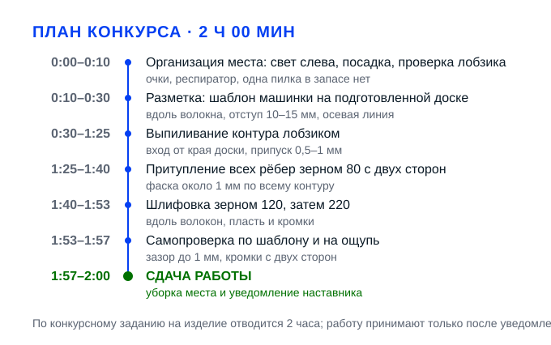
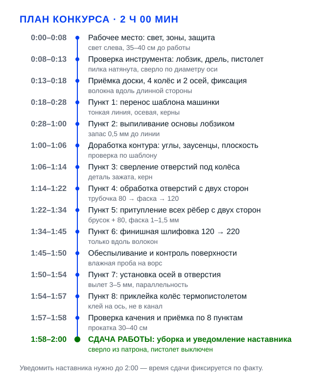
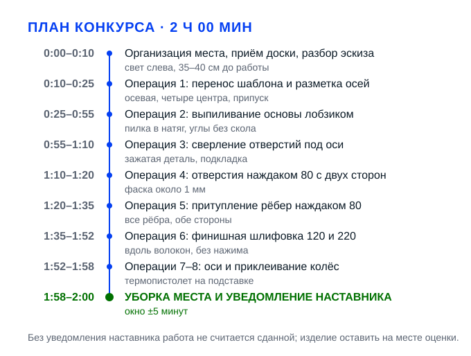

Изготовление деревянной игрушки (ФВ)
Задания ниже — официальные файлы «Абилимпикс» (источник: abilympics-russia.ru), разложенные по категориям. Решения написаны по тексту задания, регламенту и критериям оценки; в них указано, что именно проверяет эксперт.
Школьник
14–16 лет, базовый уровень заданияВ официальном файле категории не разделены отдельными разделами — приводим задание целиком; различия по категориям смотрите в таблице модулей.
Пошаговое решение
Задание для школьников укладывается в два часа и состоит из четырёх операций: перенести шаблон машинки на подготовленную доску, выпилить основу лобзиком, притупить все рёбра с двух сторон наждачной бумагой и отшлифовать изделие бумагой средней зернистости. Результат — деревянная игрушка, машинка без колёс: сверление отверстий и установка осей остаются студентам. Инструмент выдают почти без запаса: карандаш, лобзик, одна пилка к нему и три номера наждачной бумаги на тканевой основе — 80, 120 и 220. Поэтому всё держится на точности линии и на аккуратности в поворотах, где чаще всего ломается единственное полотно. Оценивают контур против шаблона, притупление кромок с обеих сторон, чистоту шлифовки, отсутствие разметки на изделии и соблюдение охраны труда: свет слева, 35–40 см от глаз, очки и респиратор, зажатая пилка, работа без рывков. Дальше задание разложено на пять задач.

Задача 1. Организовать рабочее место и подготовить инструментМодуль А · подготовка к работе · 15 минут из 2 часов
Рабочее место для этой компетенции — не фон, а первая операция: от того, как падает свет, на какой высоте лежат руки и в каком состоянии пилка, зависит, попадёте ли вы в карандашную линию. По конкурсному заданию школьнику даётся два часа на всю машинку, и первые пятнадцать минут уходят на подготовку: освещение и посадка, проверка лобзика, раскладка трёх номеров наждачной бумаги, заточенный карандаш и закреплённая заготовка. Готовиться надо быстро, но не суетливо: любая недоделка в этих пятнадцати минутах потом отнимает втрое больше времени на переделке.
Действие 1.1. Поставить свет и сесть правильно
Шаг 1.1.1
Начинаем не с доски, а с лампы и стула: свет от окна или настольной лампы должен падать на заготовку слева, если вы работаете правой рукой. Тогда тень от кисти и от высокой рамки лобзика уходит вправо и не закрывает карандашную линию, по которой вы ведёте пилку. Левше зеркально: свет справа, тень слева. Лампу опускаем примерно на 25–30 см над поверхностью и чуть наклоняем к себе, чтобы на доске не было блестящего пятна — в блике линия пропадает именно там, где начинается закругление.
Требование к освещению прямо записано в разделе охраны труда конкурсного задания: рабочее место должно быть хорошо освещено и свет должен падать на работу с левой стороны. На площадке для участников с нарушением зрения гарантируют не менее 300 люкс, но направление света каждый настраивает под себя. Ошибка здесь стоит не балла, а темпа: когда линия в тени, пилку ведут на глазок, контур уходит на 1–2 мм, и это уже видно на сдаче.
Посмотрите на доску и найдите свою тень: она не должна перекрывать ни одну часть шаблона. Проверьте просто — положите карандаш на линию и посмотрите, видно ли остриё без наклона корпуса. Если приходится наклоняться к доске ближе чем на 35 см, свет поставлен неправильно.
Типичная ошибка — сесть спиной к окну: доска освещена ровно, но собственная тень закрывает всю рабочую зону, и участник невольно начинает наклоняться над заготовкой. Конкурсное задание отдельно предупреждает: не наклоняться низко над заготовкой — это и риск для глаз, и потеря контроля над пилкой.
Эксперт обходит места в первые минуты и отмечает, кто начал размечать, не наладив свет: по работе видно сразу, потому что линия обводки у таких участников дрожит и двоится.
Шаг 1.1.2
Садимся так, чтобы корпус касался спинки стула, а не висел над верстаком. Расстояние от глаз до заготовки — 35–40 см, ровно столько, сколько требует инструкция по охране труда: ближе глаза устают за первые полчаса, дальше приходится тянуться и терять устойчивость руки. Высоту стула подбираем по локтю: предплечье лежит на крышке верстака почти горизонтально, лобзик держится без подъёма плеча. Ноги стоят на полу полной стопой, а не на перекладине.
При работе лобзиком корпус почти не двигается — движется рука, и вся устойчивость идёт от спины и предплечья. Если сидеть сгорбившись, кисть «гуляет» на 2–3 мм, а на такой детали, как капот или крыло машинки, это заметный завал контура. Время на посадку — полминуты, а экономит оно десятки минут, потому что вам не придётся перепиливать кривой участок.
Проверка простая: положите ладонь на верстак — она должна лежать всей поверхностью, без напряжения в плече. Посмотрите на доску без наклона головы: если вы видите весь контур шаблона целиком, посадка правильная. Через десять минут работы шея и поясница не должны болеть.
Частая ошибка — подсесть повыше, «чтобы лучше видеть»: плечо поднимается, кисть напрягается, и пилка идёт с перекосом, оставляя скошенную кромку. Вторая ошибка — работать стоя, потому что так привычнее: стоя теряется опора, и на длинных пропилах линию уводит в сторону.
На посадку эксперт смотрит в начале работы, а вывод делает к концу: если участник к середине начал горбиться и подтягивать доску к глазам, значит, высота была выбрана неверно, и кромки у него пойдут с завалом.
Действие 1.2. Проверить лобзик и заправить пилку
Шаг 1.2.1
Берём лобзик в руки и осматриваем три узла: рамку на трещины, оба зажима и винты натяжения. Пилку ставим зубьями вниз, к ручке, иначе она не режет, а трётся. Верхний конец заводим в зажим до упора, затягиваем барашек от руки и проверяем натяжение щипком: полотно должно звучать коротко и высоко, а при нажатии пальцем прогибаться не больше чем на 1 мм. Слабая пилка уводит рез в сторону на поворотах, перетянутая — ломается у зажима.
Конкурсное задание требует надёжно закреплять пилку в рамке лобзика — это не формальность, а условие точности: при слабом натяжении полотно «гуляет» и на радиусных участках, которых у машинки большинство, контур получается волнистым. Пилка у школьника по перечню оборудования одна, запасной не выдают, поэтому заправка с первого раза экономит всю работу.
Проверьте натяжение и посадку: пилка стоит вертикально, без перекоса в плоскости рамки, зубья смотрят вниз, барашек затянут до упора и не прокручивается. Покачайте рамку — пилка не должна звенеть при движении, у неё должен быть сухой короткий тон.
Ошибка, которая ломает работу сразу: поставить пилку зубьями вверх. Она не пилит, а полирует пропил, дерево греется, смолится, и участник давит сильнее — тут же срывает полотно. Вторая: затянуть только один зажим, второй оставить «на потом», и пилка выходит из него на первом же повороте.
Эксперт подходит и проверяет заправку до старта работы: смотрит направление зубьев, натяжение и нет ли перекоса рамки, потому что по этим признакам видно, работал ли участник с лобзиком раньше.
Шаг 1.2.2
Прежде чем вести пилку по шаблону, делаем пробный рез на обрезке той же доски: проводим карандашом короткую линию 10–12 см и проходим её лобзиком в рабочем темпе. Смотрим, идёт ли пилка по линии или уводит вбок, не забивается ли пропил опилками, не приходится ли давить корпусом. По этому резу вы понимаете свой инструмент: у каждой рамки свой люфт, и под него подстраивают угол наклона кисти.
Пробный рез занимает минуту, а спасает целую деталь: у неверно заправленного лобзика или погнутой рамки полотно уводит в одну сторону, и на шаблоне об этом узнают, когда уже пропилили половину контура. Исправлять такой увод на готовом изделии нельзя — только шлифовкой, а она снимает 0,5 мм за проход и симметрию не вернёт.
После пробного реза кромка должна быть ровной, без «лесенки» и без тёмных подпалин. Пилка не должна уходить от линии больше чем на полмиллиметра на длине 10 см. Если уводит сильнее — ослабьте зажим и переставьте пилку, а если не помогло, скажите эксперту: инструмент обязаны заменить.
Частая ошибка — начать сразу на шаблоне, «чтобы не терять время». На чужом или непривычном лобзике увод обнаруживается на третьем сантиметре контура, когда линию уже не спасти. Вторая ошибка — давить на инструмент: от давления пилка гнётся и режет не вертикально, а с наклоном.
Эксперт ценит, когда участник проверяет инструмент до работы: по пробному резу видно, умеет ли он читать поведение пилки, а не просто двигать рамкой. Он также отмечает, останавливается ли участник на пробном резе сознательно, а не по случайности.
Шаг 1.2.3
Кладём лобзик на верстак пилкой от себя, а не поперёк стола, и сразу договариваемся с собой о режиме: не гнуть рамку, не тянуть её в сторону на повороте, не давить корпусом и делать короткие паузы, если чувствуете, что полотно нагрелось. Пилку у школьника по перечню одна, поэтому её ресурс — это ваш ресурс: резкий рывок на радиусе рвёт полотно чаще всего именно у зажима, где металл уже ослаблен.
В конкурсном задании для школьника указана одна пилка для лобзика, у студентов их пять. Значит, у вас нет права на эксперименты: половина времени уйдёт на выпиливание контура, и любая потеря пилки до сдачи означает, что деталь останется недопиленной. Замена возможна только через эксперта, и он не обязан её давать, если полотно сломали из-за рывка.
Проверьте, что пилка сидит в зажимах без трещин у основания, лобзик лежит устойчиво и не свисает с края верстака, а на верстаке есть место, куда вы положите его между проходами. Если слышите при работе сухой скрип вместо шороха стружки — останавливайтесь и смотрите полотно.
Самое обидное — порвать единственную пилку на последнем радиусе, когда вся деталь уже выпилена. Вторая ошибка — оставить лобзик на краю верстака: он падает, рамка гнётся, и дальше рез идёт с уводом, который вы уже не исправите.
Эксперт в течение конкурса отмечает, как участник обращается с инструментом: кладёт ли его на место, не бросает ли, меняет ли темп на тонких участках. По этому видно реальную подготовку, а не заученную последовательность.
Действие 1.3. Разложить абразив, разметку и заготовку
Шаг 1.3.1
Достаём три номера наждачной бумаги на тканевой основе — 80, 120 и 220 — и раскладываем их слева от себя в порядке применения, каждый на своё место, подписав карандашом цифру на обратной стороне. Тканевая основа не рвётся, поэтому её удобно нарезать полосами примерно 20 на 8 см: полоса ложится под палец, её можно перехватить и работать и вдоль, и поперёк. Смешивать номера нельзя: после 80 на изделии остаются риски, и если на них положить 220, риски не уйдут, а заблестят.
По перечню оборудования у школьника именно эти три зернистости, и каждая отвечает за свою операцию: 80 притупляет рёбра, 120 и 220 дают шлифовку. Порядок номеров — это и есть технология: крупное зерно снимает материал, мелкое убирает его следы. Если начать с 220, вы будете тереть полчаса и всё равно не уберёте ступеньку от пилки.
Разложите листы так, чтобы их не пришлось искать в опилках: три отдельных места, подписи видны, полосы не перепутаны. Проверьте на ощупь, что на рабочей стороне действительно зерно, а не гладкая подложка, и что лист не затёрт до блеска — засаленная бумага не режет, а полирует.
Ошибка, которая проявляется только на сдаче: шлифовать всю деталь одним куском, переходя с 80 на 220 и обратно, не меняя полосу. В результате на изделии остаются продольные риски от крупного зерна, которые видно на свет и на ощупь. Вторая ошибка — держать абразив в общей куче, где он набирает опилки и начинает царапать.
Эксперт смотрит на кромки и пласти при сдаче, и первое, что он делает, — проводит пальцем и смотрит деталь на свет: риски от 80 видны сразу, как и переходы зернистости.
Шаг 1.3.2
Карандаш затачиваем остро, но не «иглой»: слишком тонкий грифель ломается о волокна и оставляет рваную линию, а тупой даёт полосу шириной в миллиметр, и вы теряете точность. Берите твёрдость ТМ или HB — мягкий графит размазывается под пальцем, и линия расползается. Резинку держим рядом, но стирать будем только до начала выпиливания: после запила линия должна оставаться целой, иначе нечего контролировать.
Линия обводки — это единственный ориентир для пилки, и от её толщины зависит, попадёте вы в размер или нет. При ширине линии в 1 мм вы имеете люфт в полмиллиметра в каждую сторону, и этого достаточно: деталь машинки небольшая, а крылья и капот оцениваются по контуру. Тонкая линия даёт вам право вести пилку прямо по графиту и не додумывать, где проходит край.
Проверьте карандаш на обрезке: линия должна быть ровной, тонкой и не продавливать дерево. Она не должна осыпаться при проведении пальцем рядом. Если грифель крошится и оставляет двойной след, заточите заново.
Ошибка — размечать маркером или ручкой: с дерева их не снять, а под краской или маслом они проступают. Вторая — обводить шаблон тупым карандашом и потом вести пилку по внутреннему краю широкой полосы: деталь выходит на 1–2 мм меньше шаблона, и это уже не исправить шлифовкой.
Эксперт смотрит на разметку в момент обводки: тонкая линия и точное совпадение с шаблоном — признак, что участник понимает, зачем она нужна. Отдельно он смотрит, осталась ли линия целой к моменту разметки и не стёрта ли она под пальцем.
Шаг 1.3.3
Заготовку кладём на выпиловочный столик или на подставку с прорезью так, чтобы пилка проходила в прорезь свободно, а доска лежала всей плоскостью и не качалась. Придерживаем левой рукой сверху, ближе к линии реза, но пальцы держим не на линии, а в 3–4 см от неё. Если на площадке есть струбцина и разрешено ею пользоваться, фиксируем доску за край: тогда руки свободны и можно вести лобзик двумя руками, что на длинных прямых даёт ровный рез.
Качающаяся доска — главная причина волнистого контура: пока вы ведёте пилку, заготовка подрабатывает, и пропил получается с уступом. Кроме того, конкурсное задание требует не делать резких движений лобзиком и не наклоняться низко над заготовкой — устойчивая доска как раз и убирает повод делать рывки.
Проверьте: нажмите на доску ладонью в разных точках — она не должна «кивать». Пилка входит в прорезь столика без трения о края. Пальцы левой руки не попадают в зону реза, а линия обводки видна вам полностью, без наклона корпуса.
Ошибка — держать доску на весу или на коленях: рез уходит, а пилка ломается на перекосе. Вторая — прижимать пальцы вплотную к линии, чтобы «чувствовать край»: при срыве пилки травма почти гарантирована, а по инструкции руки должны быть вне зоны реза.
Эксперт обходит рабочие места и смотрит на организацию: закреплена ли заготовка, свободен ли ход пилки, не лежат ли руки на линии реза. Это же он отмечает в разделе безопасности.
Действие 1.4. Снять риски и разложить порядок на верстаке
Шаг 1.4.1
Надеваем защитные очки и респиратор — оба пункта прямо названы в инструкции по охране труда для этой компетенции. Волосы убираем под резинку или головной убор, рукава застёгиваем или подворачиваем выше локтя, чтобы манжета не попала под рамку. Перчатки не надеваем: ткань наматывается на пилку, и это худший вид травмы на таком рабочем месте. Часы и браслеты снимаем — они цепляются за рамку лобзика и мешают контролю кисти.
Опилки от лобзика летят мелкой пылью, и при работе без респиратора через час начинает саднить в горле, а глаза слезятся от пыли, что сразу бьёт по точности ведения линии. Требование зафиксировано в КЗ, и его проверяют: отсутствие очков у работающего лобзиком — видимое нарушение, за которое снимают баллы по разделу охраны труда, независимо от качества изделия.
Проверьте себя в «зеркале» из телефона или попросите соседа посмотреть: очки на глазах, респиратор на месте, волосы убраны, рукава не свисают, украшений на руках нет. Маска должна сидеть плотно, а стёкла очков — не запотевать: если запотели, поправьте посадку сейчас, а не в середине пропила.
Самая частая ошибка — надеть очки «потом, когда начну пилить». Пыль идёт и при разметке, когда вы смахиваете стружку со стола, а привычка работать без защиты приводит к тому, что очки забываются к моменту реза. Вторая — работать в перчатках: пилка рвёт ткань и тянет руку к полотну.
Эксперт фиксирует средства защиты в самом начале конкурса, до первых пропилов, и потом проверяет, остаются ли они на участнике к концу работы. Особенно внимательно он смотрит на очки при первом пропиле: пыль летит именно тогда.
Шаг 1.4.2
Убираем с верстака всё, что не участвует в работе: сумки, чехлы, телефоны, лишние инструменты. Проход между рабочими местами по нормам этой компетенции — 1,5 м, и его нельзя перекрывать ничем, даже собственной сумкой: по площадке ходят эксперты и волонтёры. Лобзик кладём пилкой от себя, наждачную бумагу — в стороне от линии реза, чтобы полосы не попали под пилку и не намотались на неё.
Свободный верстак — это не про порядок ради порядка: на площади 3000 на 1900 мм у вас одна рабочая зона, и любая вещь на ней либо мешает вести лобзик, либо собирает опилки и потом переносит их на изделие. Опилки, втёртые в свежее дерево, остаются в волокнах и мешают и шлифовке, и оценке чистоты поверхности.
Проверьте: на верстаке лежат только заготовка, лобзик, карандаш, шаблон и три номера абразива. Проход за спиной свободен, ничего не свисает с края стола. Пилка не выступает за габарит верстака, где её можно задеть рукавом.
Ошибка — оставить инструмент на краю стола: он падает от первого же движения, и погнутая рамка лобзика портит весь дальнейший рез. Вторая — сдувать опилки с детали: пыль летит в глаза, а на доске остаются разводы от слюны, которые потом придётся снимать шлифовкой.
Эксперт оценивает организацию места по ходу всей работы, а не одним взглядом: ему важно, поддерживается ли порядок между операциями, а не только на старте.
Задача 2. Перенести шаблон машинки на подготовленную доскуМодуль А · разметка · 20 минут из 2 часов
Первый пункт задания сформулирован коротко: на подготовленную к работе доску переносится шаблон машинки. За этой фразой стоит вся геометрия будущего изделия — если линия уйдёт или шаблон сместится при обводке, аккуратная работа лобзиком этого не исправит, потому что пилка пойдёт точно по неверной линии. На разметку уходит двадцать минут из двух часов, и тратить их надо на выбор стороны доски, ориентацию шаблона по волокну, обводку без сдвига и проверку симметрии. Разметка — единственный этап, который можно переделать без потерь: стереть линию и обвести заново проще, чем перепиливать деталь.
Действие 2.1. Выбрать сторону доски и направление волокна
Шаг 2.1.1
Кладём доску перед собой и осматриваем обе пласти: ищем сучки, смоляные кармашки, тёмные полосы, сколы на кромках и следы строжки. Пласть, где есть сучок или смоляной карман, для лицевой стороны не годится: сучок твёрже окружающего дерева, пилка на нём уводит в сторону, а при шлифовке он выкрашивается и оставляет раковину. Лицевой делаем ровную сторону без дефектов, а доску укладываем этой стороной вверх, чтобы все карандашные линии легли на неё.
Лицевая сторона — это то, что увидит эксперт на сдаче: по ней он смотрит чистоту шлифовки и ровность кромок. Если размечать на стороне с сучком, все дефекты дерева попадут в видимую зону, и никакая шлифовка их не уберёт — сучок просто выкрошится при обработке кромки. По конкурсному заданию изделие изготавливается из подготовленной доски, то есть выбор стороны остаётся за участником.
Проведите ладонью по обеим пластям: ровная сторона ощущается одинаково гладкой, без бугорков и вмятин. Поставьте доску на ребро и посмотрите на свет — дефекты видны как тёмные пятна и полосы. Если обе стороны чистые, берите ту, где волокно идёт ровнее и без резких завитков.
Ошибка — размечать на той стороне, которая случайно оказалась сверху. Вторая, более коварная, — заметить сучок и всё равно обвести шаблон так, чтобы сучок попал на крыло или капот: тонкое место с сучком ломается при выпиливании, и деталь приходится начинать заново, а второй доски на площадке может не быть.
Эксперт осматривает изделие при сдаче со всех сторон и отмечает дефекты материала, которые участник мог обойти разметкой, но не обошёл. Он также смотрит, не остались ли на лицевой пласти сучки, которые можно было обойти разметкой.
Шаг 2.1.2
Кладём шаблон на доску так, чтобы длина машинки шла вдоль волокна, а не поперёк. Волокно видно как полосы и штрихи на пласти: они тянутся вдоль длинной стороны доски. Если расположить машинку поперёк, тонкие крылья и капот окажутся на поперечном срезе волокон, и при выпиливании кромка начнёт скалываться мелкими щепками. Вдоль волокна пилка идёт спокойнее, а кромка получается чистой и прочной.
Деревянная игрушка должна выдерживать игру, а не только осмотр: деталь с поперечным расположением волокон в тонком месте ломается по волокну при первом же падении. Кроме того, вдоль волокна шлифовка идёт ровнее и не поднимает ворс, а значит, поверхность получается гладкой за меньшее число проходов — это прямо экономит вам время в конце конкурса.
Проверьте направление: посмотрите на доску с торца — волокна должны идти вдоль длинной стороны. Приложите шаблон и убедитесь, что длинная ось машинки параллельна полосам волокна с точностью «на глаз, но без перекоса»: расхождение больше 10–15 градусов уже нежелательно.
Ошибка — ставить шаблон поперёк, потому что так он лучше влезает по ширине доски. Вторая — не смотреть на волокно вообще, а ориентироваться только на кромки доски: у подготовленной доски волокно может идти не параллельно кромке, и тогда машинка встанет косо относительно структуры дерева.
Эксперт смотрит на направление волокон в готовом изделии и на чистоту кромок: по ним сразу видно, думал ли участник о структуре дерева или просто обвёл шаблон.
Шаг 2.1.3
Отступаем от края доски не меньше 10–15 мм и только потом обводим контур. Отступ нужен для двух вещей: пилке требуется опора под подошву лобзика, иначе зубья на выходе из доски вырывают щепу, а тонкая кромка между линией и краем доски просто отламывается. Кроме того, при шлифовке вам понадобится место, чтобы положить деталь и не уронить её на пол. Если доска узкая, шаблон сдвигаем так, чтобы самые близкие к краю участки всё равно имели запас 8–10 мм.
Правило отступа — практическое, а не формальное: выпиливание идёт по замкнутому контуру, и на участках, где линия подходит к краю доски ближе 5 мм, дерево скалывается именно в самом заметном месте — на крыле или бампере. Сколы потом приходится зашлифовывать, и симметрия детали уходит: одно крыло становится короче другого.
Проверьте запас линейкой в четырёх точках: слева, справа, спереди и сзади. Минимальный зазор между линией обводки и краем доски — не меньше 8 мм, оптимально 10–15 мм. Убедитесь, что доска при этом не выступает за габариты выпиловочного столика настолько, чтобы качаться.
Ошибка — прижать шаблон к самому краю, чтобы «поместилось». Вторая — не проверить зазор у заднего бампера, где линия часто выходит к торцу доски: там пилка вырывает щепу, и торец детали получается рваным.
Эксперт при сдаче смотрит на кромки по всему контуру: сколы и рваные торцы видны сразу и говорят о том, что заготовку расположили без запаса. Торцы, вырванные щепой, он относит к грубым дефектам, даже если контур совпадает с шаблоном.
Действие 2.2. Обвести контур без сдвига шаблона
Шаг 2.2.1
Кладём шаблон на выбранное место и фиксируем его так, чтобы он не сдвинулся ни на миллиметр: прижимаем левой ладонью в двух точках — у переднего и у заднего края, — а обводим правой. Если шаблон скользит по строганой доске, подкладываем под него кусочек малярного скотча или слегка придерживаем ногтем. Начинаем обводку с одной точки и идём в одном направлении, не перескакивая с участка на участок: тогда при случайном сдвиге шаблона вы увидите расхождение в одном месте, а не по всему контуру.
Сдвиг шаблона на 2–3 мм в середине обводки — самая незаметная ошибка на этом этапе: линия выглядит целой, но контур становится несимметричным, и машинка получается кособокой. Заметить это можно только повторной обводкой, а переделывать придётся в условиях, когда время уже ушло. Именно поэтому обводка идёт в одном направлении и с фиксацией шаблона в двух точках.
Проверьте линию на разрыв: она должна быть непрерывной по всему контуру, одной толщины, без двойных участков. Приложите шаблон к уже обведённому контуру — он должен совпасть без зазора, если обвести его повторно, вторая линия ляжет точно поверх первой.
Ошибка — придерживать шаблон той же рукой, которой обводите, и постоянно его подправлять: шаблон «ездит», линия получается двойной, и вы не знаете, по какой из двух вести пилку. Вторая — обводить, начиная с середины и потом возвращаясь, из-за чего в месте стыка появляется ступенька.
Эксперт подходит в момент разметки и смотрит, как участник держит шаблон и ведёт карандаш: по этому видно, понимает ли он, что линия — это будущая кромка.
Шаг 2.2.2
Карандаш держим почти вертикально, с небольшим наклоном в сторону движения, и ведём его по краю шаблона, прижимая грифель к кромке без нажима. Наклон важен: если наклонить карандаш сильно, грифель уходит под шаблон, и линия получается на 0,5–1 мм шире, чем нужно. Обводим все закругления и переходы, включая арки под колёса: именно там точность важнее всего, потому что арки задают посадку будущих колёс и сразу видны на готовом изделии.
Толщина и положение линии определяют, сколько дерева вы оставите на обработку. Если вести карандаш по внешнему краю линии, вы гарантированно уйдёте в плюс и потом снимите лишнее шлифовкой, а это долго. Если по внутреннему, деталь выйдет в минус против шаблона, и исправить это нечем — наращивать дерево на конкурсе не будут.
Проверьте линию по всей длине: она тонкая, непрерывная и лежит точно по кромке шаблона. Посмотрите на контур с торца доски — линия не должна «уезжать» от края шаблона. Отдельно проверьте арки под колёса: их кривизна должна быть плавной, без спрямлённых участков.
Ошибка — обводить с сильным нажимом: грифель продавливает волокна, и при шлифовке в этом месте остаётся канавка, которую придётся снимать. Вторая — обвести контур по памяти, не прижимая шаблон на закруглениях, где он легче всего сдвигается и где ошибка наиболее заметна.
Эксперт смотрит на арки и на симметрию силуэта при сдаче: небрежно обведённые закругления дают «приплюснутые» арки, которые не исправить ни пилкой, ни шлифовкой.
Шаг 2.2.3
Обведя контур, ставим на доске две-три служебные метки, которые помогут при выпиливании и при проверке. Первая — осевая линия по длине машинки, делящая силуэт пополам: по ней потом проверяется симметрия крыльев и капота. Вторая — короткие риски поперёк линии в местах, где пилку надо останавливать и разворачивать, например на переходах от крыла к капоту. Метки ставим тонко, снаружи контура, чтобы они не смешивались с линией реза.
Служебные метки — это ваш контроль качества в процессе: без осевой линии вы увидите асимметрию только на сдаче, когда исправлять уже нечего. С рисками на поворотах вы не проскочите точку разворота пилки — а именно там чаще всего и уводит контур. Разметка занимает минуту, а заменяет собой несколько замеров в конце работы.
Проверьте метки: осевая линия проходит через середину силуэта и делит его на две равные части — измерьте линейкой расстояние от осевой до крайних точек слева и справа, расхождение допускается не больше 1 мм. Риски на поворотах видны и не пересекают линию реза.
Ошибка — не ставить осевую и потом «на глаз» проверять симметрию готовой детали: глаз ошибается на 1–2 мм, а это уже заметная кособокость. Вторая — рисовать метки жирно и поверх контура, из-за чего непонятно, где именно проходит линия реза.
Эксперт при сдаче прикладывает деталь к шаблону и смотрит на симметрию: наличие осевой разметки на доске в процессе работы он тоже отмечает как признак осознанной разметки.
Действие 2.3. Проверить разметку и оставить припуск
Шаг 2.3.1
Прежде чем брать лобзик, проверяем готовую разметку целиком: обводим взглядом контур от переднего бампера по крылу, капоту, заднему крылу и обратно. Смотрим, нет ли разрывов, двоящихся участков, ступенек на стыках, где вы останавливали карандаш. Прикладываем шаблон второй раз — сначала лицевой стороной, потом перевёрнутым: перевёрнутый шаблон покажет, насколько силуэт зеркален, если шаблон симметричный.
Проверка перед выпиливанием стоит три минуты, а переделка после — всю оставшуюся работу: после того как пилка прошла контур, исправить разметку невозможно, можно только шлифовать, а шлифовка снимает десятые доли миллиметра. На соревновании именно на этом этапе теряется больше всего баллов, потому что ошибку обнаруживают слишком поздно.
Контур непрерывный, без двойных линий и разрывов, шаблон при повторном наложении совпадает с обводкой. Крайние точки силуэта находятся на одинаковом расстоянии от осевой линии. Все арки под колёса обведены полностью и имеют плавную кривизну.
Ошибка — посмотреть на разметку «в целом» и не заметить разрыв в 3–4 мм на внутренней стороне крыла: пилка в этом месте пойдёт по интуиции, и получится ступенька. Вторая — проверять разметку, уже держа лобзик в руке, и торопиться, потому что «время идёт».
Эксперт не оценивает разметку отдельно, но видит её результат: ровный, симметричный контур с плавными арками получается только у тех, кто проверил линии до первого пропила.
Шаг 2.3.2
Отдельно решаем вопрос припуска: пилку ведём так, чтобы она шла по внешней стороне карандашной линии, а не строго по её середине. Пропил у пилки имеет ширину около 1 мм, и если вести точно по линии, вы снимете половину допуска в минус. Оставленный припуск 0,5–1 мм снимается шлифовкой, и деталь выходит точно по шаблону. Ширину собственного пропила проверяем на обрезке: провели рез и посмотрели, сколько дерева унесла пилка.
Припуск — это страховка: шлифовка снимает материал, но не возвращает его. По конкурсному заданию после выпиливания следуют притупление рёбер и шлифовка наждачной бумагой, то есть 1–2 мм по контуру всё равно уйдут, и лучше, чтобы они уходили с припуска, а не с самой детали. С припуском вы гарантированно попадаете в размер шаблона, без него — попадаете «примерно».
Проверьте на обрезке: ширина пропила и его поведение на повороте. Отметьте карандашом на доске с внешней стороны контура, какой зазор вы держите, — это помогает не забыть про припуск в середине работы, когда появится азарт резать быстрее.
Ошибка — вести пилку точно по графиту, «чтобы потом меньше шлифовать». Экономия кажется очевидной, но на арках и закруглениях пилка всегда чуть уводит внутрь, и деталь выходит меньше шаблона. Вторая — оставить припуск 3–4 мм: шлифовать такой слой вручную долго, и вы не успеете к сдаче.
Эксперт при сдаче прикладывает деталь к шаблону: совпадение по контуру и есть итог правильного припуска, а деталь, уменьшенная против шаблона, видна сразу.
Шаг 2.3.3
Последняя проверка перед лобзиком: убеждаемся, что доска лежит устойчиво, шаблон и карандаш убраны в сторону и не мешают, а линия реза видна вам полностью. Проверяем, что выбранная точка входа пилки — та, с которой удобно начинать, и что рядом с ней нет сучка. Отмечаем эту точку маленьким крестиком на линии и только после этого берём лобзик в руки.
Точка входа определяет, как пойдёт весь рез: если начать в неудачном месте, придётся либо разворачивать пилку на пятачке, либо доходить до удобного участка с перекосом. Отмеченная заранее точка входа экономит нервы и не даёт начать резать «где получится». Кроме того, в этот момент вы последний раз видите разметку целиком — дальше взгляд будет занят только пилкой.
Готовность к резу проверяется так: линия видна без наклона корпуса, доска не качается, лобзик заправлен, очки и респиратор на месте, на верстаке свободно. Точка входа отмечена, участок вокруг неё чистый, время по часам отмечено — чтобы понимать, сколько уходит на выпиливание.
Ошибка — начать рез, не отметив точку входа, и потом разворачивать пилку на месте, расширяя пропил: получается «закус» и рваная кромка в самом заметном месте. Вторая — оставить шаблон лежать рядом с линией реза и зацепить его рамкой лобзика.
Эксперт наблюдает за началом выпиливания: спокойный вход в рез и уверенное ведение пилки отличают участника, который продумал разметку, от того, кто начал резать сразу.
Задача 3. Выпилить основу машинки лобзикомМодуль А · выпиливание · 50 минут из 2 часов
Второй пункт задания — выпилить лобзиком основу машинки. Это самая долгая и рискованная часть работы: на неё уходит около пятидесяти минут из двух часов, и здесь появляется или теряется контур. Пилка одна, доски второй нет, поэтому резать надо в спокойном темпе, с постоянным контролем вертикальности и с остановками на поворотах. Ошибки этого этапа не компенсируются шлифовкой: перекос пилки даёт клин по толщине, увод в сторону — кособокий силуэт, а скол на выходе — рваную кромку в самом заметном месте. Задача разбита на вход в рез, прямые участки, повороты и проверку готового контура.
Действие 3.1. Войти в рез и поймать рабочий темп
Шаг 3.1.1
Берём лобзик правой рукой за ручку так, чтобы указательный палец лёг вдоль верхней части рамки: так вы чувствуете плоскость полотна и не заваливаете его набок. Корпус ставим над доской, предплечье лежит на верстаке — движение идёт от локтя, а не от плеча. Левой рукой придерживаем доску в 3–4 см от линии реза, не накрывая её ладонью. Проверяем вертикальность: рамка должна стоять строго над линией, а не с наклоном вперёд или назад.
Положение корпуса и хват задают вертикальность пропила, а от неё зависит, будет ли кромка перпендикулярна пласти. Конкурсное задание отдельно предупреждает: не делать резких движений лобзиком и не наклоняться низко над заготовкой. Движение от локтя с опорой предплечья — это и есть способ держать пилку ровно без лишних усилий.
Проверьте хват и стойку: кисть не зажата, плечо не поднято, доска не качается. Рамка лобзика стоит вертикально относительно пласти — посмотрите сбоку, полотно не должно уходить ни вперёд, ни назад. Свободной рукой проверьте, что доска прижата и не поедет при первом движении.
Ошибка — держать лобзик за рамку сверху, как рубанок: кисть перекашивается, и пилка идёт с наклоном, оставляя клиновидную кромку. Вторая — работать на весу, без опоры предплечья: рука устаёт за десять минут, амплитуда растёт, и на длинных участках контур становится волнистым.
Эксперт смотрит на постановку рук в первые минуты реза: по хвату видно, работал ли участник лобзиком раньше и понимает ли, откуда берётся вертикальность.
Шаг 3.1.2
Входим в рез не с линии контура, а с края доски: ведём пилку от кромки по прямой до контура и только там разворачиваемся на обводку. У школьника по перечню оборудования нет дрели, поэтому технологическое отверстие для внутренних вырезов не сверлят — вход всегда идёт от края доски по вспомогательной линии. Эту линию проводим заранее карандашом от кромки до контура под углом, близким к прямому, чтобы подходить к контуру в удобной точке.
Вход от края даёт две вещи: пилка не «клюёт» доску в середине детали и не рвёт волокна в случайном месте, а вы начинаете работу в предсказуемой точке с опорой под подошвой. Если пытаться начать рез прямо на контуре, пилка прыгает по поверхности, оставляет царапины, и первые сантиметры контура получаются рваными — а это как раз капот и крылья.
Проверьте вспомогательную линию: она начинается на кромке доски, доходит до контура и не пересекает сам силуэт. При входе пилка идёт по этой линии без рывков, а в точке выхода на контур вы останавливаетесь, не разворачиваясь с нажимом. Убедитесь, что после выхода на контур вам видно направление дальнейшего реза.
Ошибка — начинать рез в середине детали, продавливая пилку: остаётся скол и пятно, которое потом не убрать. Вторая — вести вспомогательную линию так, что она выходит на контур в самом тонком месте крыла: там дерево скалывается при развороте, и контур получает срыв.
Эксперт видит, как участник входит в рез: аккуратная вспомогательная линия и спокойный вход говорят о понимании технологии, а не о работе наугад. Он отмечает, есть ли на доске вспомогательные линии: по ним видно, что вход в рез продуман заранее.
Шаг 3.1.3
После входа на контур находим рабочий темп: примерно 60–80 двойных ходов в минуту, короткими движениями по 3–5 см, без нажима на рамку. Пилка должна резать сама, вы только направляете её по линии. Если приходится давить, значит, пилка забилась опилками или затупилась — остановитесь и разберитесь. Через каждые 10–15 минут работы делаем паузу на 10–20 секунд, чтобы размять кисть и посмотреть на контур со стороны.
Темп — это точность: при спокойном движении пилка успевает выносить опилки из пропила и идёт по линии, а при быстром рез уводит в сторону и греется. Ровно этот темп позволяет пройти весь контур и уложиться в отведённое время. Паузы нужны не для отдыха, а для контроля: свежий взгляд видит увод, который в процессе работы кажется нормой.
Проверьте темп по звуку и по стружке: звук ровный, без визга, стружка выходит мелкая и сухая, на кромке нет тёмных подпалин. Линия реза остаётся видимой впереди пилки — если её не видно, значит, вы наклонились слишком близко и работаете вслепую.
Ошибка — гнать в максимальном темпе, чтобы успеть: на повороте пилка не успевает развернуться и срезает угол, а на прямом участке уходит внутрь контура. Вторая — давить на лобзик, когда пилка плохо идёт: полотно греется, теряет твёрдость и рвётся у зажима.
Эксперт оценивает не скорость, а качество контура, и по ритму работы видит, кто торопится в ущерб точности: у таких участников к концу времени появляются срезы и закусы.
Действие 3.2. Пройти прямые участки по линии
Шаг 3.2.1
На длинных прямых — по низу кузова и по верху капота — ведём пилку, слегка поворачивая рамку, а не выкручивая кисть. Корпус при этом остаётся на месте, двигается только рука от локтя. Пилку держим на внешней стороне карандашной линии, оставляя тот припуск в 0,5–1 мм, который снимется шлифовкой. Взгляд держим не на пилке, а на 2–3 см впереди неё, по линии: тогда рука сама выравнивает движение.
Прямые участки задают общую геометрию силуэта: если низ кузова поведёт волной, машинка будет «стоять криво» на любой поверхности, и это видно на сдаче даже без линейки. Ведение по линии с припуском сохраняет вам право на исправление шлифовкой, а взгляд впереди пилки — единственный способ не «пилить назад», догоняя уже пройденную линию.
Проверьте прямолинейность на просвет: приложите линейку или шаблон к линии реза и посмотрите на зазор. Он должен быть равномерным, без «волны» больше 0,5 мм на длине 50 мм. Кромка ровная, пилка не оставила глубоких рисок и закусов.
Ошибка — смотреть на пилку сверху вниз, а не на линию впереди: движение получается с задержкой, и на прямых появляется волна. Вторая — выкручивать кисть на повороте рамки: пилка наклоняется, и кромка получается косой по толщине.
Эксперт проводит пальцем по кромке: на прямых участках сразу чувствуется волна и закусы, а по ним судят о владении инструментом. Он также смотрит на низ кузова: именно по этой линии видно, стоит ли машинка ровно.
Шаг 3.2.2
Держим пилку строго перпендикулярно пласти и проверяем это не на глаз, а контролем: останавливаемся в середине прямого участка, отводим лобзик и смотрим на пропил с торца доски. Пропил должен быть вертикальным, одинаковым по толщине сверху и снизу. Если сверху щель шире, чем снизу, рамка завалена на вас; если наоборот — от вас. Наклон исправляем положением корпуса, а не силой кисти.
Перекос пилки даёт клиновидную кромку: сверху деталь шире, снизу уже. На изделии толщиной 10–12 мм это особенно заметно, потому что площадь притупления и шлифовки большая, и клин потом не сошлифовать, не потеряв размер. Проверка вертикальности в середине реза — это единственный момент, когда ошибку ещё можно остановить.
Смотрим на торец доски: пропил идёт ровной вертикальной полосой, без наклона. Приложите угольник к пласти и к линии реза — зазор между полотном угольника и пропилом не должен быть заметным. Толщина кромки сверху и снизу одинаковая при взгляде с торца.
Ошибка — проверять вертикальность «на глаз» сверху, где перекос не виден вообще. Вторая — исправлять наклон сильным нажимом на одну сторону рамки: пилка гнётся, и пропил получается не прямым, а дугой, что хуже обычного перекоса.
Эксперт смотрит на изделие с торца при сдаче: клиновидная кромка — один из самых частых дефектов на этой компетенции и один из самых заметных. Перекос он проверяет и на арках, где клиновидность кромки особенно бросается в глаза.
Шаг 3.2.3
Следим за опилками: они должны свободно выходить из пропила. Если пилка идёт туго и стружка не выносится, останавливаемся, отводим лобзик и сметаем опилки щёткой или сдуваем в сторону, но не на деталь. Не пытаемся «продавить» забитый пропил: от нажима пилка нагревается, смолится и рвётся. На каждом крупном участке контура полезно один раз пройтись щёткой по линии реза — это две секунды и спокойный ход пилки.
Забитый пропил — главная причина срыва пилки у школьника, у которого она одна: полотно греется, теряет упругость и ломается у зажима. Кроме того, от нагрева на кромке остаются тёмные подпалины и смоляные потёки, которые потом приходится снимать наждачной бумагой, а это лишние проходы и потеря симметрии кромки.
Проверьте ход: пилка входит в пропил и выходит без сопротивления, звук ровный, стружка сухая и мелкая. На кромке нет тёмных полос и блеска от смолы. Если слышите скрип, а стружка стала мелкой пылью — полотно перегрелось, дайте ему остыть, не снимая с заготовки.
Ошибка — работать «в опилках», не убирая их: пропил забивается, пилка идёт с уводом, и контур уплывает в сторону от линии. Вторая — сдувать опилки прямо на деталь, втирая их в свежую кромку: потом они проступают тёмными точками после шлифовки.
Эксперт обращает внимание на чистоту рабочего места в процессе: опилки, втёртые в кромку, видны на сдаче как тёмные вкрапления. Пыль и смола на кромке для него признак того, что пилку перегрели и вели с нажимом.
Действие 3.3. Развернуться на радиусах и арках
Шаг 3.3.1
На повороте не разворачиваем рамку с нажимом, а останавливаем продвижение и «топчемся» на месте: пилим короткими движениями без подачи вперёд, пока пилка не освободит площадку, и только потом плавно доворачиваем рамку на нужный угол. Угол поворота за один приём — не больше 15–20 градусов. Так пропил получается плавным, а пилка не закусывает в кривой.
Резкий разворот с нажимом — самая частая причина скола и срыва пилки: полотно упирается в стенку пропила, изгибается и рвётся, а на кромке остаётся закус. Притупление рёбер и шлифовка потом не уберут закус полностью, потому что он уходит вглубь на 1–2 мм, а снимать столько с кромки нельзя — потеряете размер.
Проверьте радиус на глаз и пальцем: переход от прямой к кривой плавный, без ступеньки и без закуса. Пропил в повороте не расширен, кромка не рваная. Если пилка шла туго, но вы остановились и повторили приём, следов на кромке не остаётся.
Ошибка — доворачивать рамку в движении, «чтобы не терять темп»: именно в этот момент пилка ломается у зажима, и у школьника второй нет. Вторая — разворачиваться слишком мелкими шагами и «зализать» угол, спилив вершину радиуса.
Эксперт смотрит на радиусы при сдаче: плавные дуги без закусов — признак аккуратного реза, а угловатые или рваные повороты видны сразу. Он смотрит на повороты в готовом изделии и оценивает, насколько плавно они пройдены.
Шаг 3.3.2
Арки под колёса — самый ответственный участок силуэта. Подходим к арке по прямой, останавливаемся в начале закругления, затем проходим дугу короткими движениями с постоянным доворотом, держа пилку на внешней стороне линии. Внутреннюю сторону арки не подрезаем: именно она задаёт посадку колеса и должна остаться ровной дугой. На выходе из арки снова выпрямляем движение и только потом ускоряемся.
Арки определяют, как машинка будет выглядеть: даже небольшая разница между двумя арками читается как брак, потому что колёса симметричны по определению. Кроме того, именно на арках пилка чаще всего уводит внутрь радиуса, и если не контролировать внешнюю сторону линии, дуга получится «подъеденной» и колесо в неё не встанет.
Приложите шаблон к готовой арке: зазор по дуге должен быть равномерным, без «подъеденных» участков. Обе арки с одной стороны имеют одинаковую кривизну — проверьте, перевернув деталь. Плавность дуги проверяется на просвет линейкой: она должна касаться дуги в одной точке.
Ошибка — резать арку «по хорде», срезая дугу по прямой: колесо потом садится с зазором, и это видно на изделии. Вторая — уводить пилку внутрь арки, чтобы «выровнять» дугу: арка становится меньше, и исправить это невозможно.
Эксперт прикладывает деталь к шаблону и смотрит именно на арки: это эталонный участок для проверки точности контура. Разница в кривизне двух арок на одной стороне для него равносильна ошибке разметки.
Шаг 3.3.3
Когда пилка подходит к точке смыкания контура, замедляемся и поддерживаем деталь левой рукой снизу, чтобы выпиленная часть не отломилась под собственным весом. Последние 5–10 мм проходим медленно, без нажима, и выводим пилку в тот же вспомогательный пропил, с которого начинали, если контур замкнутый. Деталь после выхода пилки сразу кладём на верстак лицевой стороной вверх и не тянем к себе.
Выход из реза — момент, когда тонкая часть силуэта остаётся висеть на нескольких миллиметрах дерева. Рывок или спешка здесь ломают крыло или бампер, и деталь приходится начинать заново, а доски второй нет. Поддержка рукой и медленный выход стоят пяти секунд и сохраняют полчаса работы.
Проверьте после выхода: деталь отделена целиком, контур замкнут, на внутренней кромке нет скола от выхода пилки. Деталь лежит на верстаке устойчиво, не качается на неровной кромке. Пилка целая, зажимы не разболтались.
Ошибка — вытолкнуть деталь из доски, не поддержав её: она падает на пол и скалывается по тонкому месту. Вторая — тянуть деталь на себя, не выведя пилку: кромка в точке выхода рвётся, и скол уходит в лицевую пласть.
Эксперт присутствует при отделении детали, если успевает подойти: сколы на выходе пилки он видит сразу по рваной кромке на видном месте. Скол на выходе пилки он считает грубым дефектом, потому что тот всегда на видном месте.
Действие 3.4. Проверить контур до перехода к шлифовке
Шаг 3.4.1
Кладём выпиленную деталь на верстак и прикладываем к ней шаблон: сначала лицевой стороной, потом перевёрнутым. Смотрим зазоры по всему контуру — они должны быть одинаковыми и не превышать 1 мм. Отдельно проверяем симметрию по осевой: расстояние от осевой до крайних точек слева и справа, одинаковость арок, высоту капота и низа кузова. Все расхождения записываем или запоминаем точно — где и сколько.
Проверка до шлифовки нужна потому, что шлифовка не исправляет форму, а только сглаживает её: если крыло на 2 мм короче, наждачная бумага не сделает его длиннее, зато снимет ещё немного. По конкурсному заданию после выпиливания идут притупление рёбер и шлифовка, и это последний момент, когда можно аккуратно подрезать торчащий участок лобзиком.
Зазор между деталью и шаблоном равномерный, симметрия по осевой в пределах 1 мм, арки одинаковые. Кромка по всему контуру целая, без сколов и закусов. Если нашли участок, выходящий за шаблон больше чем на 1,5 мм, отметьте его карандашом снаружи, чтобы подрезать.
Ошибка — сразу начинать шлифовать, не приложив шаблон: снимается материал там, где и так всё в норме, а расхождение остаётся. Вторая — увидеть перекос и начать «выравнивать» его шлифовкой, снимая по 2–3 мм: это долго, и симметрия всё равно не восстанавливается.
Эксперт при сдаче делает ровно это: прикладывает деталь к шаблону и смотрит зазоры. Поэтому проверка заранее — это возможность увидеть изделие глазами эксперта до сдачи.
Шаг 3.4.2
Если на проверке нашёлся участок, выходящий за контур, подрезаем его тем же лобзиком, аккуратно и короткими проходами, а не стамеской и не ножом. Подводим пилку к отмеченному месту по дополнительному пропилу от края или снимаем лишнее короткими движениями вдоль кромки, каждый раз проверяя приложение шаблона. Снимаем не больше 1 мм за подход: вернуть снятое дерево нельзя.
Подрезка лобзиком контролируема: вы видите линию и снимаете ровно то, что выходит за шаблон. Нож или стамеска на торце дают скол по волокну, который уходит вглубь на несколько миллиметров и портит лицевую пласть — а лицевая пласть на сдаче проверяется отдельно. Короткие проходы с проверкой позволяют остановиться в нужный момент.
После подрезки снова прикладываем шаблон: зазор по обработанному участку не больше 1 мм, переход к соседним участкам плавный, без ступеньки. Кромка целая, сколов нет. Проверьте, что подрезанный участок не стал тоньше по толщине — посмотрите с торца.
Ошибка — срезать лишнее ножом «по-быстрому» и расколоть торец по волокну. Вторая — подрезать слишком много и уйти в минус: теперь крыло короче шаблона, и это уже необратимо, потому что шлифовка только уменьшает деталь.
Эксперт отличает аккуратную подрезку от грубой по состоянию кромки: после лобзика она ровная, после ножа — со сколами и задирами. Он также смотрит, не осталось ли на кромке следов подрезки в виде ступенек.
Задача 4. Притупить все рёбра с двух сторонМодуль А · обработка кромок · 15 минут из 2 часов
Третий пункт конкурсного задания звучит так: все рёбра на изделии с двух сторон притупляются наждачной бумагой. Это операция, которую чаще всего делают формально — прошлись по кромке и пошли дальше, — а на сдаче именно она отличает игрушку от выпиленной заготовки. Деревянная машинка попадает в руки ребёнка, и острые кромки на ней недопустимы: эксперт проверяет изделие пальцем по всему контуру, с обеих сторон. На притупление уходит около пятнадцати минут, работаем зерном 80 из набора наждачной бумаги на тканевой основе, и делаем её до того, как возьмёмся за шлифовку средним и мелким зерном.
Действие 4.1. Притупить рёбра с лицевой стороны
Шаг 4.1.1
Отрезаем от листа зернистостью 80 полосу шириной примерно 8 см и длиной 20 см, складываем её пополам зерном наружу или накручиваем на деревянный брусок — так нагрузка идёт по всей плоскости, а не по кончикам пальцев. Держим полосу двумя руками: рабочая рука сверху, вторая придерживает деталь. Деталь кладём на верстак и прижимаем у края, чтобы она не ездила. Работаем на весу над столом, а не на коленях.
Зерно 80 в наборе для школьника — самое крупное, и его задача снять фаску, а не отполировать поверхность. Полоса, намотанная на брусок, работает плоско: кромка притупляется равномерно по всей длине, без «волны», которая получается, когда трут пальцем. Деталь, закреплённая на верстаке, не подпрыгивает под наждаком, а значит, фаска выходит ровной.
Проверьте приготовления: полоса не рвётся при натяжении, зерно не стёрто до блеска, брусок ровный и без заусенцев. Деталь лежит устойчиво и не сдвигается при нажатии. Руки не касаются абразива открытой кожей — от зерна 80 на пальцах остаются потёртости, которые мешают работать дальше.
Ошибка — тереть кромку пальцем без бруска: фаска получается узкой и волнистой, а на пальцах появляются потёртости. Вторая — держать деталь на весу в воздухе: она пружинит, и вместо ровной фаски получается скруглённый, «съеденный» участок в одном месте.
Эксперт смотрит на равномерность фаски при сдаче: ровная полоска по всему контуру говорит о том, что инструмент держали плоско, а не тёрли «как получится».
Шаг 4.1.2
Начинаем с длинных рёбер — низ кузова, верх капота, крыша — и ведём полосу под углом примерно 45 градусов к плоскости кромки, длинными движениями вдоль ребра, по 10–15 см за проход, с умеренным нажимом. Не трём поперёк кромки: поперечные движения срезают угол и делают фаску узкой. За один проход снимаем очень немного, зато проходим весь контур по кругу дважды-трижды, а не стараемся сделать всё за один раз.
Угол 45 градусов даёт фаску шириной около 1 мм — ровно столько, чтобы кромка перестала быть острой, но силуэт машинки не «поплыл». Продольные движения работают вдоль волокон и не вырывают их, поэтому кромка остаётся чистой. Если тереть поперёк, волокна поднимаются и скалываются, и вместо гладкой фаски получается ворсистая бахрома.
Проверьте кромку пальцем, ведя подушечкой вдоль ребра, а не поперёк: острого «уголка» быть не должно, кромка ощущается как мягкая полоска. На просвет фаска видна как равномерная светлая полоса шириной около 1 мм по всей длине ребра.
Ошибка — тереть одно место дольше остальных: там образуется вмятина, и ребро перестаёт быть прямым. Вторая — работать поперёк кромки короткими движениями: фаска получается ступенчатой, а на кромке появляется ворс, который потом придётся снимать мелким зерном.
Эксперт проводит пальцем по кромке и смотрит на неё на свет: равномерная фаска в 1 мм — норма, вмятины и ворс видны сразу. Он смотрит на фаску вдоль всего ребра: сужение к концам для него признак спешки.
Шаг 4.1.3
Отдельно проходим закругления и арки под колёса: здесь полосу держим уже не плоско, а чуть изгибаем её по дуге, чтобы абразив касался всей кривой одновременно. Движения короткие, по 3–5 см, вдоль дуги, с поворотом кисти. Каждую арку проходим по внешней стороне и по внутренней отдельно, не пытаясь обработать обе за один проход. Внутреннюю кромку арки обрабатываем особенно внимательно: именно там палец ребёнка достаёт до дерева.
На дуге плоская полоса касается только одной точки, и если не изгибать её по профилю, кромка притупляется пятнами — то остро, то мягко. Арки — самое ощущаемое место игрушки: ребёнок держит машинку именно за них. Кроме того, рваная кромка на дуге даёт скол при шлифовке, и участок приходится переделывать, теряя время.
Проверьте каждую арку пальцем по всей дуге, без пропусков: острых мест не остаётся. Фаска по дуге имеет одинаковую ширину от начала до выхода на прямую. Переход от арки к прямому участку плавный, без «ступеньки» и без вмятины.
Ошибка — обработать только внешнюю сторону арки и забыть внутреннюю: на сдаче эксперт проверяет именно внутреннюю кромку, потому что она чаще всего остаётся острой. Вторая — переусердствовать на дуге и «съесть» радиус: арка теряет форму, и колесо в неё уже не встанет.
Эксперт проверяет арки отдельно от остального контура: это место, где острая кромка наиболее опасна и где её легче всего пропустить. Внутреннюю кромку арки он проверяет так же, как внешнюю, и часто находит недостаток именно там.
Действие 4.2. Перевернуть изделие и притупить рёбра с другой стороны
Шаг 4.2.1
Переворачиваем деталь и повторяем всю последовательность на обратной стороне: длинные рёбра, закругления, арки. Деталь кладём той стороной вверх, которую обрабатываем, и придерживаем у края, чтобы она не ездила. Работаем тем же зерном 80 и той же полосой, держа её под тем же углом 45 градусов. Не пытаемся сэкономить время и притупить обе стороны одним движением, наклонив полосу под кромку: так снимается слишком много и фаска становится глубокой.
Конкурсное задание требует притупить рёбра именно с двух сторон — это не дублирование, а разные кромки: на лицевой и на обратной стороне они образуют самостоятельные острые углы. Если обработать только лицевую, перевёрнутая игрушка будет резать руку точно так же, а эксперт проверяет изделие с обеих сторон. Кроме того, на обратной стороне после выпиливания остаются более выраженные сколы, и им нужна своя обработка.
Проверьте полноту обработки: проведите пальцем по всему контуру с обратной стороны так же, как с лицевой. Острых участков нет ни на прямых, ни на дугах. Ширина фаски сопоставима с лицевой стороной — разница не больше 0,5 мм.
Ошибка — обработать обратную сторону «по остаточному принципу», наспех, потому что её не видно. Вторая — наклонять полосу под кромку, чтобы захватить обе стороны сразу: получается глубокая фаска, которая уменьшает толщину детали и портит силуэт.
Эксперт переворачивает изделие при осмотре: необработанная обратная сторона — один из типовых недочётов на этой компетенции, и он фиксируется отдельно.
Шаг 4.2.2
После обработки обеих сторон сравниваем фаски: кладём деталь на ребро и смотрим на кромку с торца. Фаски сверху и снизу должны быть примерно одинаковой ширины, а сама кромка — симметричной, без перекоса в одну сторону. Если сверху фаска 2 мм, а снизу 0,5 мм, деталь выглядит косой, даже если контур идеальный. Выравниваем добавлением проходов там, где фаска узкая, а не снятием с широкой стороны.
Симметрия фаски читается глазом сразу: изделие с перекошенной кромкой кажется выпиленным криво, хотя контур совпадает с шаблоном. Это особенно важно на тонких местах — крыльях и бампере, где толщина небольшая и разница в фаске заметнее. Выравнивать надо добавлением, потому что снять с широкой стороны — значит уменьшить деталь по толщине.
Проверка: положите деталь на ребро на светлом фоне и посмотрите вдоль кромки — линия фаски должна идти параллельно пласти. Разница ширины фасок с двух сторон — не больше 0,5 мм. Толщина детали по всей длине осталась одинаковой, без «линзы» посередине.
Ошибка — выравнивать фаски, снимая материал с широкой стороны: деталь утончается, и на тонком крыле появляется прогиб. Вторая — не смотреть на кромку с торца вообще и оставить явный перекос, который виден на сдаче с расстояния метра.
Эксперт смотрит изделие на свет и с торца: параллельность фасок — признак того, что участник обрабатывал кромку осознанно, а не «на всякий случай». При осмотре с торца он видит и толщину детали, и симметрию фасок одновременно.
Действие 4.3. Снять пыль и осмотреть кромки перед шлифовкой
Шаг 4.3.1
Сметаем опилки с детали мягкой щёткой или сухой тряпкой, не сдувая их: пыль от зерна 80 летит в глаза и оседает на лице. Протираем кромки и пласти, чтобы увидеть, что получилось. Смотрим на кромку на свет: после крупного зерна на ней остаются продольные риски — это нормально, их уберёт следующее зерно. Ненормально другое: сколы, задиры, поднятый ворс и тёмные вкрапления от втёртых опилок.
Пыль мешает и оценке, и следующей операции: если начать шлифовать средним зерном, не сняв опилки, они забьют абразив, и он начнёт не шлифовать, а царапать. Осмотр после притупления — это точка принятия решения: где-то нужно добавить проход, где-то снять поднятый ворс, а где-то кромка уже в норме и трогать её незачем.
Кромки чистые, без сколов и задиров, фаска ровная по всей длине. На пласти нет тёмных полос от опилок. Ворс, если он есть, виден как светлый пушок по кромке — его снимают короткими проходами того же зерна вдоль волокна.
Ошибка — начать шлифовку, не сняв пыль: абразив забивается, и на изделии появляются глубокие царапины, которые потом приходится выводить заново. Вторая — пропустить скол на кромке: при шлифовке он превращается в тёмное пятно и выкрашивается ещё сильнее.
Эксперт осматривает кромки перед финишной шлифовкой, если подходит в этот момент: чистая, ровная фаска говорит о том, что этап притупления выполнен, а не имитирован.
Шаг 4.3.2
Отдельно проверяем тонкие места — передний бампер, кончики крыльев, переходы от капота к кузову. Прикладываем деталь к шаблону ещё раз, чтобы убедиться, что притупление не изменило силуэт: фаска снимает материал с кромки, и если где-то её сделали слишком широкой, контур уменьшился. На тонких участках фаска должна быть не шире 1 мм, иначе кромка становится «острой наоборот» — тонкой и хрупкой.
Притупление — единственная операция, которая уменьшает деталь по контуру, поэтому контроль после неё обязателен. На тонком крыле широкая фаска убирает половину толщины, и при игре такое место ломается первым. Проверка приложением шаблона занимает минуту и показывает, сохранилась ли геометрия.
Зазор между деталью и шаблоном остался в пределах 1 мм, силуэт не уменьшился заметно. Толщина на тонких участках не меньше исходной минус 1 мм. Кромка на ощупь мягкая, но деталь не «худая». Если сомневаетесь, приложите шаблон ещё раз под другим углом.
Ошибка — расширить фаску на тонком месте «для безопасности»: получается хрупкая кромка, которая ломается при нажатии пальцем. Вторая — не проверить шаблон после притупления и обнаружить уменьшение силуэта только на сдаче, когда исправлять нечем.
Эксперт обращает внимание на тонкие места: там видно, понимает ли участник разницу между притуплением кромки и снятием лишнего материала. Он сравнивает толщину детали на тонких участках с исходной и отмечает, не похудела ли она.
Задача 5. Отшлифовать изделие и сдать работуМодуль А · шлифовка и сдача · 20 минут из 2 часов
Четвёртый пункт конкурсного задания — отшлифовать изделие наждачной бумагой средней зернистости, а дальше начинается то, что часто забывают: привести рабочее место в порядок и уведомить наставника об окончании работы. На шлифовку и уборку остаётся около двадцати минут, и это не «остаток времени», а полноценный этап. Поверхность деревянной игрушки проверяют на ощупь и на свет по обеим пластям и по всем кромкам, а неубранное место и несданная вовремя работа сводят на нет всю предыдущую точность. Работаем двумя номерами: 120 как среднее зерно и 220 как финиш, если время остаётся.
Действие 5.1. Отшлифовать изделие средним зерном
Шаг 5.1.1
Берём зерно 120 — это средняя зернистость из набора наждачной бумаги, которая по конкурсному заданию идёт на шлифовку изделия. Полосу складываем в два слоя или наматываем на брусок, деталь придерживаем левой рукой на верстаке. Движения — вдоль волокон, длинными проходами по 10–15 см, с равномерным нажимом, без сильного давления. Пласть проходим по всей площади, кромки — отдельно, с изгибом полосы по профилю.
Шлифовка вдоль волокон поднимает меньше ворса и не оставляет поперечных рисок, которые видны на свет и на ощупь. Зерно 120 снимает следы крупного абразива и выравнивает поверхность, а сильный нажим только забивает бумагу пылью: абразив перестаёт резать, и вы трёте впустую, теряя время, которого в конце конкурса особенно мало.
Проверьте пласть на свет под углом: поперечных рисок нет, остались только продольные следы от зерна, равномерные по всей площади. На ощупь поверхность гладкая, без бугорков и вмятин. Кромки прошлифованы так же, как пласть, без пропусков у арок.
Ошибка — шлифовать поперёк волокон круговыми движениями: риски от такого движения уходят вглубь, и мелкое зерно их уже не уберёт. Вторая — давить изо всех сил: бумага засаливается, поверхность греется, а волокна поднимаются ворсом.
Эксперт смотрит на пласть на свет и проводит по ней ладонью: поперечные риски и ворс видны сразу, а по ним судят обо всей шлифовке. Он также смотрит на направление рисок: поперечные видны ему даже под небольшим углом.
Шаг 5.1.2
После пласти переходим на кромки и торцы, где после лобзика и крупного зерна остались самые заметные следы. Полосу держим под небольшим углом к кромке и ведём вдоль неё короткими проходами, чтобы не снять фаску до нуля. Особое внимание — аркам под колёса и внутренним углам: там абразив касается только частью полосы, и без отдельного прохода остаются непрошлифованные участки. Торцы доски шлифуем так же, как пласть, но аккуратнее: на торце волокна открыты и легко вырываются.
Кромки — то, что человек берёт в руки, и то, что эксперт проверяет пальцем с двух сторон. Непрошлифованная кромка после зерна 80 ощущается шершавой и цепляет кожу, а на сдаче это читается как незаконченная работа. На торцах абразив работает против волокон, и при неаккуратном движении там появляется скол, который уходит в лицевую пласть.
Проведите пальцем по кромке по всему контуру: она гладкая и не цепляет. На торцах нет вырванных волокон и сколов. Внутренние углы арок прошлифованы до такой же гладкости, как внешние. Фаска не исчезла — притупление сохранилось.
Ошибка — шлифовать торец поперёк волокон с нажимом: волокна вырываются, и на торце появляется рваная канавка. Вторая — «зашлифовать» кромку до острого угла, сняв фаску: изделие снова становится опасным, хотя поверхность выглядит гладкой.
Эксперт проверяет кромки и торцы отдельно от пласти: именно там видно, доведена ли работа до конца или остановлена на середине. Торцы он проверяет последними и чаще всего находит там вырванные волокна.
Шаг 5.1.3
Сметаем пыль с детали щёткой и осматриваем её целиком, поворачивая на свету. Смотрим на переходы между пластью и кромкой: там чаще всего остаются непрошлифованные полоски, потому что полоса абразива не достаёт до внутреннего угла. Такие места проходим сложенной полосой, работая ребром, а не плоскостью. После осмотра снимаем пыль ещё раз и только потом берём следующее зерно.
Промежуточный осмотр между номерами абразива — это способ не тащить дефект дальше: если риска от 80 осталась, зерно 120 её подчеркнёт, а 220 отполирует до блеска, и она станет ещё заметнее. Пыль, оставшаяся на детали, забивает мелкое зерно, и оно начинает царапать вместо того чтобы выглаживать.
Деталь чистая, на переходах пласть-кромка нет светлых непрошлифованных полос. На свету поверхность выглядит однородной, без тёмных пятен и блестящих участков. Пыли на детали нет — проведите по ней тыльной стороной ладони.
Ошибка — пропустить осмотр и начать финишное зерно на непрошлифованной детали: все огрехи закрепляются, а исправлять их придётся, начиная с 80, что в конце конкурса уже невозможно. Вторая — шлифовать грязной бумагой, которая собрала пыль и стружку.
Эксперт смотрит на изделие при сдаче целиком и под углом: однородность поверхности — главный признак качественной шлифовки, а пятна и полосы видны без инструментов.
Действие 5.2. Довести поверхность мелким зерном
Шаг 5.2.1
Если после среднего зерна остаётся время — а по опыту на это нужно 10–12 минут, — проходим изделие зерном 220. Работаем так же: вдоль волокон, легким нажимом, короткими проходами, потому что мелкое зерно снимает очень мало и быстро засаливается. Полосу меняем чаще, чем на крупном зерне: как только она начала блестеть и скользить, абразив уже не режет. Пласть и кромки проходим по отдельности, деталь держим на свету, чтобы видеть результат сразу.
Мелкое зерно не исправляет форму — оно убирает ворс и делает поверхность приятной на ощупь, а это именно то, за что деревянную игрушку ценят. Кроме того, после 220 поверхность не поднимает ворс при вытирании влажной тряпкой, и изделие выглядит аккуратно на сдаче. Если время поджимает, лучше пройти 220 только по лицевой пласти и кромкам, чем не пройти вовсе.
Проверьте: поверхность на ощупь шелковистая, без шероховатости, а на свету нет ни поперечных, ни круговых рисок. Ворс не поднимается, если провести по детали влажным пальцем. Кромки после 220 сохранили фаску и не стали острее.
Ошибка — шлифовать мелким зерном раньше, чем убраны следы крупного: риски от 80 не исчезают под 220, а заблестят, и станет хуже, чем было. Вторая — тереть с сильным нажимом: мелкое зерно от нажима засаливается и оставляет на дереве тёмные полосы.
Эксперт проводит ладонью по лицевой пласти: шелковистость и отсутствие рисок он отмечает как финишную обработку, а засаленные полосы — как небрежность.
Шаг 5.2.2
Финальная проверка поверхности делается без инструментов, руками и глазами: проводим ладонью по пласти в обоих направлениях, потом тыльной стороной пальцев — она чувствует шероховатость тоньше. Смотрим деталь на свет, наклоняя её под разными углами: так видны вмятины, риски и следы от рамки лобзика, которые не видны при прямом взгляде. Отдельно проверяем те места, где работали ребром полосы.
Тыльная сторона пальцев и косой свет ловят то, что не видит прямой взгляд: мелкие вмятины и риски проявляются как тени. Это ровно та проверка, которую делает эксперт при сдаче, поэтому лучше увидеть дефект самому и успеть снять его, чем услышать о нём после конкурса. Времени на такую проверку уходит минута, а решает она итоговое впечатление от изделия.
Поверхность однородная на ощупь и на свет, без вмятин, рисок и следов инструмента. Тёмных вкраплений от втёртых опилок нет. Все кромки мягкие, арки прошлифованы, торец чистый. Изделие можно поворачивать любой стороной — дефектов не появляется.
Ошибка — проверять изделие только в том положении, в котором работали: на свету под другим углом обнаруживаются целые непрошлифованные полосы. Вторая — считать шлифовку законченной, не проверив обратную пласть, потому что её «всё равно не видно».
Эксперт при сдаче поворачивает изделие и смотрит под углом к свету: это стандартный приём осмотра, и он выявляет всё, что участник не проверил сам. Отдельно он смотрит на кромки под углом: после мелкого зерна они должны быть ровными, без блеска.
Действие 5.3. Убрать место и сдать изделие наставнику
Шаг 5.3.1
Убираем рабочее место до того, как сообщим о готовности: сметаем опилки со стола щёткой в совок, а не на пол, складываем наждачную бумагу по номерам, ставим лобзик на место пилкой от себя, убираем карандаш, шаблон и линейку. Пилку из рамки не вынимаем, если этого не требуют правила площадки, но проверяем, что она не торчит за габарит стола. Опилки с детали смахиваем мягкой щёткой, а не сдуваем и не стираем влажной тряпкой: от воды поднимается ворс.
Приведение рабочего места в порядок — отдельный пункт последовательности выполнения задания, и его проверяют так же, как изделие: свободный проход 1,5 м, чистый верстак, инструмент на своих местах. Кроме того, порядок на столе в момент сдачи — это последнее, что видит эксперт, и по нему он судит о культуре работы. Опилки, оставшиеся на детали, при сдаче выглядят как небрежность.
Проверьте: на верстаке нет стружки и обрезков, проход свободен, инструмент лежит устойчиво и не свисает с края. Деталь чистая, её можно взять в руки, не стряхивая пыль. Пол под рабочим местом не засыпан опилками настолько, чтобы на нём скользить.
Ошибка — сообщить о готовности и только потом начать убирать: эксперт приходит на вызов и видит стол в опилках, что считывается как незаконченная работа. Вторая — протирать изделие влажной тряпкой: ворс поднимается, и поверхность на сдаче выглядит шершавой, хотя шлифовка была нормальной.
Эксперт осматривает рабочее место в момент сдачи: чистота стола и разложенный инструмент входят в оценку организации работы. Он также отмечает, убран ли инструмент на место и не осталось ли на столе обрезков.
Шаг 5.3.2
Кладём готовое изделие на чистую часть верстака лицевой стороной вверх, рядом оставляем шаблон — так эксперту удобно приложить его и сравнить контур, — и уведомляем наставника об окончании работы, как требует последовательность из конкурсного задания. Говорим коротко и по делу: работа закончена, изделие здесь. Не уносим деталь со стола и не убираем её в сумку: она должна лежать на месте до осмотра.
Уведомление наставника — обязательный пункт: пока вы не сообщили, работа считается незаконченной, и время продолжает идти. Изделие на столе и шаблон рядом экономят эксперту минуту и показывают, что участник готов к сравнению с эскизом, а не прячет деталь. Это последний штрих организационной части оценки.
Проверьте: изделие лежит на чистой поверхности, не касается инструмента и опилок, шаблон рядом. Наставник или эксперт уведомлён и знает, где ваша работа. Доска с обрезками, если она осталась, убрана со стола в отведённое место.
Ошибка — убрать изделие в сумку «чтобы не потерялось»: эксперт приходит к столу и не находит работу, а это затягивает осмотр и создаёт путаницу. Вторая — не уведомить и продолжать что-то подшлифовывать после сигнала: работу могут не принять к оценке.
Эксперт приходит по вызову и сразу видит работу и шаблон: это ускоряет осмотр и оставляет впечатление организованного участника. Ему важно, чтобы деталь не пришлось искать: тогда осмотр проходит спокойно и быстро.
Шаг 5.3.3
Пока эксперт не подошёл, делаем последнюю самопроверку по пунктам задания: контур совпадает с шаблоном, все рёбра притуплены с двух сторон, поверхность отшлифована, на изделии нет карандашных линий и следов инструмента. Если осталась видимая карандашная линия по кромке — снимаем её коротким проходом мелкого зерна. Смотрим на изделие с расстояния вытянутой руки: так видны перекосы, которые не заметны вблизи.
Самопроверка по списку операций — это способ поймать пропуск, который случается чаще всего: забыли притупить рёбра с обратной стороны или оставили карандашную линию на видном месте. Взгляд с расстояния вытянутой руки — приём из практики художников: он показывает общую геометрию, а не детали. Карандашные линии на кромке при сдаче читаются как незаконченная обработка, даже если всё остальное в порядке.
Проверка по пунктам: контур совпадает с шаблоном, зазор не больше 1 мм; рёбра мягкие с обеих сторон; пласть и кромки гладкие на ощупь; карандашных линий нет; следов от рамки лобзика нет; изделие не качается на столе.
Ошибка — не сделать самопроверку и на сдаче обнаружить карандашную линию или острую кромку с обратной стороны, когда исправлять уже нельзя. Вторая — рассматривать изделие только вблизи и не увидеть общий перекос силуэта.
Эксперт при сдаче проверяет ровно эти пункты: совпадение с шаблоном, притупление с двух сторон, чистоту шлифовки, отсутствие разметки на изделии. Расхождение с шаблоном он измеряет наложением, поэтому верный контур важнее любой отделки.
Студент
учащиеся колледжей и техникумовВ официальном файле категории не разделены отдельными разделами — приводим задание целиком; различия по категориям смотрите в таблице модулей.
Пошаговое решение
Студенческое задание короткое по формулировке и плотное по времени: из деревянной заготовки по заданным эскизам нужно изготовить машинку с заранее подготовленными колёсами и осями, на всю работу дано два часа. В задании ровно восемь операций — перенос шаблона, выпиливание основы лобзиком, сверление отверстий под колёса, обработка отверстий с двух сторон, притупление всех рёбер, финишная шлифовка бумагой трёх зернистостей, установка осей и приклейка колёс термопистолетом, — и три обязательных шага: организовать место, убрать его и уведомить наставника. От школьного варианта студенческий отличается двумя блоками: сверлением и сборкой на термоклей, и именно они чаще всего съедают время, потому что требуют аккуратности, а не силы. Ниже — как пройти два часа без спешки: что делать в каком порядке, каким инструментом и по какому признаку понять, что операция выполнена, а не просто «сделана».

Задача 1. Подготовить рабочее место, инструмент и заготовкуПункты 2.3 и 3.1 КЗ · 2 ч 00 мин на всё задание
До первого движения лобзиком место должно быть собрано как маленькая мастерская: свет слева, три зоны инструмента, проверенный лобзик с зажатой пилкой, дрель со сверлом нужного диаметра, термопистолет на подставке и заготовка, у которой понятны лицо, база и направление волокон. В конкурсном задании это записано первой строкой последовательности — «организовать рабочее место» — и оценивается не отдельным рывком в конце, а всё время, пока вы пилите и шлифуете. На всю работу дано два часа, поэтому каждая минута, потерянная на поиск пилки или полоски наждачки, вычитается из шлифовки, где она стоит дороже всего.
Действие 1.1. Собрать рабочее место по требованиям охраны труда
Шаг 1.1.1
Начинаем со света: светильник ставим так, чтобы поток падал на заготовку слева, если вы правша, и справа, если левша, — тень от лобзика и от собственной кисти не должна ложиться на линию разметки. Проверяем столешницу на качание: кладём ладонь и нажимаем в четырёх углах, люфт больше миллиметра уже уводит пропил. Стул регулируем так, чтобы локти оказались чуть ниже плоскости стола, а спина касалась спинки, и садимся на расстоянии 35–40 см от глаз до заготовки, как требует раздел 5 конкурсного задания.
Свет с левой стороны и дистанция 35–40 см — дословные требования инструкции по охране труда из КЗ, и они записаны не для галочки: при тени на контуре пропил уходит на 1–2 мм, а на игрушке такая разница видна без линейки. Наклон ближе 35 см даёт стружку в лицо и быструю усталость шеи, из-за которой к середине работы точность падает. Устойчивый стол — половина ровного пиления: качающаяся столешница превращает вертикальный ход пилки в косой.
Посмотрите на заготовку со своей рабочей стороны: тень от руки не перекрывает карандашную линию ни в одной точке контура. Проверьте расстояние от глаз до доски — это примерно длина вытянутой кисти с половиной ладони, при необходимости подвиньте стул, а не наклоняйтесь. Покачайте стол и убедитесь, что он не отзывается на нажатие.
Типичная ошибка — сесть так, что свет падает сзади или справа, и пилить «по памяти», не видя линии. Вторая — работать стоя в полусогнутом положении над низким столом: через сорок минут спина начинает тянуть, руки теряют контроль, и радиусы выходят рваными. Исправлять кривой контур придётся шлифовкой, а это самый дефицитный ресурс времени.
Эксперт проходит по местам в первые минуты и отмечает, обеспечены ли свет слева, устойчивость стола и посадка участника: это прямые пункты раздела 5, и они попадают в оценку организации работы независимо от качества изделия.
Шаг 1.1.2
Раскладываем инструмент по трём зонам и не смешиваем их: справа от заготовки кладём лобзик с запасными пилками и карандашом, слева — наждачную бумагу, разрезанную на отдельные полоски и подписанную на обороте «80», «120», «220», а в глубине стола, подальше от стружки, ставим дрель и термопистолет на подставку. Стружку смахиваем в коробку или пакет, поставленный у края стола так, чтобы до него хватало движения кисти без подъёма. Середину стола оставляем пустой — это рабочая зона заготовки, и на ней не должно лежать ничего, кроме доски.
Участник переходит от пиления к сверлению, шлифовке и склейке, и каждая перестановка инструмента съедает время, которого в двух часах ровно на восемь операций. Разнос источников риска по сторонам — требование безопасности: рядом с рамкой лобзика не должно быть шнура дрели, а пистолет с клеем при 180–200 градусах не ставится в зону движения рук. Подписанные полоски спасают от обидной ошибки — стереть риску от 80-й зернистости бумагой 220-й.
Встаньте на секунду и обведите место глазами: справа пилящий инструмент, слева абразив, в глубине сверление и клей, в центре чистая площадка под доску. Проверьте, что шнуры не пересекают рабочую зону и не тянутся через проход. Убедитесь, что на каждой полоске читается её зернистость.
Самая частая ошибка — свалить всё в одну кучу перед собой: тогда пилка цепляется за шнур, а горячее сопло пистолета оказывается в двадцати сантиметрах от руки, держащей заготовку. Вторая — взять наугад «шершавую» полоску для финиша: поверхность после 80-й зернистости остаётся в глубоких рисках, и никакая полировка её уже не вытянет.
Оценивается организация рабочего места: эксперт смотрит, есть ли зоны, убрана ли стружка с площадки и стоят ли опасные инструменты вне зоны движения рук.
Шаг 1.1.3
Надеваем защитные очки и респиратор до включения инструмента, а не после первого облака пыли: при шлифовке мелкая древесная пыль висит в воздухе минутами и оседает в лёгких. Проверяем, что рукава застёгнуты или подвёрнуты выше локтя, на руках нет часов и браслетов, волосы убраны — вращающееся сверло наматывает всё, что свисает. Убеждаемся, что проход шириной 1,5 м за спиной свободен, а пол сухой: по опилкам подошва скользит как по льду.
Раздел 5 КЗ прямо требует работать в защитных очках и респираторе, и это единственный пункт, нарушение которого может остановить работу целиком, а не снизить оценку. Свободный проход и сухой пол заданы требованиями к оснащению рабочих мест, и они особенно важны для участников с нарушением опорно-двигательного аппарата. Очки защищают не от стружки, а от обломка пилки — а пилок в комплекте пять, потому что ломаются они именно на поворотах.
Проведите рукой по рукаву и волосам: ничего не свисает, очки сидят плотно и не сползают при наклоне головы. Посмотрите на пол за спиной — стружка есть, но подошва не скользит, а проход не перекрыт стулом или ящиком. Респиратор проверяется просто: сделайте вдох — воздух должен идти через фильтр, а не по краям маски.
Классика — надеть очки «потом, когда начну пилить», и получить стружку в глаз на первом же повороте лобзика. Вторая ошибка — работать в свободной рубашке с широким рукавом: ткань попадает под пилку, и вместо детали получается зажёванный край и порванная пилка.
Эксперт фиксирует наличие очков и респиратора в момент старта и следит, не снимает ли участник защиту в процессе, — работа без очков при включённой дрели считается нарушением.
Действие 1.2. Проверить инструмент и расходники
Шаг 1.2.1
Берём лобзик и первым делом осматриваем рамку на трещины и на перекос: положите его на стол и посмотрите на просвет — рамка должна лежать ровно, без винта. Ставим пилку зубьями вниз, к ручке, зажимаем в нижнем зажиме так, чтобы хвостовик вошёл на всю глубину, и натягиваем до чистого звона при щелчке ногтем — ослабленная пилка уводит в сторону на первом же радиусе. Пробуем несколько пилок из пяти и оставляем ту, у которой полотно ровное и зубья острые без завалов.
Ослабленная или кривая пилка — причина номер один косого пропила, а исправлять его придётся напильником и шлифовкой, то есть тем временем, которое расписано на восемь операций КЗ. Натяжение проверяется потому, что при слабом полотно «гуляет» и уводит линию на 2–3 мм, а на игрушке это уже перекос колеи и разная толщина борта. Зубья вниз — не традиция: при обратном направлении лобзик не режет, а прыгает по поверхности и рвёт волокна.
Щёлкните по натянутой пилке ногтем — звук должен быть высоким и чистым, без дребезга. Проведите пальцем вдоль полотна: оно ровное, без волны, зубья смотрят вниз к ручке. Потяните пилку поперёк рамки — люфта в зажимах быть не должно.
Ставят пилку зубьями вверх: полотно скользит по доске, участник давит сильнее, и пропил уходит вкось, а пилка ломается на повороте. Вторая ошибка — зажать хвостовик наполовину: на среднем участке пилка выскакивает из зажима, и вся разметка остаётся неразрезанной.
Эксперт проверяет исправность инструмента перед стартом: надежно ли закреплена пилка в рамке и нет ли трещин — это требование раздела 5, и оно оценивается отдельно от изделия.
Шаг 1.2.2
Берём сверло по дереву с центрирующим остриём и сверяем его диаметр с осью: сверло должно быть равно диаметру оси или на 0,2 мм больше, иначе ось либо не войдёт, либо будет болтаться и колесо встанет с перекосом. Зажимаем сверло в патроне на полную глубину хвостовика, а не за кончик, и проверяем биение на малых оборотах — кончик не должен описывать круг. Ставим сверло, которым будете работать, и второе такого же диаметра кладём рядом как запасное.
Пункт 3 таблицы КЗ требует просверлить отверстия для колёс, и от точности отверстия зависит посадка: при болтанке машина встанет криво и колёса будут тереть о борта, при тугой посадке ось не провернётся и игрушка не поедет. Раздел 5 отдельно требует надёжно зажимать сверло в патроне: плохо зажатое сверло вырывает овальную щель и может вылететь. Запасное сверло нужно потому, что тонкие свёрла ломаются на выходе из доски.
Прокрутите патрон рукой: сверло сидит по оси и не качается. Сверьте диаметр с осью, приложив её к хвостовику или измерив штангенциркулем, если он есть на месте. Убедитесь, что патрон затянут ключом, а не рукой.
Сверлят сверлом «что нашлось»: отверстие на 1 мм больше оси даёт люфт, и колесо вихляет так, что машина едет по дуге. Вторая ошибка — недожать патрон: на выходе сверло закусывает, оно проворачивается в патроне и вырывает скол размером с горошину.
Эксперт смотрит на подготовку к сверлению: соответствие сверла оси и зажатость в патроне проверяются визуально и относятся к пунктам охраны труда. Подходит он к столу до включения дрели, поэтому запасное сверло, заранее положенное рядом, читается как понимание операции.
Шаг 1.2.3
Ставим термопистолет на подставку, включаем и даём прогреться три–пять минут: за это время клей в сопле выходит на рабочую температуру, а первое нажатие даёт ровную струю, а не пузырь воздуха. Проверяем стержень — он вставлен до упора и его хватает на два колеса с запасом. Раскладываем наждачную бумагу на тканевой основе в три рабочие полоски по 20–25 см: 80-я для притупления рёбер и отверстий, 120-я для съёма рисок, 220-я для финиша, и проверяем, что абразив не осыпается и не растянут.
Комплект по разделу 3 КЗ включает термопистолет и три зернистости 80, 120 и 220, и каждая стоит на своём месте в технологии: 80-я снимает материал, 120-я выравнивает, 220-я готовит поверхность под руку ребёнка. Пропустить ступень и сразу взяться за 220-ю значит полировать глубокие риски — они не исчезают, а заглаживаются. Пистолет, положенный на бок, течёт клеем на стол, и это прямо запрещено инструкцией: работать только с подставки.
Нажмите на курок над листом бумаги: клей идёт ровной блестящей струёй без пузырей, значит температура набрана. Проверьте пальцем в перчатке или щепкой, что сопло горячее, и сразу уберите пистолет на подставку. Разложите полоски по порядку и убедитесь, что надписи зернистости читаются.
Начинают клеить непрогретым пистолетом: клей ложится густой колбаской, не схватывается и проворачивается вместе с колесом. Вторая ошибка — работать одной полоской наждачки на все этапы: смешанная зернистость даёт поверхность с рисками и «засаливает» абразив смолой, после чего он перестаёт снимать дерево.
Эксперт отмечает, прогрет ли пистолет и стоит ли он на подставке, а также разложен ли абразив по зернистостям: это и техника безопасности, и признак владения технологией.
Действие 1.3. Принять заготовку, колёса и оси
Шаг 1.3.1
Осматриваем доску со всех сторон: лицо должно быть без вырывов и смоляных карманов, кромки прямые, трещин и отщепов нет. Определяем направление волокон — они должны идти вдоль длинной стороны машинки, иначе при выпиливании тонкие места вроде кабины начнут скалываться. Проверяем толщину в четырёх точках линейкой: разница больше 1 мм означает, что одна сторона при шлифовке снимется раньше другой и появится клин.
Из пункта 2.1 КЗ изделие изготавливается из деревянной заготовки по заданным эскизам, и качество заготовки определяет, сколько времени уйдёт на исправление, а не на работу. Косослой на борту машинки даёт скол именно там, где остаётся перемычка толщиной 5–7 мм, и восстановить её придётся клеем и шпаклёвкой, что видно на готовом изделии. Разная толщина доски превращает финишную шлифовку в выравнивание клина, и на это уходит часть из двух часов.
Проведите ногтем поперёк волокон у торца: задиры показывают, куда легче пойдёт пилка. Приложите линейку к обеим кромкам и к плоскости — просвета быть не должно. Постучите костяшкой по доске в нескольких местах: глухой звук в одном месте говорит о внутренней трещине.
Не смотрят на волокна и выпиливают кабину поперёк косослоя: при шлифовке откалывается угол, и деталь получает дефект, который не спрятать. Вторая ошибка — взять доску с сучком на линии пропила: сучок твёрже окружающего дерева, пилку уводит в сторону.
Эксперт обращает внимание, осмотрел ли участник заготовку до разметки: работа с дефектной доской без попытки её заменить читается как слабая подготовка.
Шаг 1.3.2
Пересчитываем комплект: четыре колеса и две оси, как указано в задании для студентов. Прокатываем каждую ось по столу — ровная ось катится без стука и не стремится свернуть в сторону, кривая описывает дугу на второй трети пути. Кладём колёса на стол и проверяем, что они не «вертолётят»: у кривого колеса виден зазор под противоположным краем, и такое колесо лучше отложить и сообщить наставнику сразу.
Результат по КЗ для категории студентов — машинка с заранее подготовленными колёсами и осями, то есть колёса и оси приходят готовыми, а ваша задача — посадить их точно. Кривая ось не даст ровного вращения ни при каком качестве отверстий, и участник потратит время на поиск причины в своей работе. Обнаружить брак комплекта до сборки — единственный момент, когда его можно заменить без потери баллов.
Комплект на столе: четыре колеса, две оси, все детали одной толщины и одного диаметра. Ось, прокатанная по ровной столешнице, уходит по прямой, колесо, поставленное на ребро, не качается. Если сомневаетесь в оси — прокатите её ещё раз на другом участке стола.
Комплект не пересчитывают и обнаруживают нехватку колеса на этапе склейки, когда основа уже отшлифована. Вторая ошибка — принять кривую ось молча: машина будет ехать боком, а объяснить это эксперту после сдачи уже нечем.
Эксперт видит, пересчитан ли комплект и заявлено ли о браке до начала работ: обращение по дефекту комплекта до старта считается нормой, после — претензией.
Шаг 1.3.3
Укладываем доску на подкладной лист или на старую дощечку, чтобы не портить стол и не скалывать выход сверла, и фиксируем её струбциной или упором так, чтобы она не сдвигалась от бокового усилия лобзика. Карандашом проводим базовую линию по длинной чистой кромке — от неё вы будете откладывать все размеры, и она же станет ориентиром при разметке отверстий. Сразу помечаем лицо детали крестиком в незаметном месте: при шлифовке стороны перестают различаться, а лицо и изнанка ведут себя по-разному.
База нужна потому, что разметка отверстий по КЗ делается от контура, и если контур выпилен криво, спасти посадку колёс можно только отсчётом от одной честной кромки. Фиксация заготовки требуется и правилами: раздел 5 запрещает сверлить незажатую деталь, потому что сверло при выходе подхватывает доску и проворачивает её в руке. Метка лица сохраняет вам ту сторону, которую вы уже отшлифовали до 220-й.
Толкните доску ладонью вбок и на себя: она не смещается, но и не сжата так, что начинает выгибаться. Базовая линия ровная, проведена по всей длине и видна. Крестик лица стоит в месте, которое потом уйдёт под шлифовку или окажется снизу.
Работают без фиксации: доска едет по столу на повороте, пропил уходит на 3–4 мм, и деталь получает асимметрию. Вторая ошибка — зажать струбциной так, что доска выгнулась дугой: после снятия она выпрямится, и все отверстия окажутся не на своих местах.
Эксперт смотрит на узел крепления заготовки: зажата ли деталь и не деформирована ли она струбциной, — это одновременно и безопасность, и точность. Проверяет он это в первые минуты, до первого пропила, и отмечает, не выгнута ли доска под губками.
Задача 2. Перенести шаблон и выпилить основу машинкиПункты 1–2 последовательности КЗ · около 40 минут
Первые два пункта задания — перенести шаблон на подготовленную доску и выпилить лобзиком основу машинки. Здесь закладывается всё, что потом нельзя исправить шлифовкой: симметрия борта, ширина перемычек над колёсами, ровность колей. Работа идёт в два прохода на внимание: сначала разметка, которую перепроверяют целиком, и только потом пиление строго по линии, оставляя полмиллиметра запаса. Спешка на этом этапе самая дорогая: кривой контур придётся выводить абразивом, а на это уходит время, расписанное на сверление и сборку.
Действие 2.1. Перенести шаблон на доску
Шаг 2.1.1
Кладём шаблон на лицо доски так, чтобы длинная сторона машинки шла вдоль волокон, и отступаем от кромки не меньше 8–10 мм: слишком близкий край при выпиливании скалывается, а слишком далёкий отступ съедает ширину заготовки. Шаблон прижимаем ладонью и проверяем, что он лежит плотно, без просвета под контуром, иначе обвод получится с перекосом на 2–3 мм. Если доска позволяет, размечаем сразу два контура с зазором 15–20 мм между ними — второй пригодится, если первый уйдёт в брак.
Направление вдоль волокон даёт ровный рез и прочную перемычку: поперёк волокон тонкое место над колесом ломается при шлифовке, и восстанавливать его придётся клеем, что видно на готовой игрушке. Отступ от кромки — не перестраховка: лобзик снимает материал с обеих сторон линии, и край в 3–4 мм от кромки просто выкалывается. Второй контур на доске стоит двух минут и страхует от переделки с нуля, когда время уже подходит к сороковой минуте.
Волокна идут вдоль длинной стороны машины, а не поперёк. Расстояние от контура до кромки доски по всему периметру не меньше 8 мм. Шаблон не качается под ладонью при нажатии на углы, просвета под бумагой нет.
Шаблон кладут поперёк волокон «чтобы влезло»: при выпиливании кабина крошится, а на шлифовке отлетает угол. Вторая ошибка — прижать шаблон только в одном месте: он поворачивается на 1–2 градуса, и деталь получается с косым бортом.
Эксперт сверяет положение контура с иллюстрацией КЗ: развёрнутая или смещённая разметка сразу видна, даже если пиление выполнено чисто. Смотрит он на это до первого пропила и отдельно отмечает ширину перемычки между контуром и кромкой доски.
Шаг 2.1.2
Обводим контур остро заточенным карандашом — тонкая линия даёт точность, которую не даёт толстая. Карандаш держим почти вертикально и ведём линию одним движением на каждом участке, не возвращаясь по два раза: двойной обвод утолщает линию до 2 мм, и выпилить «по центру» уже невозможно. На радиусах и в углах ставим короткие засечки-штрихи поперёк линии, чтобы видеть точку поворота пилки. Обязательно наносим осевую линию по длине детали и отмечаем крестиками центры четырёх отверстий под оси от этой осевой.
Толщина линии — это ваш допуск: при линии 0,4 мм вы пилите по её середине и получаете расхождение не больше 0,5 мм, при линии от мягкого карандаша в 1,5 мм половина допуска уходит на сам карандаш. Засечки на радиусах нужны потому, что пилка не поворачивает на месте, и точку, где начинать поворот, надо видеть заранее, а не искать на ходу. Осевая линия пригодится на сверлении: без неё отверстия встанут на разной высоте, и машина будет прихрамывать.
Проведите пальцем по линии: она одной толщины, без двойных проходов и просветов. Осевая линия проходит через середину детали и видна по всей длине. Засечки стоят на всех радиусах и в углах, центры отверстий отмечены крестиками и лежат на осевой.
Обводят мягким карандашом и дважды по одному месту: линия превращается в полосу, пропил уходит в одну сторону, и борт выходит на 1–2 мм уже с одной стороны. Вторая ошибка — не нанести осевую: отверстия сверлят «на глазок», и передняя пара оказывается выше задней.
Эксперт смотрит на качество разметки до первого пропила: тонкая читаемая линия, засечки и осевая — признак того, что участник понимает последовательность, а не импровизирует.
Шаг 2.1.3
Перепроверяем разметку до пиления и делаем это в определённом порядке: сначала симметрию — прикладываем линейку к осевой и сравниваем расстояние до контура слева и справа в трёх точках, потом габариты — длина и высота по крайним точкам, потом положение колей. Найденное расхождение больше 1 мм исправляем сразу, стирая линию ластиком, а не подрисовывая рядом вторую. Проверяем и то, что контур целиком помещается на доске с запасом по всем сторонам.
Перепроверка разметки стоит минуты, а исправление выпиленной детали — двадцати, и это самые дорогие двадцать минут из двух часов. Симметрия проверяется первой потому, что именно она определяет, будет ли игрушка смотреться как машинка: разница в 2 мм между бортами читается глазом сразу, хотя шлифовкой почти не исправима. Подрисовывание второй линии рядом с первой — верный путь к тому, что пилка пойдёт между ними и деталь окажется вне допуска.
Расстояние от осевой до контура совпадает слева и справа с точностью до 0,5 мм в трёх сечениях. Габарит по длине и высоте соответствует шаблону. Колёсные арки отмечены на одинаковой высоте от базовой кромки и на равном расстоянии от торцов.
Проверяют только один размер — общую длину, и не смотрят на симметрию: деталь выпилена в допуске по габариту, но с перекошенной кабиной. Вторая ошибка — стереть неверную линию и обвести заново, не убрав старую: карандашные следы сливаются, и пилка уходит по старому контуру.
Эксперт может пройти мимо в момент проверки разметки: важно, проверяет ли участник симметрию измерительным способом или полагается на глаз. Замечание он делает до пиления, поэтому проверку с линейкой в руках лучше делать при нём.
Действие 2.2. Выпилить основу лобзиком
Шаг 2.2.1
Садимся к заготовке так, чтобы плечо рабочей руки оказалось над линией пропила, а не в стороне: тогда ход пилки идёт вертикально, без бокового нажима. Лобзик берём за ручку всей ладонью, указательный палец вытягиваем вдоль рамки — так чувствуется направление полотна. Доску прижимаем к выпиловочному столику или к упору левой рукой у самой линии пропила, но не напротив пилки, а в 30–40 мм от неё.
Положение плеча над пропилом — единственный способ держать полотно вертикально: при работе со стороны лобзик заваливается, и пропил получается косым на всю толщину доски, 18–20 мм. Пальцы левой руки у линии дают опору, без которой заготовка подпрыгивает на каждом ходе и зубья рвут волокна. Правильный хват снижает усилие: пилка режет сама, а не под давлением руки, и её не уводит в сторону.
Посмотрите на свою позу сверху: плечо, кисть и линия пропила на одной вертикали. Пилка входит в доску и выходит из неё по одной линии на обеих сторонах — проверьте на первом сантиметре. Левая рука не дрожит и не мешает ходу рамки.
Работают, отставив лобзик в сторону: рамка заваливается, и уже через десять сантиметров пропил выходит на изнанке на 2 мм в стороне. Вторая ошибка — давить на инструмент: пилка гнётся, зубья забиваются стружкой, и рез останавливается.
Эксперт оценивает посадку и хват: вертикальное положение полотна и отсутствие нажима — признак навыка, а заваленный лобзик виден уже по первому пропилу.
Шаг 2.2.2
Входим в материал с края доски, а не в середине: заводим пилку в торец у начала контура, включаем лобзик на малых оборотах и первые 5–7 мм проходим без нажима, давая зубьям зацепиться. Если контур замкнутый и войти с края нельзя, сначала сверлим отверстие 6–8 мм внутри будущего выреза и заводим пилку в него, сняв её с верхнего зажима. Пропил ведём по внешней стороне линии, оставляя её всю видимой до конца работы.
Вход с края или через просверленное отверстие — единственный способ не испортить лицевую сторону: пилка, поставленная прямо в материал, выбивает скол диаметром 3–4 мм, который потом не закрыть. Малые обороты на входе нужны потому, что на полной скорости полотно уводит вбок в первые миллиметры, а линия уже потеряна. Оставлять линию видимой — значит иметь запас на исправление: снять 0,5 мм шлифовкой можно, вернуть срезанное нельзя.
На лицевой стороне в точке входа нет вырыва и тёмного скола. Пропил идёт рядом с линией, а не по ней, и линия видна по всей длине контура. Пилка движется свободно, без рывков. Переверните деталь и посмотрите на выход пилки: вырыва там тоже нет, а стружка в пропиле светлая и сухая.
Заводят пилку прямо в доску с нажимом: сверху остаётся рваная дыра, а вокруг неё радиальные трещинки, которые при шлифовке превращаются в сколы. Вторая ошибка — пилить строго по линии, не оставляя запаса: любое отклонение на 0,5 мм уходит в минус, и исправлять уже нечем.
Эксперт смотрит на точки входа и выхода пилки: чистый вход без скола отличает аккуратную работу от той, где деталь «вырвали» из доски. Подходит он к столу в момент входа пилки в материал, потому что скол появляется именно там и потом уже не закрывается.
Шаг 2.2.3
Прямые участки — борт, капот, заднюю стенку — ведём ровным ходом со скоростью примерно один ход в секунду, не останавливаясь на середине: остановка оставляет след и подпалину от трения пилки. Пилку держим вертикально и смотрим на линию впереди полотна, а не на то место, где зубья уже вошли в дерево. Длинный борт удобно пилить, поворачивая доску, а не разворачивая лобзик: тогда рамка остаётся в одной плоскости.
Ровный темп даёт ровный рез: при рывках пилка забивается стружкой, начинает тереться и поджигает кромку, а подпалина на светлой древесине видна как коричневая полоса. Взгляд вперёд — приём, без которого линия всегда уходит: рука ведёт инструмент туда, куда смотрит глаз. Поворот доски вместо разворота лобзика сохраняет вертикальность, от которой зависит, совпадут ли контуры на лице и на изнанке.
Кромка свежая, светлая, без коричневых подпалин и без «волны». Приложите угольник к борту — пропил идёт под прямым углом к лицу, а не с наклоном. Стружка выходит мелкая и сухая, а не горячая и слипшаяся.
Пилят рывками с сильным нажимом: пилка греется, кромка подгорает, и на шлифовке эта полоса уходит на 1 мм вглубь, обнажая неровность. Вторая ошибка — смотреть на зубья под рукой: линия уходит в сторону, причём участник замечает это, когда исправлять уже поздно.
Эксперт осматривает кромки пропила: ровный темп и вертикальное полотно дают чистую кромку, по которой видно, работал человек с инструментом или боролся с ним.
Шаг 2.2.4
Подходим к радиусу и начинаем поворот заранее, за 2–3 мм до засечки: пилка поворачивает только в движении, на ходу и на малой подаче, а стоящий на месте лобзик ломается. На малых радиусах — арках над колёсами, скруглениях кабины — снижаем темп и проходим дугу короткими ходами, не меняя положения рамки. Если радиус меньше 10 мм и поворот не идёт, не давим: меняем пилку на узкую и продолжаем, а в острых углах делаем два пропила с двух сторон, оставляя уголок и срезая его потом.
Пилка ломается именно на повороте на месте — это самая частая поломка, и в комплекте пять пилок именно поэтому. Узкая пилка на малом радиусе проходит дугу без распирания полотна, а два пропила в остром угле дают чистую вершину без вырыва. Арки над колёсами формируют силуэт: если дуга выйдет угловатой, машина будет смотреться грубо, хотя размеры соблюдены.
Дуга арки ровная, без граней и сколов, симметричная с противоположной стороны. Пилка целая, зубья не выломаны. В углах нет тёмных вырывов, вершина читается. Приложите шаблон к арке: просвет между линией и кромкой одинаковый по всей дуге и не больше миллиметра.
Разворачивают лобзик на месте: пилка ломается со звоном, а в детали остаётся рваная дырка вместо вершины угла. Вторая ошибка — проходить малый радиус широкой пилкой с нажимом: полотно распирает дугу, и на изнанке появляется скол по волокну.
Эксперт смотрит на арки и скругления: это самые заметные элементы силуэта, и по ним видно, умеет ли участник работать на кривой. Проверяет он их в момент прохождения радиуса и после, сравнивая левую и правую арку по ширине дуги.
Шаг 2.2.5
Закончив контур, не вынимаем деталь сразу, а проверяем её, пока она ещё в доске: обводим пальцем кромку на предмет задира, прикладываем шаблон сверху и смотрим, насколько контур отходит от линии. Отход до 0,5 мм оставляем — его снимет шлифовка, отход 1–2 мм подрезаем лобзиком повторно по той же линии. Особое внимание перемычкам над колёсами: если они вышли тоньше 5 мм, деталь в этом месте ослаблена, и шлифовать её надо осторожно, без нажима.
Проверка в доске удобна тем, что деталь ещё держится и её не нужно фиксировать: шаблон прикладывается точно, без сдвига. Запас 0,5 мм под шлифовку — норма технологии, потому что финишная обработка снимает именно этот слой, а вот срезанные лишние 2 мм уже не вернуть, и деталь уйдёт в минус по габариту. Тонкая перемычка над колесом — самое слабое место игрушки, и её толщину лучше знать до сборки, а не после первой прокатки.
Шаблон, наложенный на деталь, ложится по контуру с просветом не больше 1 мм и без выступа за край. Кромка на ощупь без задиров и «бороды» из волокон. Толщина перемычек над арками одинаковая слева и справа.
Вынимают деталь и только тогда замечают, что один борт шире другого на 2 мм, — вернуть её в доску для подрезки уже нельзя, и разница останется навсегда. Вторая ошибка — срезать перемычку до 3 мм «чтобы было изящно»: при прокатке она ломается по волокну.
Эксперт сверяет готовый контур с эскизом КЗ по силуэту и по симметрии: отклонение видно на просвет, даже без линейки. Смотрит он на это сразу после пиления, пока кромка свежая и контур читается без шлифовки.
Действие 2.3. Доработать контур после пиления
Шаг 2.3.1
Убираем перемычки и «ступеньки» в углах: мелкие остатки между двумя пропилами срезаем стамеской или ножом от себя, держа инструмент под углом 20–30 градусов к поверхности и работая по направлению от тонкой части к толстой. Заусенцы на изнанке снимаем полоской наждачки 80-й, обёрнутой вокруг деревянного брусочка, а не пальцем: палец снимает неравномерно и заваливает кромку. После снятия остатков ещё раз проходим контур бруском с 80-й и смотрим, не появилось ли новых сколов.
Ступеньки в углах и заусенцы на изнанке — это те места, из-за которых деталь нельзя качественно отшлифовать: абразив цепляется за заусенец и вырывает волокно глубже, чем снимает. Работа от тонкой части к толстой не даёт отщепить перемычку, что особенно важно рядом с арками. Брусочек вместо пальца держит плоскость и не создаёт «яму» посреди ровной поверхности, которую потом придётся выводить.
Проведите подушечкой пальца по кромке с обеих сторон: заусенцев и «бороды» нет, кромка гладкая на ощупь. Посмотрите на деталь на просвет у лампы — ступенек и теневых уступов в углах не осталось. Волокна не вырваны, поверхность вокруг угла светлая.
Срезают остаток ножом «на себя» и против волокна: дерево отщепляется, и на кромке остаётся вырыв длиной 5–8 мм, который шлифовкой не убрать. Вторая ошибка — снимать заусенцы пальцем с наждачкой: кромка заваливается волной, и на готовой игрушке борт выглядит волнистым.
Эксперт ощупывает кромки: после доработки они должны быть гладкими и без ступенек, а не «зашлифованными сверху». Ощупывает он и углы, куда брусочек обычно не доходит, — именно там остаются ступеньки.
Шаг 2.3.2
Кладём деталь на ровную плиту или на стекло и проверяем плоскость: она не должна качаться и давать просвет под серединой. Если деталь выгнулась лодочкой — это последствие зажима струбциной или внутреннего напряжения доски, и выправлять её силой нельзя, лучше сразу отметить и учесть при сверлении. Проходим обе плоскости бруском с 80-й зернистостью по 8–10 движений вдоль волокон, снимая только следы пилки и карандашные штрихи, которые мешают разметке отверстий.
Плоскость нужна для сверления: на кривой детали сверло входит под углом к поверхности, и отверстие получает наклон, из-за которого ось встаёт с перекосом, а колесо трёт о борт. Проверка на плите занимает полминуты и заранее показывает проблему, которую иначе обнаружишь уже на сборке. Снятие карандашных штрихов перед разметкой отверстий — гигиена работы: старая и новая линии путаются, и центр отверстия уезжает на 1 мм.
Деталь лежит на плите без качания, просвет под ней не больше 0,3 мм. Следы пилки и карандаша на плоскостях затёрты, поверхность матовая и однородная. Толщина детали в четырёх точках отличается не больше чем на 0,5 мм.
Начинают сверлить на выгнутой детали: сверло уходит вбок, и ось встаёт под углом, а колесо встаёт «домиком». Вторая ошибка — выправлять лодочку струбциной и сверлить в зажатом состоянии: после освобождения отверстия разъедутся, и колёса перестанут касаться пола одновременно.
Эксперт проверяет деталь на просвет и на качание: плоскостность — часть оценки качества изделия, и на игрушке, которая должна катиться, она важнее толщины стенок.
Задача 3. Просверлить отверстия под оси колёсПункты 3–4 последовательности КЗ · около 20 минут
Третий пункт задания — дрелью просверлить отверстия для колёс, четвёртый — обработать их наждачной бумагой с двух сторон. Эта пара операций решает, поедет ли игрушка: отверстие должно быть точно по диаметру оси, на одной высоте с противоположным и строго перпендикулярно плоскости детали. Ошибка здесь не косметическая — перекошенная ось ставит колесо с наклоном, и машина катится по дуге или вовсе задевает борт. Сверление идёт медленно и с проверкой после каждого отверстия, потому что исправить овальное отверстие можно только вклейкой втулки, а на это нет ни времени, ни материалов в комплекте.
Действие 3.1. Разметить и накернить центры отверстий
Шаг 3.1.1
Откладываем центры отверстий от базовой кромки и от торцов, а не от глаз: проводим осевую линию по высоте, на которой будет проходить ось, и от неё отмеряем одинаковое расстояние до передней и задней пары. Обе пары должны стоять на одной высоте с точностью 0,5 мм, а расстояние между отверстиями в паре — точно по длине оси с небольшим запасом, чтобы колесо не тёрло о борт. Ставим точки тонким карандашом и сразу подписываем, где перед, чтобы потом не сверлить зеркально.
Отсчёт от одной базы — единственный способ получить две пары на одном уровне: если мерить каждое отверстие от своей кромки, разница в 1 мм превращается в «прихрамывание» на ровном полу. Расстояние по длине оси определяет зазор между колесом и бортом: слишком узко — колесо трёт, слишком широко — ось выступает и цепляется. Пометка «перед» экономит минуту, но спасает от ошибки, из-за которой машина поедет задом наперёд по отношению к кабине.
Расстояние от базовой кромки до обоих отверстий одной пары одинаковое, и пары совпадают по высоте. Отложите ось между точками — её концы попадают в лунки с точностью до миллиметра. Передняя и задняя пара симметричны относительно середины детали.
Размечают каждое отверстие от ближайшего края: пары встают на разной высоте, и машина катится с наклоном, а одно колесо не касается стола. Вторая ошибка — отложить размер по длине оси без учёта толщины колёс: колесо упирается в борт, и оно не вращается.
Эксперт проверяет разметку отверстий до сверления: одинаковую высоту и симметрию пар видно на глаз, и это один из самых показательных моментов работы.
Шаг 3.1.2
Накерниваем каждую точку шилом или керном: ставим остриё точно в карандашный крестик и коротким ударом молотка или нажимом делаем углубление глубиной 1–1,5 мм. Сверло с центрирующим остриём садится в эту лунку и не уходит в сторону, а без неё оно скользит по гладкой древесине. После кернения ещё раз проверяем расстояния и стираем карандашные линии, которые больше не нужны, чтобы они не сбивали при контроле.
Керн — это механический упор для сверла: на шлифованной поверхности сверло диаметром 4–6 мм уходит на 1–2 мм в сторону при первом касании, и отверстие встаёт не по разметке. Особенно это заметно на берёзе и сосне, где волокна направляют остриё вдоль себя. Стирание лишних линий нужно потому, что после кернения ориентиром становится сама лунка, а старые штрихи рядом читаются как новая разметка.
В каждой точке есть отчётливая лунка, остриё шила не скользило по поверхности. Расстояния между лунками в паре совпадают, пары на одной высоте. На детали не осталось карандашных линий, которые можно спутать с разметкой.
Сверлят прямо по карандашному крестику без керна: сверло срывается, и на поверхности появляется царапина длиной 5–10 мм, а отверстие уходит на 1,5 мм в сторону. Вторая ошибка — бить по шилу слишком сильно: с изнанки появляется скол, который потом выходит на кромку.
Эксперт смотрит, есть ли керны: аккуратные лунки в размеченных точках показывают, что участник владеет слесарным приёмом, а не надеется на удачу. Смотрит он на это до включения дрели, и лунки, поставленные на глаз, видны по смещению от карандашного крестика.
Действие 3.2. Просверлить отверстия насквозь
Шаг 3.2.1
Фиксируем деталь на подкладной доске струбциной или в тисках через прокладку из фанеры, чтобы не осталось вмятин, и проверяем рукой, что она не шевелится. Подкладная доска нужна обязательно: она принимает на себя выход сверла и не даёт вырвать волокно на изнанке. Деталь должна лежать лицом вверх и полностью опираться на подкладку, без свеса у места сверления.
Раздел 5 КЗ требует сверлить только хорошо зажатую деталь, и это не только про травму: при провороте заготовки сверло ломается, а отверстие превращается в овальную щель. Подкладка решает вторую половину проблемы — скол на выходе, который на лицевой стороне игрушки был бы виден всегда. Прокладка под струбцину сохраняет поверхность, которую вы уже отшлифовали, от вмятин от губок.
Толкните деталь ладонью вбок и вверх: она не двигается. Под местом сверления нет пустоты — постучите пальцем, звук глухой, значит опора есть. Губки струбцины закрывают прокладку, а не дерево детали, и не перекрывают точку керна.
Сверлят, придерживая деталь рукой: сверло подхватывает заготовку, проворачивает её, и на поверхности остаётся круглый след от патрона. Вторая ошибка — сверлить над пустотой: на выходе вырывается конус волокон размером до 8 мм.
Эксперт проверяет крепление детали перед сверлением: это прямой пункт охраны труда, и его нарушение фиксируется даже при хорошем результате. Отмечает он и подкладную доску: её отсутствие объясняет скол на выходе, который иначе читается как небрежность.
Шаг 3.2.2
Ставим остриё сверла в керн, включаем дрель на средних оборотах и начинаем с лёгкого нажима, пока сверло не заглубится на 2–3 мм и не пойдёт устойчиво. Дальше нажим уменьшаем и сверлим ровно, без качания корпуса в стороны: корпус дрели держим вертикально по отношению к плоскости детали и контролируем это боковым зрением. Стружку из отверстия выводим, приподнимая сверло на треть глубины и не выключая дрель.
Средние обороты и умеренный нажим дают чистый канал: на максимальных оборотах дерево подгорает, а на малых сверло рвёт волокна вместо резания. Качание корпуса — главная причина овального отверстия, из-за которого ось садится с люфтом. Вывод стружки нужен потому, что забитый канал нагревается, сверло заклинивает, и оно ломается внутри детали, а извлечь обломок без повреждений почти невозможно.
Стружка выходит завитками, а не пылью, и она светлая, без коричневых подпалин. Сверло входит без скрипа и без рывков. Отверстие на входе круглое, без скола по окружности, а канал на просвет чистый, без нагара и задиров.
Давят на дрель всей массой: сверло перегревается, кромка отверстия подгорает, и в канале остаётся нагар, который потом не снимается наждачкой. Вторая ошибка — сверлить без вывода стружки: сверло заклинивает на глубине и ломается, а обломок торчит из детали.
Эксперт слушает и смотрит, как идёт сверление: ровный звук без визга и отсутствие качания корпуса — признаки правильного режима. Смотрит он и на стружку: пыль вместо завитков говорит о слишком высоких оборотах или затупленном сверле.
Шаг 3.2.3
Дойдя до половины толщины, останавливаемся, переворачиваем деталь и сверлим навстречу с той же стороны разметки, если на изнанке есть керн, а если нет — сверлим до конца с минимальным нажимом, чтобы сверло само вышло через подкладку. При выходе придерживаем обороты и не давим: последние 2 мм проходим медленно, давая волокнам подрезаться, а не вырваться. Скол на выходе, если он всё же появился, сразу помечаем и планируем снять фаской.
Сверление навстречу с двух сторон — стандартный приём против вырыва: волокна подрезаются с обеих сторон, и на поверхности остаётся чистая кромка вместо конуса скола. На детали толщиной 18–20 мм это особенно важно, потому что скол выходит на лицевую сторону, которую видит эксперт и ребёнок. Медленный выход позволяет сохранить отверстие точно по диаметру: на быстром выходе сверло «выстреливает» и разбивает канал.
На обеих сторонах отверстие круглое, без вырывов и тёмных сколов. Кромка чистая по всей окружности, волокна подрезаны, а не выдраны. Диаметр одинаковый на входе и на выходе — проверьте осью, она должна входить с лёгким натягом.
Сверлят насквозь в один проход с сильным нажимом: на изнанке вырывается конус, и деталь получает дефект на видном месте, который фаской уже не закрыть. Вторая ошибка — перевернуть деталь, не найдя центр с обратной стороны: два канала не совпадают, и ось встаёт уступом.
Эксперт осматривает выходные кромки отверстий: чистая кромка с двух сторон отличает грамотное сверление от работы «напролом». Осматривает он обе стороны, и скол на изнанке для него такой же дефект, как скол на лицевой стороне.
Шаг 3.2.4
Контролируем результат каждой пары сразу: вставляем ось в оба отверстия и смотрим, входит ли она с небольшим натягом от руки, без молотка и без болтанки. Проверяем соосность — приложите к торчащим концам оси линейку или посмотрите на просвет: концы должны быть на одной линии, а ось — стоять перпендикулярно плоскости детали. Сравниваем высоту передней и задней оси, положив деталь на стол и измерив расстояние от стола до оси в двух точках.
Проверка осью — единственный честный тест: по диаметру отверстия ничего не понять, а ось сразу показывает и люфт, и перекос. Перпендикулярность определяет, будет ли колесо стоять вертикально: наклон оси в 2 градуса даёт заметный «домик» и стирание колеса о борт. Равная высота осей нужна, чтобы все четыре колеса касались пола, — иначе игрушка качается, и это первое, что проверит ребёнок.
Ось входит от руки с натягом и не выпадает при переворачивании детали. Концы оси симметричны относительно бортов. Все четыре отверстия на одной высоте от стола при установленной детали, разница не больше 0,5 мм.
Не проверяют посадку и обнаруживают люфт на склейке, когда клей уже нанесён: колесо встаёт с наклоном, и исправить это можно только вырезав и вклеив втулку. Вторая ошибка — забивать ось молотком: она расплющивает волокна, и отверстие разбивается в овал.
Эксперт вставляет ось в отверстия при приёмке: посадка и перпендикулярность — ключевой признак качества сборки, и он проверяется до оценки внешнего вида.
Задача 4. Обработать отверстия, притупить рёбра и отшлифовать изделиеПункты 4–6 последовательности КЗ · около 35 минут
Четвёртый, пятый и шестой пункты задания — это шлифовка: сначала отверстия с двух сторон, потом притупление всех рёбер и только затем финиш наждачной бумагой различной зернистости. Порядок нарушать нельзя, потому что каждая ступень работает на следующую: 80-я снимает ступеньки и форму, 120-я убирает её риски, 220-я доводит поверхность до состояния, приятного руке. Это самая длинная часть работы и самая заметная: по поверхности судят о всей игрушке, которую ребёнок будет держать в руках и, скорее всего, тянуть в рот.
Действие 4.1. Обработать отверстия с двух сторон
Шаг 4.1.1
Отрезаем от полоски 80-й зернистости кусок шириной 15–20 мм, скручиваем его в тугую трубочку диаметром чуть меньше отверстия и вставляем в канал. Крутим трубочку пальцами в обе стороны по 10–12 оборотов, продвигая её по глубине и вынимая для удаления пыли. Для отверстий с доступом с двух сторон работаем поочерёдно: сначала с лица, потом с изнанки, чтобы не выбить кромку односторонним давлением.
Пункт 4 КЗ прямо требует обработать отверстия после сверления наждачной бумагой с двух сторон, и делает это не ради красоты: после сверла в канале остаются ворс и заусенцы, которые цепляются за ось и не дают ей вращаться свободно. Скрученная трубочка повторяет форму канала и снимает материал равномерно, а не только у входа. Работа с двух сторон сохраняет симметрию кромок, по которой видно, что отверстие обработано, а не «подправлено».
Проведите пальцем по кромке отверстия с обеих сторон: заусенцев и шероховатости нет. Загляните в канал на свет — стенки матовые, ворса не видно, диаметр по всей глубине одинаковый. Вставьте ось: она входит и проворачивается без хруста.
Обрабатывают только вход с лица: с изнанки остаётся ворс, ось цепляется за него, и колесо вращается рывками. Вторая ошибка — работать комком бумаги: он снимает материал у кромки и делает вход воронкой, а ось начинает болтаться.
Эксперт проверяет отверстия пальцем и осью: гладкие кромки с двух сторон — обязательный пункт, и его отсутствие видно сразу. Смотрит он канал и на свет: оставшийся ворс читается как светлая бахрома у входа.
Шаг 4.1.2
Снимаем фаску на входе в отверстие: складываем 80-ю наждачку вдвое, прижимаем к кромке под углом примерно 45 градусов и делаем 5–6 круговых движений вокруг отверстия, пока не появится ровная скруглённая кромка шириной 0,5–1 мм. То же повторяем с изнанки, стараясь получить симметричную фаску. После этого проходим кромку 120-й зернистостью, чтобы убрать риски от грубой бумаги.
Фаска убирает самую уязвимую часть отверстия — острую кромку, которая скалывается при первом же насаживании оси и даёт скол на лицевой стороне. Пункт 4 задания говорит именно об обработке отверстий с двух сторон, и симметричная фаска — видимый признак того, что операция выполнена, а не имитирована. Проход 120-й нужен потому, что 80-я оставляет глубокие риски, в которых скапливается пыль и клей.
Кромка отверстия скруглена одинаково с обеих сторон, ширина фаски примерно 0,5–1 мм по всей окружности. При вставленной оси щели между осью и деревом не видно, а сама ось не «проваливается» в воронку. На ощупь кромка гладкая, без ступеньки.
Снимают фаску слишком глубоко: на тонкой перемычке над колесом отверстие теряет опору, и при насаживании оси дерево трескается по волокну. Вторая ошибка — сделать фаску только с одной стороны: кромка с изнанки остаётся острой и скалывается при первом движении.
Эксперт смотрит на кромки отверстий с обеих сторон: ровная симметричная фаска читается как аккуратная работа с посадкой. Сравнивает он ширину фаски с двух сторон, и разница в полмиллиметра для него уже небрежность.
Шаг 4.1.3
Убираем ворс внутри канала окончательно: берём узкую полоску 120-й, оборачиваем вокруг тонкого стержня или карандаша и проходим канал 15–20 возвратно-поступательными движениями. Затем продуваем отверстие или прочищаем его сухой тряпочкой, чтобы вынести пыль, и повторяем проход 220-й зернистостью в одну сторону, без сильного нажима. Проверяем канал на свет после каждой ступени.
Ворс в канале — скрытый дефект: снаружи деталь выглядит готовой, а ось при вращении цепляется за волокна и работает как тормоз, из-за чего колесо проворачивается рывками. Пыль внутри отверстия мешает посадке на клей: клей схватывается вокруг пыли, а не вокруг оси, и соединение получается слабым. Проход 220-й в одну сторону выглаживает волокна, не поднимая их снова.
Канал чистый, стенки гладкие и одинакового цвета по всей глубине. Ось, вставленная в отверстие, проворачивается от руки свободно, без хруста и без заеданий. На тряпочке после прочистки не остаётся крупной стружки.
Оставляют канал с пылью и ворсом: при склейке колесо встаёт с перекосом, а ось проворачивается рывками, и машина дёргается при движении. Вторая ошибка — чистить канал сверлом: оно снимает лишний материал, и посадка становится свободной.
Эксперт проверяет отверстия осью на вращение: свободный ход без заеданий — прямой признак того, что канал обработан. Проворачивает он ось от руки и слушает: хруст слышен сразу, даже если отверстие выглядит чистым.
Действие 4.2. Притупить все рёбра с двух сторон
Шаг 4.2.1
Берём брусок 20×40 мм, оборачиваем его 80-й наждачкой на тканевой основе и прижимаем наждаком к кромке под углом 30–35 градусов, ведя вдоль кромки, а не поперёк. Проходим весь контур: борт, кабину, капот, заднюю стенку, арки над колёсами, — по 8–10 движений на участок, пока острая кромка не станет скруглённой. Работаем короткими отрезками по 10–15 см, чтобы не заполировать один участок сильнее другого.
Пункт 5 задания требует притупить все рёбра с двух сторон, и это требование безопасности детской игрушки: острая кромка толщиной в бумажный лист режет ладонь и особенно опасно попадает в глаз при игре. Брусок держит плоскость и не даёт «вылизать» одно место, как это происходит при работе комком бумаги в руке. Угол 30–35 градусов снимает фаску шириной 1–1,5 мм, которая и убирает остроту, и сохраняет силуэт.
Проведите по кромке тыльной стороной пальца — она должна быть скруглённой, без ощущения режущей линии. Посмотрите под лампой: по всему контуру видна ровная фаска одинаковой ширины. На самой кромке не осталось светлых остроугольных гребешков.
Притупляют только видимую с лица сторону: кромка с изнанки остаётся острой, и именно она режет руку, потому что дети держат игрушку по-разному. Вторая ошибка — тереть поперёк кромки с сильным нажимом: на углах образуются площадки-залысины, которые нарушают силуэт.
Эксперт проводит пальцем по контуру с обеих сторон: скруглённые рёбра — обязательный пункт задания, и на детских игрушках к нему относятся строже, чем к геометрии.
Шаг 4.2.2
Проходим контур второй раз тем же бруском, но теперь под другим углом и в обратном направлении, чтобы фаска получилась симметричной с обеих сторон кромки. На внутренних углах и в арках работаем узкой полоской наждачки, сложенной втрое, проходя по дуге короткими движениями. Отдельно скругляем торцы осей, если они выступают за колесо: острый кончик оси царапает поверхность и опасен для руки.
Симметричная фаска с двух сторон кромки нужна потому, что при односторонней фаске кромка остаётся тонкой и скалывается при случайном ударе, а игрушка живёт в руках ребёнка, а не на полке. Во внутренних углах и арках обычный брусок не достаёт, и там острота остаётся незамеченной до первой пробы рукой. Торцы осей — скрытая опасность: они выступают на 5–10 мм и при прокатке царапают мебель.
Фаска видна с обеих сторон каждой кромки и имеет одинаковую ширину. В арках и внутренних углах нет острой линии, палец проходит плавно. Торцы осей скруглены и не цепляют за ткань. Арки проверяйте, поворачивая деталь к свету: тонкая теневая полоска показывает оставшуюся острую грань.
Оставляют одностороннюю фаску: кромка становится тонкой и при первом падении игрушки выкрашивается, давая скол на видном месте. Вторая ошибка — не обработать арки: именно там дети держат машинку двумя пальцами, и острая кромка чувствуется сразу.
Эксперт проверяет внутренние углы и арки отдельно: их чаще всего пропускают, и именно они показывают, продумана ли работа до конца. Проверяет он их пальцем, потому что именно там острота остаётся незамеченной при взгляде снаружи.
Шаг 4.2.3
Оцениваем равномерность притупления по всей детали: обводим контур пальцем в одном темпе и отмечаем карандашом участки, где фаска уже или шире остальных. Проблемные места подравниваем тем же бруском, но с меньшим числом движений, и следом проходим всю кромку 120-й зернистостью, чтобы убрать риски от 80-й и выровнять тон. Обязательно проверяем кромку на просвет у лампы: на светлом фоне видно, где фаска прерывается.
Равномерность фаски — это то, что отличает аккуратную игрушку от «сделанной наспех»: прерывистая фаска читается как след торопливой шлифовки, даже если геометрия идеальна. Проход 120-й после 80-й обязателен по технологии, потому что грубые риски на фаске остаются и после финиша и собирают грязь. Проверка на просвет даёт то, чего не даёт палец: глаз видит разницу в 0,3 мм там, где рука её не чувствует.
Фаска непрерывна по всему контуру, её ширина отличается не больше чем на 0,5 мм. На просвет у лампы нет участков, где кромка осталась острой или, наоборот, «съедена» до плоскости. Риски на фаске тонкие и однородные, без глубоких борозд.
Выравнивают фаску, снимая материал с широких участков: силуэт «плывёт», и деталь теряет симметрию, которую вы выдерживали при пилении. Вторая ошибка — пропустить проход 120-й по кромке: риски от 80-й остаются, и финишная 220-я их только заглаживает, а не убирает.
Эксперт смотрит на кромку в скользящем свете: непрерывная фаска равной ширины — признак ровной, спокойной работы. Смотрит он на просвет у лампы, и прерывистая фаска видна как тёмные засечки по контуру.
Действие 4.3. Выполнить финишную шлифовку разной зернистостью
Шаг 4.3.1
Начинаем финиш с 120-й зернистости и ведём её строго вдоль волокон, а не поперёк и не кругами: движение на 15–20 см, лёгкий нажим, полоска наждачки обёрнута вокруг бруска или прижата ладонью. Проходим обе плоскости, торцы, арки и кромки, сметая пыль мягкой кистью после каждых 10–15 движений. На этом этапе снимаются риски от 80-й и выравнивается общий тон поверхности.
Пункт 6 задания требует финишной шлифовки наждачной бумагой различной зернистости, и смысл ступени в том, что каждая следующая убирает риски предыдущей: если пропустить 120-ю, то 220-я будет полировать борозды, оставленные 80-й, и они останутся видны после любого покрытия. Вдоль волокон шлифуют потому, что поперёк абразив перерезает волокна и оставляет ворс. Сметание пыли нужно, чтобы абразив не работал как паста из опилок.
На поверхности не осталось поперечных рисок и круговых следов. При взгляде под углом к свету тон ровный, без светлых и тёмных полос. Ладонь, проведённая вдоль волокон, не чувствует задиров. Осматривайте деталь, наклонив её к лампе на 20–30 градусов: при таком свете видно, снялись ли риски от 80-й.
Шлифуют круговыми движениями «для скорости»: на поверхности остаются дуги, которые проявляются при первом покрытии маслом или лаком. Вторая ошибка — давить на наждачку: волокна сминаются, а не срезаются, и поверхность становится волнистой при кажущейся гладкости.
Эксперт осматривает поверхность в косом свете и ищет поперечные риски: они видны на светлой древесине отчётливее любых других дефектов. Смотрит он поверхность после 120-й, до перехода на 220-ю: финишная бумага эти риски уже не покажет.
Шаг 4.3.2
Проверяем, что 120-я справилась: протираем деталь слегка влажной тряпкой, даём высохнуть минуту и смотрим, не поднялся ли ворс. Если поверхность стала шершавой — это поднятые волокна, и их снимают повторным проходом 120-й, а не 220-й. Такой же контроль делаем на арках и торцах, где ворс поднимается сильнее всего из-за направления волокон. Повторный проход занимает полминуты и сохраняет финиш, который иначе пришлось бы переделывать.
Влажная протирка — приём, который показывает поверхность в состоянии, близком к тому, в каком её увидит ребёнок после первой игры: поднявшийся ворс — это и есть шершавость, ощущаемая рукой. Если пытаться убрать ворс сразу 220-й, он не срезается, а приминается и поднимается снова при следующем контакте с влагой. Торцы впитывают воду сильнее плоскостей, поэтому ворс там заметнее и требует отдельного прохода.
После высыхания поверхность осталась гладкой, без «махры». Проведите по ней тыльной стороной ладони — разницы между плоскостью и торцом быть не должно. На тёмной ткани после протирки не остаётся древесной пыли.
Пропускают контроль и сразу переходят на 220-ю: поднятый ворс приминается, поверхность выглядит гладкой в сухом виде и снова шершавится, когда игрушку протрут. Вторая ошибка — мочить деталь обильно: вода поднимает волокна глубже, чем нужно, и сушка идёт неравномерно.
Эксперт может провести влажную пробу сам: поднятый ворс — типичный дефект финиша, и он легко проверяется ладонью. Протирает он деталь влажной тканью при вас и смотрит, не стала ли поверхность шершавой после высыхания.
Шаг 4.3.3
Переходим на 220-ю и работаем ею в последнюю очередь, с минимальным нажимом, вдоль волокон, по 10–12 движений на участок. Следим, чтобы абразив не «засаливался»: как только полоска начинает блестеть и перестаёт снимать пыль, меняем её на свежую. Финиш доводим до состояния, когда поверхность на ощупь воспринимается как шёлк, а не как «гладкое дерево с шероховатостями».
220-я зернистость — последняя в комплекте по разделу 3 КЗ, и её задача не снимать материал, а выглаживать: сильный нажим на этом этапе снова поднимает волокна и сводит на нет работу 120-й. Засаленный абразив не режет, а трёт, нагревая поверхность и оставляя блестящие пятна, которые потом видны как лоснящиеся участки. Поверхность, доведённая до гладкости рукой, — это и есть тот критерий, по которому судят о готовности игрушки к передаче ребёнку.
Поверхность гладкая на ощупь по всей площади, без блестящих и матовых пятен. При взгляде вдоль детали у лампы нет ни одной риски от предыдущей зернистости. Полоска 220-й после работы светлая, а не забитая тёмной пылью.
Доводят 220-й с нажимом, стараясь «выгладить побыстрее»: волокна поднимаются, поверхность становится ворсистой, и деталь приходится возвращать на 120-ю, теряя время. Вторая ошибка — работать засаленной полоской: она только натирает блеск, и на игрушке остаются лоснящиеся полосы.
Эксперт оценивает финиш ладонью и на просвет: равномерная матовая поверхность без рисок — один из главных признаков качественно выполненной игрушки. Оценивает он это на приёмке, после того как с детали сметена пыль: на запылённой поверхности гладкость не читается.
Шаг 4.3.4
Обеспыливаем деталь полностью: смахиваем пыль мягкой кистью из арок и углов, протираем поверхности сухой безворсовой тканью и продуваем отверстия. Затем осматриваем границы отверстий — после шлифовки кромки часто получают тонкую «корочку» из спрессованной пыли, которую надо снять пальцем с кусочком 220-й. Деталь после этого не кладём на стружку: подкладываем чистый лист бумаги.
Пыль в порах — главный враг следующего этапа: термоклей не схватывается с запылённой древесиной, и соединение получается непрочным, а на поверхности пыль превращается в грязные разводы от рук. Кромки отверстий после финиша требуют отдельного внимания, потому что именно там скапливается спрессованная пыль, мешающая оси сесть на место. Чистый лист под деталью — простая страховка: на стружечном столе деталь мгновенно собирает опилки обратно.
На детали нет видимой пыли ни в углах, ни в арках, ни в отверстиях. Ткань после протирки остаётся почти чистой. Кромки отверстий чистые и не липкие на ощупь, а ось входит в канал без хруста от пыли, значит поверхность готова к сборке.
Клеят на запылённую деталь: клей схватывается с пылью, а не с деревом, и колесо отваливается при первой же прокатке. Вторая ошибка — протирать деталь влажной тряпкой перед сборкой: ворс поднимается снова, и вся финишная шлифовка идёт насмарку.
Эксперт проверяет деталь перед сборкой: чистота поверхности и отверстий — условие, без которого качественная склейка невозможна. Смотрит он углы и отверстия: спрессованная у кромок пыль видна как светлый налёт.
Задача 5. Установить оси, приклеить колёса, проверить и сдать работуПункты 7–8 последовательности КЗ · около 15 минут
Седьмой и восьмой пункты задания — установить оси в отверстия и приклеить колёса к осям термопистолетом. Здесь уже ничего не пилится и не шлифуется, зато именно на сборке выясняется, насколько точными были предыдущие полтора часа: люфт отверстия, перекос оси и капля клея, попавшая в канал, обнаруживаются сразу. Работа идёт маленькими порциями клея и с проверкой после каждого колеса, а заканчивается контрольным прокатыванием, уборкой места и уведомлением наставника — это тоже записанные в задании действия, и они входят в оценку.
Действие 5.1. Подготовить и установить оси
Шаг 5.1.1
Перед установкой прогоняем каждую ось через оба отверстия без клея: она должна войти от руки с лёгким натягом и провернуться без заеданий. Если ось входит слишком свободно и болтается, это исправляется не клеем, а аккуратным обжатием волокон у кромки: несколько движений обратной стороной карандаша вокруг входа сужают посадку. Если ось идёт туго — снимаем 0,2 мм наждачкой 220-й по каналу, а не рассверливаем заново.
Посадка оси определяет характер вращения: при свободной посадке колесо вихляет и машина едет по дуге, при тугой — колесо не крутится, и игрушка скользит юзом. Проверка без клея — последняя возможность исправить посадку до того, как соединение станет необратимым: после термоклея снять колесо без повреждений не получится. Подгонка обжатием кромки работает потому, что волокна вокруг отверстия пружинят, и десяток проходов сужают канал на 0,1–0,2 мм.
Ось входит от руки до конца и проворачивается без хруста, но не выпадает при переворачивании детали. Люфт в канале не больше 0,2 мм — проверьте, покачав ось вверх-вниз. Две оси ведут себя одинаково, а не так, что одна сидит туго, а другая болтается.
Пропускают примерку и сразу клеят: потом выясняется, что ось сидит слишком свободно, и колесо стоит криво, а исправить это можно только высверливанием и втулкой. Вторая ошибка — рассверливать тугое отверстие на больший диаметр: посадка теряется полностью, и ось начинает работать как шарнир.
Эксперт проверяет посадку оси в отверстии: небольшой натяг без люфта — признак того, что сверление и обработка канала выполнены осознанно. Вставляет он ось сам, при участнике, и отмечает, входит ли она от руки или требует удара.
Шаг 5.1.2
Ставим оси по одной: вводим конец в отверстие с одной стороны, лёгким нажимом продвигаем до выхода с другой и выравниваем так, чтобы с каждой стороны борта остался одинаковый вылет — примерно по 3–5 мм под колесо. Продвигаем ось ладонью, а не молотком, и следим, чтобы она не задирала кромку отверстия. После установки проверяем, что ось не выходит за габарит детали в стороны больше чем на 1 мм и не упирается в борт изнутри.
Симметричный вылет оси нужен для того, чтобы колёса стояли на одном уровне и не тёрли о борт: перекос в 2 мм уже даёт касание, а касание превращает свободное качение в скрежет. Забивание молотком расплющивает волокна вокруг канала и разбивает посадку, которую вы только что проверили, — то есть уничтожает результат предыдущей операции. Вылет в 3–5 мм оставляет место под клей и под толщину колеса, не выводя кончик оси наружу.
Вылет оси слева и справа одинаковый, разница не больше 1 мм. Ось стоит перпендикулярно борту — проверьте угольником или на просвет. Ось прокручивается в обоих отверстиях свободно, без закусывания, и не качается, если взяться за её конец и покачать вверх-вниз.
Ставят ось с перекосом и не проверяют вылет: одно колесо садится вплотную к борту и трёт, а второе висит в воздухе. Вторая ошибка — подгонять ось ударами: торец расплющивается, и колесо потом не насаживается до конца.
Эксперт смотрит на симметрию вылета осей и на перпендикулярность: перекошенная ось заметна сразу при взгляде сверху. Сравнивает он вылет с обеих сторон и смотрит, хватает ли его под толщину колеса.
Шаг 5.1.3
Проверяем обе оси в сборе: кладём деталь на ровный стол и смотрим, лежат ли концы осей в одной плоскости — покачайте деталь и послушайте, не стучат ли оси по столу поочерёдно. Замеряем расстояние от стола до каждой оси с двух сторон: разница больше 1 мм означает перекос, который надо устранить до склейки, слегка развернув ось в канале. Отмечаем карандашом на детали положение осей, чтобы при склейке не сдвинуть их.
Параллельность осей — физическая основа того, что машина поедет прямо: при расхождении в 1,5–2 мм по высоте игрушка катится по дуге и заваливается набок, как бы аккуратно она ни была отшлифована. Проверка на столе имитирует реальные условия — ровный пол, на котором ребёнок будет катать машинку. Метки положения осей нужны потому, что при нанесении клея деталь придётся приподнимать и поворачивать, и оси легко сдвинуть на 1–2 мм, не заметив.
Обе оси лежат в одной плоскости, деталь не качается на них. Расстояние от стола до передней и задней оси одинаковое с точностью до 1 мм. Оси не выходят за контур детали и не упираются в арки. Покачайте деталь из стороны в сторону: поочерёдного стука осей о стол быть не должно.
Клеят колёса, не проверив параллельность: машина едет по кругу, и на приёмке это фиксируется как дефект сборки, который нельзя объяснить «неровным столом». Вторая ошибка — сдвинуть ось при наклейке колеса и не заметить: колесо садится вплотную к борту, и оно перестаёт вращаться.
Эксперт прокатывает готовое изделие по столу: кривая траектория сразу показывает перекос осей, даже если визуально всё выглядит ровно. Прокатывает он 30–40 см и смотрит, не сворачивает ли машина в сторону.
Действие 5.2. Приклеить колёса к осям термопистолетом
Шаг 5.2.1
Перед склейкой протираем оси сухой тканью, а посадочные отверстия колёс продуваем от пыли: клей держится на чистой и обезжиренной поверхности. Проверяем, что пистолет стоит на подставке, прогрет и из сопла при нажатии выходит блестящая капля без пузырей. Готовим рабочее место так, чтобы деталь можно было положить и не отпускать: освобождаем площадку перед собой и убираем стружку, иначе к ней прилипнет свежий клей.
Термоклей — не универсальный состав: он схватывается за 15–30 секунд и держится на поверхности механически, поэтому пыль и опилки под ним снижают прочность почти до нуля. Прогретый пистолет даёт нужную текучесть: непрогретый клей выходит колбаской, не заполняет зазор и отваливается через несколько минут. Чистая площадка нужна потому, что капля горячего клея, упавшая на стружку, превращается в комок, который потом прилипает к руке.
Оси и посадочные места сухие и чистые, пыли нет. Из сопла идёт ровная блестящая струя, а не густая масса. Пистолет стоит на подставке, сопло не касается стола, а рядом нет стружки. Стержень вставлен до упора, и его остатка хватает на четыре колеса.
Клеят на запылённые детали: клей схватывается с опилками, и колесо отваливается при первом же толчке. Вторая ошибка — начать клеить, не дождавшись прогрева, и решить, что клей «плохой», хотя сопло просто не вышло на температуру.
Эксперт следит за подготовкой к склейке и за тем, стоит ли пистолет на подставке: это требование раздела 5, и оно оценивается отдельно. Подходит он к столу в момент склейки, поэтому прогрев лучше проверять заранее, до первого колеса.
Шаг 5.2.2
Наносим клей на ось у самого торца, куда садится колесо, каплей 3–4 мм, а не в отверстие основы: клей должен соединить ось с колесом, а не заклинить ось в детали. Сразу, пока клей не остыл, насаживаем колесо на ось до упора, прижимаем ладонью 15–20 секунд и держим без проворота. То же повторяем с остальными колёсами, работая по одному: пока одно схватывается, второе не трогаем.
Пункт 8 задания формулируется буквально: колёса приклеиваются к оси с помощью термопистолета, то есть неподвижным остаётся соединение «колесо — ось», а вращается ось в отверстии основы. Если клей попадёт в канал, ось заклинит, и игрушка перестанет катиться — самая обидная потеря на последней минуте. Прижим в течение 15–20 секунд соответствует времени схватывания термоклея: если отпустить раньше, колесо сядет с перекосом или сползёт.
Колесо сидит на оси до упора, без зазора и без перекоса к плоскости колеса. Клей виден тонкой манжетой вокруг оси, а не комком. Ось под колесом прокручивается в отверстии основы свободно. Проверьте зазор между колесом и бортом: он должен быть виден с обеих сторон.
Льют клей в отверстие основы «чтобы крепче»: ось намертво приклеивается к детали, и колесо не вращается — игрушка превращается в модель. Вторая ошибка — насадить колесо и сразу отпустить: оно сползает по горячему клею на 1–2 мм, и ширина колеи становится разной.
Эксперт проверяет, где именно клей: аккуратная манжета у ступицы и чистый канал отверстия — прямой показатель понимания конструкции. Смотрит он на ступицу и в канал: клей, выдавленный внутрь отверстия, для него прямой дефект сборки.
Шаг 5.2.3
После схватывания проверяем каждое колесо: прокручиваем его пальцем — оно должно вращаться вместе с осью, а ось — свободно в отверстии основы. Затем ставим машинку на ровный стол и толкаем ладонью: она должна проехать прямо 30–40 см и не свернуть в сторону. Если колесо задевает борт, отмечаем зазор и проверяем посадку оси ещё раз, пока клей не остыл окончательно.
Свободный ход — то, ради чего делались отверстия, фаски и шлифовка канала: если проверить вращение до сдачи, можно успеть снять лишнюю каплю клея, а после приёмки исправлять уже нечего. Прямая траектория при толчке — интегральный тест всей работы: она показывает параллельность осей и отсутствие трения о борта одновременно. Тридцать-сорок сантиметров — дистанция, на которой кривизна уже заметна, но машина не успевает съехать со стола.
Все четыре колеса крутятся вместе с осями, оси проворачиваются в основе без заеданий. Машинка проезжает по столу прямо и останавливается без рывка. Зазор между колесом и бортом виден с обеих сторон, колёса не касаются детали.
Не проверяют вращение и узнают о заклиненной оси на приёмке, когда разбирать уже нельзя. Вторая ошибка — толкнуть машинку по шероховатому или наклонному столу и сделать вывод о перекосе там, где его нет.
Эксперт ставит изделие на стол и толкает его: свободное качение и прямая траектория — то, что отличает рабочую игрушку от декоративной модели. Проверяет он качение на приёмке, и остановка с рывком читается как заклиненная ось.
Действие 5.3. Проверить изделие по пунктам задания
Шаг 5.3.1
Идём по восьми пунктам последовательности КЗ сверху вниз и проверяем каждый на своей детали: перенесён ли шаблон и совпадает ли контур, выпилена ли основа без сколов, просверлены ли четыре отверстия, обработаны ли они с двух сторон, притуплены ли все рёбра, отшлифована ли поверхность тремя зернистостями, стоят ли оси, приклеены ли колёса. Каждый пункт отмечаем для себя словами «да» или «нет», и на «нет» сразу решаем, исправимо ли это за оставшееся время.
Задание построено как линейная последовательность, и эксперт оценивает изделие по тем же восьми позициям: если один пункт пропущен, это видно и стоит части оценки независимо от качества остальных. Самопроверка по списку занимает три минуты и выявляет именно те пропуски, которые глаз «замыливает» после двух часов работы. Трезвая оценка «исправимо или нет» тоже важна: иногда лучше остановиться, чем испортить почти готовую деталь в последние минуты.
Все восемь пунктов отмечены как выполненные. Контур совпадает с эскизом, отверстия обработаны, рёбра скруглены, поверхность гладкая, оси на месте, колёса держатся. Ни одного пункта, который вы не смогли проверить на своей детали.
Пропускают самопроверку и сдают деталь с необработанными отверстиями или незакрытой кромкой в арке: пункт формально не выполнен, и оценка снижается. Вторая ошибка — начать исправлять всё подряд за пять минут до сдачи и испортить то, что было в порядке.
Эксперт проходит по восьми пунктам задания при приёмке: систематичность самопроверки видна по тому, что участник сам называет слабые места. Слушает он перечисление операций и сверяет его с тем, что видит на детали.
Шаг 5.3.2
Отдельно проверяем безопасность изделия, потому что это игрушка: проводим пальцем по всему контуру, затем по кромкам отверстий и по торцам осей, ищем оставшиеся острые места и капли застывшего клея. Капли снимаем, а не срезаем ножом: подрезанная капля оставляет липкий след, который потом собирает пыль. Выступающие кончики осей проверяем на боковое качание — они не должны цеплять за ткань и царапать стол.
Задание определяет результат как игрушку, а не как сувенир, и вся логика требований о притуплении рёбер и обработке отверстий идёт от безопасности ребёнка. Застывшая капля клея на видном месте — это и дефект внешнего вида, и риск: она скалывается вместе с кусочком древесины. Проверка торцов осей особенно важна потому, что это единственные металлические или твёрдые элементы в конструкции, выступающие за габарит.
Проведение пальцем по контуру не даёт ни одного «зацепа». Капель клея на поверхностях и у стыков нет, стык колеса с осью чистый. Торцы осей скруглены и не выступают за плоскость колеса больше чем на 1 мм.
Оставляют каплю клея у стыка и срезают её ножом: остаётся плоская липкая площадка, которая портит вид и цепляет пыль. Вторая ошибка — не проверить контур после склейки: при насаживании колёс на кромках появляются свежие заусенцы.
Эксперт проверяет изделие именно как детскую игрушку: отсутствие острых кромок и выступающих концов — обязательное условие приёмки. Проводит он пальцем по контуру сам и отдельно смотрит, насколько торцы осей выступают за колесо.
Шаг 5.3.3
Сверяем силуэт с эскизом КЗ: ставим деталь на лист с иллюстрацией и смотрим на кабину, арки, наклон лобовой части. Проверяем симметрию, приложив линейку к осевой линии, и одинаковость колей — расстояние между колёсами спереди и сзади должно совпадать с точностью до 1 мм. Отмечаем про себя два-три места, о которых эксперт может спросить, и готовим короткий ответ, что и почему сделано именно так.
Соответствие эскизу — самая первая позиция в оценке изделия: даже технически безупречная деталь с изменённым силуэтом читается как отступление от задания. Симметрия колей влияет не на вид, а на поведение: при разной ширине машина подруливает в сторону, и это замечают при прокатке. Готовые ответы нужны потому, что эксперты задают вопросы у стола, и спокойное объяснение технологии работает на оценку лучше, чем молчание.
Силуэт совпадает с эскизом по кабине, аркам и лобовой части. Расстояние между колёсами спереди и сзади одинаковое, оси симметричны относительно осевой линии. Вы можете назвать по порядку все восемь операций, которые выполнили.
Считают, что «и так похоже», и не сверяют силуэт: на приёмке видно, что кабина сдвинута назад на 5 мм, и это читается как невнимательность к заданию. Вторая ошибка — на вопрос эксперта отвечать «делал как получилось»: это подрывает доверие ко всей работе.
Эксперт сравнивает изделие с эскизом и задаёт один-два вопроса по технологии: ответ показывает, понимает ли участник, что он сделал. Спрашивает он обычно про выбор зернистости и про порядок сверления.
Действие 5.4. Убрать рабочее место и сдать работу
Шаг 5.4.1
Выключаем термопистолет и ставим его на подставку остывать, вынимаем сверло из патрона дрели и убираем его вместе с инструментом в отведённое место, снимаем пилку с лобзика и складываем целые пилки в упаковку. Сметаем стружку со стола и с пола, относим использованные полоски наждачной бумаги в мусор, а инструмент раскладываем так, как он лежал до начала работы.
Раздел 5 КЗ требует по окончании работ извлечь сверло из патрона и убрать инструменты в отведённые места, а также выключить термопистолет — это последний пункт охраны труда, и он проверяется визуально. Уборка записана в последовательности задания отдельной строкой, поэтому беспорядок на столе после сдачи читается как незавершённая работа. Убранное место нужно и вам: эксперт может попросить показать деталь, и искать её в стружке — потеря времени.
Стол свободен от стружки, пол под ногами подметён, полоски наждачки в мусоре. Дрель без сверла, лобзик без пилки, пистолет выключен и остывает на подставке. Инструмент лежит на своих местах, а не там, где вы работали.
Оставляют сверло в патроне и пистолет включённым на столе: это нарушение требований охраны труда, и оно фиксируется на приёмке места. Вторая ошибка — смахнуть стружку на пол и считать уборку законченной: место оценивается целиком.
Эксперт осматривает рабочее место после работы: чистота стола, положение инструмента и выключенный пистолет входят в оценку организации. Смотрит он место после сдачи, и сверло в патроне для него такое же нарушение, как стружка на столе.
Шаг 5.4.2
Уведомляем наставника об окончании работы до двухчасового рубежа, а не в последнюю минуту: подходим, называем компетенцию и категорию, показываем изделие и коротко перечисляем, какие операции выполнены. Деталь ставим на стол перед экспертом так, чтобы она стояла на колёсах, а не лежала на боку. После этого уточняем, нужно ли оставаться у стола или можно отойти, и не начинаем ничего поправлять без разрешения.
Строка «уведомить наставника об окончании работы» есть в последовательности задания, и это формальная часть оценки: незаявленная работа может быть не принята к осмотру. Своевременное уведомление за 3–5 минут до конца даёт запас на вопрос-ответ и на то, чтобы поставить деталь правильно. Деталь, стоящая на колёсах, показывает, что машина устойчива и катится, — а лежащая на боку скрывает как раз то, что оценивают.
Наставник уведомлён, время окончания зафиксировано и укладывается в два часа. Изделие стоит на столе на всех четырёх колёсах и не качается. Вы можете назвать восемь выполненных операций в правильном порядке и объяснить, зачем нужна каждая.
Досиживают до сигнала и заявляют о готовности в последние секунды: на осмотр и вопросы времени не остаётся, а деталь могут не успеть оценить. Вторая ошибка — продолжать что-то подшлифовывать после уведомления: работа уже предъявлена, и изменения в ней читаются как попытка поправить дефект.
Эксперт фиксирует время сдачи и порядок предъявления: спокойное, точное уведомление с перечислением операций говорит о понимании задания целиком. Фиксирует он время по факту, поэтому уведомление за 3–5 минут до конца оставляет запас на вопросы.
Специалист
работающие профессионалыВ официальном файле категории не разделены отдельными разделами — приводим задание целиком; различия по категориям смотрите в таблице модулей.
Пошаговое решение
Разбор конкурсного задания регионального чемпионата «Абилимпикс» по компетенции «Изготовление деревянной игрушки» для категории «Специалисты». На задание отведено два часа, результат один — деревянная машинка с заранее подготовленными колесами и осями, изготовленная из доски по заданному эскизу. Операций восемь, и порядок не переставляется: перенос шаблона, выпиливание основы лобзиком, сверление отверстий для колес, обработка отверстий наждаком с двух сторон, притупление ребер, финишная шлифовка бумагой 80, 120 и 220, установка осей и приклеивание колес термопистолетом. От школьной категории задание отличается тремя необратимыми шагами: сверлением, посадкой на ось и горячим клеем. Разбор идет по операциям, в каждом шаге объяснено, зачем это нужно, как проверить результат и что обычно идет не так.

Задача 1. Организовать рабочее место, принять доску и разобрать эскизЭтап 1 · организация и приёмка · первые 10–15 минут из 2 часов
Задание специалистов отличается от школьного тремя лишними операциями: отверстиями под оси, самими осями и приклеенными колесами. Поэтому до первого движения лобзиком нужно понимать, чем вы работаете, из какой доски и по какой геометрии: проверяются свет и посадка, исправность инструмента, дефекты доски, комплект колес и только потом выбирается место контура на доске.
Действие 1.1. Выставить место, свет и защиту
Шаг 1.1.1
Разворачиваем стол и стул так, чтобы свет падал на доску слева: тень от правой руки и от высокой рамки лобзика не ложится на карандашную линию, а вести пилку придется именно по ней. Садимся прямо, прижавшись к спинке стула, стопы на полу, и держим расстояние от глаз до заготовки в пределах 35–40 см: ближе подносить нельзя, потому что при мелкой пилке вы наклоняетесь над работой и теряете линию. Лобзик с пилками, три листа наждачной бумаги, дрель и термопистолет раскладываем справа от себя в один ряд, чтобы каждый инструмент брался одной рукой и не приходилось тянуться через заготовку.
Требование «рабочее место должно быть хорошо освещено, свет падает на работу с левой стороны» записано в разделе охраны труда конкурсного задания вместе с расстоянием 35–40 см от глаз до работы, и проверяется оно до старта. Для участников с нарушением зрения на месте должен быть свет не менее 300 люкс, поэтому если вам темно, скажите об этом сразу. Практический смысл простой: тонкая карандашная линия на светлой березовой доске видна только при боковом свете.
Проверьте себя на месте: поднимите доску на уровень глаз — на поверхности не должно быть резкой тени от вашей головы; положите ладонь на доску — тень уходит влево, а не накрывает контур. Расстояние от глаз до доски измерьте один раз локтем или линейкой, чтобы потом не думать об этом. Проход за спиной должен оставаться свободным: по норме он не меньше 1,5 метра.
Самая частая ошибка — сесть лицом к окну: доска блестит, карандашная линия пропадает, и вы начинаете вести пилку «по памяти», теряя миллиметр за миллиметром. Вторая — подложить под себя высокий стул и работать с наклоном: через сорок минут точность падает, а на кривых радиусах это сразу видно на изделии.
Эксперт оценивает, как организовано место, в первые минуты и потом еще раз в конце, когда работа сдается: ему важно увидеть, что участник понимает разницу между «инструмент лежит рядом» и «инструмент лежит так, что им можно работать».
Шаг 1.1.2
Надеваем средства защиты до включения любого инструмента: защитные очки с боковыми стенками, респиратор или маску от пыли, одежду с плотными рукавами и без свисающих краев. Волосы убираем под резинку или головной убор, снимаем кольца, часы и браслеты: вращающаяся пилка лобзика и патрон дрели находятся в двадцати сантиметрах от левой руки, которая подает и разворачивает заготовку, и любое украшение в этой зоне — это не про эстетику, а про порез или намотку. Очки надеваем даже на шлифовку: пыль от восьмидесятого наждака летит не вверх, а вдоль плоскости доски, то есть прямо в лицо.
В перечне требований охраны труда средства защиты — очки и респиратор — названы прямо, и работа без них считается нарушением, за которое снимают баллы независимо от качества изделия. Кроме того, мелкая древесная пыль от шлифовки оседает на очках, а не в глазах, и это единственный способ сохранить зрение на два часа непрерывной работы с наждаком трех зернистостей. Для участников с соматическими заболеваниями на площадке отдельно оговорено отсутствие фиброгенных аэрозолей, поэтому маска здесь не формальность.
Проверьте перед стартом три вещи: очки сидят плотно и не сползают при наклоне головы, маска закрывает нос и рот, рукава застегнуты или подвёрнуты выше локтя так, что не достают до заготовки. Уберите всё, что свисает: шнурки, шарф, длинные рукава свободного кроя. Руки должны быть сухими — на влажной ладони лобзик проворачивается.
Типичная ошибка — надеть очки «потом, когда начну пилить», а на разметку и шлифовку сесть без них: пыль от наждака раздражает глаза уже через двадцать минут, работать становится тяжело, и участник начинает шлифовать быстрее и грубее, чем нужно. Вторая ошибка — работать в перчатках на лобзике: перчатка скрадывает усилие, подача становится рывками, и на радиусе пилка ломается.
Эксперт отмечает наличие очков и респиратора в самом начале, пока участник раскладывает инструмент, и в течение работы смотрит, остаются ли они на месте, а не висят на краю стола.
Шаг 1.1.3
Выкладываем инструмент по перечню и проверяем каждый предмет до первого реза: лобзик с целой рамкой и исправным зажимом, к нему пять пилок, ручная или электрическая дрель с патроном и сверлом нужного диаметра, термопистолет с запасным стержнем клея, три листа наждачной бумаги на тканевой основе зернистостью 80, 120 и 220 и простой карандаш, заточенный не слишком остро. Наждак раскладываем по возрастанию зерна — 80, 120, 220, чтобы рука не хваталась за двести двадцатый лист вместо восьмидесятого. Пистолет ставим на металлическую или керамическую подставку, а не на бок и не на доску.
Перечень оборудования в конкурсном задании выдает на одного участника ровно эти позиции: один лобзик, пять пилок, одну дрель, один термопистолет и по одному листу наждака каждой зернистости. Пять пилок — это не запас «на всякий случай», а норма расхода: тонкая пилка на кривом радиусе ломается, и замена должна занимать минуту, а не поиск по всему столу. Термопистолет на подставке — прямое требование охраны труда, потому что сопло нагревается до температуры, при которой клей обжигает кожу.
Проверьте руками: рамка лобзика не имеет трещин у ручки, зажим держит пилку и не проворачивается, патрон дрели зажимает сверло без биения, у пистолета чистый носик и он устойчиво стоит на подставке. Пилки пересчитайте — их должно быть пять, и все целые. Наждак проверьте на износ: тканевая основа не должна быть протёрта до дыр, иначе лист порвется на первой же кромке.
Частая ошибка — начать работу, не проверив зажим пилки: пилка выскакивает в середине контура, и выпиленный участок приходится переделывать, а времени на это в двухчасовом задании нет. Вторая — оставить пистолет лежать на боку между подачами: клей вытекает на стол, а горячее сопло касается доски и оставляет подпалину, которая потом не убирается шлифовкой.
Эксперт смотрит на состав инструмента и на то, как он разложен: все ли позиции перечня на месте, есть ли подставка под пистолет, не лежат ли пилки россыпью под заготовкой. По этому сразу видно, работал ли участник с этим набором раньше.
Действие 1.2. Принять доску и оценить её дефекты
Шаг 1.2.1
Берём доску и осматриваем её по всем шести сторонам, а не только по лицевой: порода (чаще всего береза, сосна или осина), влажность на ощупь, толщина, наличие сучков, трещин и смоляных карманов. Сучок — это не просто темное пятно: древесина вокруг него имеет другое направление волокон, пилка на нем уводит, а при шлифовке сучок выкрашивается и оставляет раковину. Трещину проверяем ногтем: если ноготь цепляется за край, трещина открытая, и резать через неё нельзя — деталь развалится по ней при сборке. Смоляной карман у сосны забивает пилку и подгорает.
Породные особенности важны для всей дальнейшей работы: береза плотная и однородная, её хорошо шлифовать до 220 и она держит кромку отверстия; сосна мягкая, но смолистая, и на ней легко оставить вмятину ногтем; осина мягче обеих и ворсится при шлифовке. Требований к породе в задании нет, поэтому оценивать доску нужно по тому, как она поведет себя на пилке и на наждаке, а не по названию. Любой дефект, найденный до разметки, еще можно обойти сдвигом контура.
Проверяем так: проведите по пласти ладонью — она должна быть гладкой, без задиров; посмотрите на просвет вдоль кромки — линия должна быть ровной; постучите по доске костяшкой — глухой звук в одном месте говорит о внутренней трещине. Сучки обведите карандашом с запасом в сантиметр: это зона, куда контур заходить не должен.
Самая дорогая ошибка — взять доску с сучком в зоне будущего отверстия под ось: сверло уходит по волокнам сучка в сторону, стенка отверстия получается рыхлой, и при установке оси деталь раскалывается. Вторая — не заметить покоробленность и размечать по выпуклой стороне: после выпиливания машинка встанет на стол тремя колесами, а четвертое будет висеть.
Эксперт осматривает доску вместе с участником на этапе приёмки и ждет, что участник сам назовет дефекты и предложит решение: сдвинуть шаблон, развернуть заготовку или попросить замену.
Шаг 1.2.2
Проверяем геометрию доски: плоскость, покоробленность и одинаковость толщины по длине. Прикладываем металлическую линейку ребром вдоль доски и смотрим на просвет — он не должен превышать половины миллиметра на тридцати сантиметрах. То же делаем поперёк и по диагоналям. Толщину измеряем штангенциркулем в четырех точках по углам и в центре: разница больше миллиметра означает, что доска клиновидная, и тогда отверстия под оси с двух сторон окажутся на разной высоте от пласти. Кромки проверяем угольником — базовый угол должен быть близок к прямому.
От плоскостности напрямую зависит посадка колес: если доска выгнута винтом, оси, просверленные перпендикулярно пласти в каждой точке, окажутся не параллельны друг другу, и машинка будет катиться по дуге, а не по прямой. Кроме того, покоробленная доска при шлифовке на бруске снимается неравномерно: выпуклые места вы выбираете до волокна, а во впадинах остаются риски от восьмидесятого наждака, и финишная шлифовка до 220 их уже не убирает.
Просвет под линейкой измеряйте на глаз по толщине листа бумаги: если лист проходит свободно по всей длине — доска ровная, если зажимается только в одном месте — там впадина. Штангенциркуль по толщине даст четыре цифры, и если они расходятся больше чем на миллиметр, отметьте, с какой стороны доска толще — шлифовать вы будете с выпуклой.
Типичная ошибка — проверять только лицевую сторону: изнанка может быть с пропилом или сколом от торцовки, а вы размечаете контур, не зная об этом, и при выпиливании получаете скол ровно на кромке изделия. Вторая — мерить толщину на глаз и потом удивляться, почему одно колесо стоит выше другого.
Эксперт может попросить показать, как участник проверял доску, и по набору движений — линейка, угольник, штангенциркуль — делает вывод о культуре работы с материалом.
Шаг 1.2.3
Все найденные дефекты фиксируем карандашом прямо на доске: сучок обводим окружностью, трещину подчеркиваем, впадину помечаем штриховкой, скол на кромке отмечаем крестом. Дальше решаем, что с ними делать: небольшой сучок можно оставить снаружи контура, если до края изделия остается не меньше сантиметра; трещину, идущую поперек будущей детали, обойти невозможно, и тогда нужна замена доски — об этом говорим наставнику до старта, а не после первого реза. Если доска короче контура с нужным отступом, разворачиваем шаблон вдоль длинной стороны и смотрим, влезает ли он с припуском по десять-пятнадцать миллиметров к кромкам.
Смысл этой проверки в том, что замена инструмента и материала по правилам конкурса предусмотрена только для неисправного инструмента и дефектного материала, и заявить о дефекте нужно до начала работы. После старта претензию не примут, и участник останется с испорченной заготовкой и потерянным временем. Кроме того, обведенные дефекты работают как карта: вы ведете пилку по контуру и заранее знаете, в каком месте нужно придержать подачу.
Проверьте, что ни один обведенный дефект не попадает в зону контура и в зону отверстий под оси, и что от контура до каждой кромки доски остается не меньше сантиметра — иначе прижим лобзика негде поставить, и доска будет играть. Если хоть одно условие не выполняется, меняйте положение шаблона или просите другую доску, пока не начали пилить.
Ошибка, которая стоит всей работы: увидеть трещину, решить «может, обойдется» и выпилить деталь, которая лопается при запрессовке оси. Вторая — начать разметку с края доски, не оставив места под прижим: доска вырывается из-под струбцины на первом же повороте, и пилка ломается.
Эксперт в этот момент смотрит на разговор с наставником: умеет ли участник коротко и точно сформулировать проблему с материалом и предложить вариант решения, а не просто сообщить, что «доска плохая».
Действие 1.3. Принять колеса и оси, разобрать эскиз
Шаг 1.3.1
Пересчитываем и промеряем комплект: четыре колеса, две оси, и обязательно измеряем диаметр оси штангенциркулем, а не на глаз. Именно эта цифра определяет диаметр сверла: если ось шесть миллиметров, сверло берём шесть, а при тугой посадке — шесть с половиной и потом подгоняем отверстие наждаком. Проверяем, что все четыре колеса одинакового диаметра и толщины, что торцы ровные, что ось прямая — прокатываем её по столу, кривая ось выдаст себя покачиванием. Отдельно смотрим ступицу колеса: на ней должна быть площадка, к которой приклеится ось, а не тонкая кромка.
Комплект колес и осей выдается участнику готовым, и по конкурсному заданию именно они превращают выпиленную основу в машинку: результат специалиста — игрушка с заранее подготовленными колесами и осями. Если колесо поведено или ось кривая, изделие будет катиться с биением, и это видно на приемке сразу. Замена комплектующих после старта не предусмотрена, поэтому все расхождения фиксируются на приемке, пока это еще можно решить.
Разложите колеса попарно и проверьте: два колеса одной оси совпадают по диаметру до десятых, ось входит в ступицу без люфта, длина оси больше ширины корпуса на две толщины колеса плюс небольшой запас на клей. Если ось длиннее, её можно укоротить, но только до начала сборки, а не после того как колесо приклеено.
Ошибка — начать сверление, не замерив ось, и просверлить отверстие на восемь миллиметров под шестимиллиметровую ось: колесо будет болтаться, и единственный способ исправить — клеить втулку, что на конкурсе выглядит как брак. Вторая — не заметить, что колеса разного диаметра: машинка встает криво, и это уже не исправить шлифовкой.
Эксперт может подойти и спросить, каким сверлом участник будет работать и почему: правильный ответ опирается на измеренный диаметр оси, а не на «примерно подошло».
Шаг 1.3.2
Разбираем эскиз до того, как он ляжет на доску: находим габариты контура, определяем, где перед машинки, где зад, какая сторона считается базовой и от какой линии отсчитываются центры отверстий под оси. В эскизе важно увидеть не картинку, а конструкцию: колесная база, то есть расстояние между осями, высота корпуса над столом и толщина стенки между отверстием и кромкой. Если на эскизе есть внутренние вырезы — окна кузова, арки — отмечаем их отдельно, потому что выпиливать их нужно другим приемом, с засверливанием и заводом пилки внутрь контура.
Эскиз задает геометрию, по которой оценивают изделие, и любое отклонение от него читается как ошибка формы. Кроме того, от колесной базы зависит устойчивость: если оси сдвинуты к середине, машинка опрокидывается при малейшем толчке, а если слишком близко к краям, колеса выходят за контур корпуса и цепляют за него при повороте. Разбор эскиза заранее — это единственный способ увидеть такие вещи до пропила, а не после.
Проговорите вслух три цифры, которые снимете с эскиза: общая длина, высота корпуса, расстояние между центрами отверстий. Проверьте, что центры отверстий отстоят от кромки не меньше чем на полтора диаметра оси — иначе при запрессовке кромка скалывается. Если эскиз мелкий или нечеткий, уточните размеры у наставника до старта.
Частая ошибка — выпилить корпус «по картинке» и только потом искать на эскизе, где должны быть отверстия: центры оказываются на глаз, оси выходят не параллельными, и машинка едет боком. Вторая — не заметить внутренних вырезов и выпилить корпус монолитным, потеряв часть формы.
Эксперт проверяет соответствие изделия эскизу при сдаче, но уже по первым действиям участника видит, разбирал ли он эскиз или импровизировал по ходу. Для него важно, назовет ли участник колесную базу своими словами.
Шаг 1.3.3
Раскладываем сто двадцать минут конкурса по операциям, прежде чем взяться за карандаш. В задании восемь шагов: перенос шаблона, выпиливание основы, сверление отверстий, их обработка наждаком, притупление ребер, финишная шлифовка, установка осей и приклеивание колес. На разметку и выпиливание уходит половина времени, на сверление — десять-пятнадцать минут, на шлифовку — две трети остатка, на сборку и уборку — десять минут. Записывать план не обязательно, достаточно держать в голове две контрольные точки: половина времени — контур выпилен, за тридцать минут до конца — начата финишная шлифовка.
Жесткий бюджет времени — главный источник потерь на этой компетенции: изделие, отшлифованное на 80 вместо 220, теряет баллы за качество поверхности, а недоклеенное колесо — за сборку, и второе уже не исправить, потому что термоклей схватывается за секунды. План по операциям нужен не для отчетности, а чтобы решение «еще чуть-чуть подшлифую» принималось осознанно, а не потому, что участник не считал время.
Проверьте план по факту: через сорок минут после старта контур должен быть выпилен, через семьдесят — просверлены и обработаны отверстия, за тридцать минут до сдачи — начата финишная шлифовка. Если к сороковой минуте вы все еще пилите, немедленно упрощайте: отказывайтесь от декоративных мелочей в контуре, но сохраняйте форму и отверстия.
Типичная ошибка — увлечься контуром и шлифовкой, а сверление и сборку оставить на последние пятнадцать минут: сверло уводит в спешке, клей не успевает схватиться, колесо садится косо. Вторая — не оставить времени на уборку: рабочее место оценивают в конце, и разбросанная стружка стоит баллов, которые уже заработаны изделием.
Эксперт наблюдает за темпом: ровная работа без рывков в конце читается как опыт, а лихорадочная сборка на последних минутах видна и по спешке, и по качеству посадки колес.
Задача 2. Перенести шаблон на доску и разметить осиЭтап 2 · операция 1 из 8 · около 15 минут из 2 часов
Первый пункт задания звучит коротко: шаблон переносится на подготовленную доску. За этой строчкой стоит вся геометрия изделия, потому что после выпиливания разметку не исправить. Здесь вы зачищаете лицо доски, фиксируете шаблон, обводите контур одной линией, наносите осевую с центрами отверстий и проверяете симметрию до включения лобзика.
Действие 2.1. Подготовить лицо доски и зафиксировать шаблон
Шаг 2.1.1
Проходим лицевую сторону доски наждачной бумагой зернистостью 120 на тканевой основе: пять-семь движений вдоль волокон легким нажимом, без фанатизма, только чтобы снять ворс, следы от торцовки и поднятые волокна после строгания. Затем смахиваем пыль ладонью или щеткой и проводим по поверхности карандашом в углу — линия должна лечь ровно, без разрывов на ворсе. Если карандаш цепляется и линия получается пунктиром, значит волокно поднято и шаблон обводить рано: еще один проход, и поверхность готова.
Шаблон обводится карандашом с тонким грифелем, и на ворсистой поверхности линия получается двойной и рваной: при выпиливании вы ведете пилку по внешнему краю такой линии и теряете полмиллиметра, а на кривых это уже заметно. Кроме того, зачистка на 120 показывает дефекты, которые не видны на пыльной доске: мелкие сколы, вмятины, синеву. Обнаружить их сейчас — значит выбрать, какой стороной класть доску вверх.
Проверьте на ощупь: ладонь скользит по доске без зацепов, ноготь не цепляется за волокно. Посмотрите на свет под углом двадцать-тридцать градусов — блик должен быть ровным, без полос и ряби. Пыль снята полностью, иначе карандаш будет скользить по пыли, а не писать по дереву.
Ошибка — обводить шаблон по нешлифованной доске: линия двойная, а на выпиленной детали остаются задиры от ворса, которые потом приходится снимать наждаком вместе с половиной кромки. Вторая — тереть наждаком поперек волокон: остаются глубокие риски, и финишная шлифовка до 220 их уже не уберет.
Эксперт замечает подготовку поверхности по тому, насколько четкая линия на заготовке и нет ли на детали поперечных рисок от черновой зачистки. Подготовленная доска видна по ровному блику и чистой линии разметки.
Шаг 2.1.2
Укладываем шаблон на доску с соблюдением двух условий: от контура до каждой кромки остается не меньше десяти-пятнадцати миллиметров, чтобы было куда поставить прижим, и продольная ось шаблона идет вдоль волокон древесины. Крепим шаблон так, чтобы он не мог провернуться: двусторонний скотч по двум углам или две струбцины по краям, вне зоны обводки. Придерживать шаблон рукой нельзя — на третьем повороте карандаша он сдвигается на миллиметр, и вы этого не замечаете, пока не начнете пилить.
Направление волокон вдоль корпуса — не эстетика, а прочность: поперек волокон тонкая перемычка между отверстием и кромкой скалывается, а вдоль держит нагрузку от запрессованной оси. Сдвиг шаблона при обводке дает несимметричный контур, и машинка получается «косой» еще до того, как вы взяли инструмент. Прижим же ставится только там, где есть свободное поле доски.
Проверьте рукой: попробуйте сдвинуть шаблон вбок и вдоль — он должен стоять мертво. Посмотрите на просвет между шаблоном и доской по всему периметру: щелей быть не должно, иначе шаблон прогнется и линия уйдет. Отметьте карандашом на доске один угол шаблона — это контрольная метка, по которой видно, сдвинулся ли он в процессе.
Частая ошибка — приклеить шаблон на малярный скотч, который ползет под карандашом: сдвиг на полтора миллиметра по контуру дает разные крылья и перекошенную базу. Вторая — положить шаблон поперек волокон и получить скол именно там, где будет отверстие под ось.
Эксперт проверяет посадку шаблона, если подходит в момент разметки: сдвинутый или перекошенный шаблон виден по несимметричному контуру еще до выпиливания.
Шаг 2.1.3
Обводим контур одним движением на каждый участок, держа карандаш с наклоном примерно шестьдесят градусов к доске и не отрывая грифель на прямых участках. Грифель ведем по внешней кромке шаблона, а не внутри его контура: разница в полмиллиметра — это как раз то, что нужно оставить на шлифовку. Линию повторно не обводим, даже если она кажется бледной: двойная линия шириной в миллиметр не дает понять, по какой стороне вести пилку, и вы начинаете искать середину, то есть пилить наугад.
Одна тонкая линия — это единственный ориентир для пилки на протяжении всей операции выпиливания, и от ее качества зависит, сколько материала останется на притупление ребер. По правилам этой компетенции ребра притупляются наждаком с двух сторон, а не срезаются стамеской, поэтому запаса под шлифовку нужно немного: если линия ушла на миллиметр наружу, деталь получается больше эскиза, если внутрь — меньше, и оба отклонения видны при сравнении с шаблоном.
Проверьте линию на просвет: она должна быть непрерывной, одной толщины, без разрывов на радиусах. Приложите шаблон обратно и посмотрите, совпадает ли контур с линией по всем участкам — если где-то разошлось, значит шаблон сдвинулся, и этот участок нужно переобвести заново, а не «дотянуть» на глаз.
Типичная ошибка — обводить шаблон, держа карандаш вертикально и упираясь грифелем в его торец: линия получается толще шаблона на толщину грифеля, и контур расползается на полтора миллиметра. Вторая — стереть неудачную линию резиной и обвести поверх: на дереве остается след, и вы путаетесь, какая линия настоящая.
Эксперт смотрит на характер линии, когда берет заготовку в руки: одна тонкая линия и аккуратные метки читаются как разметка мастера, несколько жирных штрихов — как попытки угадать.
Действие 2.2. Нанести осевую, центры отверстий и линию реза
Шаг 2.2.1
Проводим осевую линию корпуса: соединяем середину переднего и заднего торца контура, откладывая размеры штангенциркулем от кромки доски, а не на глаз. От осевой откладываем центры четырех отверстий под оси: два спереди, два сзади, на одинаковом расстоянии от осевой в каждую сторону. Расстояние между осями берем с эскиза и переносим циркулем или штангенциркулем, а не линейкой по памяти. Центры накалываем шилом или тонким гвоздем на глубину около миллиметра: углубление удержит сверло от ухода.
Осевая линия — это база симметрии, и все четыре отверстия отсчитываются именно от нее, потому что машинка должна ехать прямо. Если центры нанесены от кромки доски, а доска имеет косой рез, оси окажутся смещены относительно корпуса, и изделие будет тянуть в сторону. Наколотый центр решает вторую задачу: сверло с плоской перемычкой на гладкой древесине скользит, а в углублении начинает резать сразу в нужной точке.
Проверьте симметрию просто: измерьте расстояние от осевой до каждого центра и сравните четыре цифры между собой — расхождение больше половины миллиметра означает, что разметку надо поправить. Проверьте диагонали между центрами отверстий: у правильно размеченной базы они равны. Наколотые точки должны быть видны и не сливаться с карандашной линией.
Ошибка — отсчитывать центры от кромок доски: любая непрямоугольность доски превращается в перекос осей, и машинка едет по дуге. Вторая — наносить центры карандашом без наколки: сверло уходит на полтора миллиметра в сторону волокон, и отверстие выходит не там, где задумано.
Эксперт при оценке сборки смотрит на колесную базу и на то, стоят ли колеса симметрично относительно корпуса; ошибка разметки читается сразу. Наколотые центры он замечает по аккуратным точкам, а не по жирным карандашным пятнам.
Шаг 2.2.2
Проверяем построение до реза: переворачиваем шаблон или прикладываем его зеркально и смотрим, совпадают ли центры отверстий и осевая. Измеряем колесную базу — расстояние между передней и задней парой — штангенциркулем по обеим сторонам корпуса: цифры слева и справа должны совпадать. Отдельно проверяем, что центр каждого отверстия отстоит от кромки контура не меньше чем на полтора диаметра оси: для шестимиллиметровой оси это девять миллиметров, иначе при запрессовке кромка скалывается.
Симметрия — это и есть тот критерий, по которому изделие читается как аккуратное или как кривое: эксперт ставит машинку на стол и смотрит на нее сверху, и перекос в полтора миллиметра виден без линейки. Проверка на этом этапе стоит две минуты, а исправление после сверления невозможно: пересверлить отверстие рядом — значит получить два отверстия и ослабленную перемычку.
Сведите цифры на бумаге или проговорите их: база спереди, база сзади, расстояние от осевой до каждого центра, отступ от кромки. Если хоть одна пара расходится больше половины миллиметра, стирайте и размечайте заново, пока доска целая.
Типичная ошибка — проверить только одну сторону корпуса: справа база одна, слева другая, и ось встает с перекосом, который обнаруживается только при прокрутке колес. Вторая — поставить центр слишком близко к кромке и получить скол при запрессовке оси, то есть брак уже на сборке.
Эксперт может попросить показать разметку до начала сверления, и по ней сразу видно, считал ли участник базу или ставил центры «примерно». Сведенные цифры базы и отступов от осевой — его главный аргумент при разговоре.
Задача 3. Выпилить основу машинки лобзикомЭтап 3 · операция 2 из 8 · около 30 минут из 2 часов
Выпиливание — самая долгая и необратимая операция: лобзик снимает материал в одну сторону. На участника выдается рамный лобзик и пять пилок, поэтому ведете вы не инструмент по доске, а доску под пилкой. Сначала заправка и пробный рез, затем внешний контур с припуском на радиусах, потом внутренние вырезы через засверливание и контроль кромки с двух сторон.
Действие 3.1. Заправить, натянуть и проверить лобзик
Шаг 3.1.1
Выбираем пилку под толщину доски и характер контура: для доски пятнадцать-двадцать миллиметров нужна пилка длиной не меньше ста тридцати миллиметров, чтобы она проходила доску на полный ход и не выходила из зацепа, а по ширине — узкая, около миллиметра, потому что радиусы у машинки мелкие и широкая пилка в них не разворачивается. Зуб должен быть мелким: крупный зуб на тонкой доске рвет волокна на выходе и оставляет сколы на лицевой стороне. Из пяти пилок в наборе выбираем одну рабочую, остальные держим рядом целыми.
Пилка — расходник именно потому, что узкая и тонкая: на кривом радиусе она испытывает боковую нагрузку и ломается, а тупая пилка начинает уводить в сторону и поджигать древесину. Мелкий зуб дает чистую кромку, которую почти не нужно доводить наждаком, и это прямо экономит время на шлифовке, где у вас всего три зернистости и ограниченный запас.
Проверьте пилку на глаз и на ощупь: зубья целые, без завалов, полотно прямое, концы не смяты. Прикиньте пилку к толщине доски: над заготовкой должно оставаться не меньше трех-четырех сантиметров полотна в крайнем верхнем положении. Если пилка короче, вы будете пилить самым кончиком, и он быстро сомнется.
Типичная ошибка — взять первую попавшуюся пилку из набора, не глядя на зуб: крупный зуб на березовой доске вырывает волокна на выходе, и лицевая сторона выходит щепкой. Вторая — работать сточенной пилкой «пока пилит»: увод в сторону начинается незаметно и к концу контура достигает двух миллиметров.
Эксперт осматривает пилку, когда подходит к рабочему месту: правильный выбор виден по чистоте кромки на уже выпиленном участке. Крупный зуб и рваная кромка на березе видны ему без всяких объяснений.
Шаг 3.1.2
Заправляем пилку в рамку: сначала ослабляем зажимы, вставляем полотно так, чтобы зубья смотрели вниз, к ручке, и резали при рабочем ходе, а не при обратном, затем сжимаем рамку рукой или подтягиваем винт и затягиваем зажимы. Натяжение проверяем щелчком: натянутая пилка звенит высоко и не прогибается под пальцем больше миллиметра. Слабо натянутая пилка при работе изгибается восьмеркой и режет вбок, а перетянутая лопается у зажима на первом же развороте.
Требование охраны труда прямо говорит о надежном закреплении пилки в рамке лобзика, и это не только про безопасность: выскочившая на ходу пилка рвет контур и может поранить руку, которая держит заготовку в двадцати сантиметрах. Направление зубьев вниз к ручке — тоже не формальность: при обратном положении пилка не режет при рабочем ходе, а трется, вы поджимаете сильнее, и полотно ломается у основания.
Проверьте так: проведите ногтем по зубьям — они должны цеплять при движении вниз; подушечкой пальца нажмите на полотно сбоку — прогиб не больше миллиметра и без остаточной деформации. Зажимы не должны иметь люфта: подергайте пилку вдоль оси, она должна стоять мертво.
Ошибка — поставить пилку зубьями вверх: она не режет, а полирует линию, вы давите, греете древесину и в конце концов ломаете полотно. Вторая — затянуть зажим на глаз, без проверки натяжения: слабая пилка уводит контур в сторону уже на первом радиусе.
Эксперт проверяет заправку инструмента до начала работы, если оказывается рядом: это одна из тех мелочей, по которым видно, работал ли человек с рамным лобзиком.
Шаг 3.1.3
Пробуем лобзик на обрезке той же доски: делаем рез длиной пять-семь сантиметров с двумя поворотами и смотрим, как ведет себя пилка. Ход делаем ровный, без рывков, амплитуда небольшая — два-три сантиметра, потому что при широком ходе пилка выходит из зацепа и начинает бить. Считаем про себя темп: примерно шестьдесят-восемьдесят двойных ходов в минуту, при таком темпе пилка не подгорает и кромка остается чистой. Заодно проверяем, насколько рез уводит в сторону от линии — это ваша поправка на весь дальнейший контур.
Пробный рез на обрезке стоит двух минут и снимает главную неопределенность: насколько сильно эта пилка уводит и с какой скоростью ее нужно подавать. Без такой проверки участник узнает об уводе уже на готовом контуре, когда исправлять нечем. Кроме того, на обрезке видно, подгорает ли древесина: бурый след по кромке означает слишком высокий темп или тупую пилку, и его нужно менять сейчас.
Проверьте пробный рез: кромка светлая, без бурых полос, сколов на выходе нет, отклонение от проведенной линии не больше миллиметра по всей длине. Если рез уводит в одну сторону стабильно, учтите это и ведите пилку с поправкой на половину миллиметра в обратную.
Ошибка — начать сразу с контура, «чтобы не терять время»: половина сломанных пилок и испорченных контуров приходится именно на первые три минуты работы. Вторая — пилить на максимальном темпе: древесина подгорает, а на березе бурый след уходит вглубь и не снимается шлифовкой.
Эксперт отмечает наличие пробного реза как признак того, что участник настраивает инструмент, а не борется с ним по ходу работы. Обрезок с двумя поворотами на столе говорит ему больше, чем любые слова.
Действие 3.2. Пройти внешний контур
Шаг 3.2.1
Ставим заготовку на выпиловочный столик или в прижим так, чтобы линия реза была видна целиком, а руки находились по обе стороны от пилки: левая придерживает и подает доску, правая работает рамкой. Доска должна лежать на столике всей плоскостью, а не свисать краем, иначе на выходе пилки она прогибается и контур получается с уступом. Если работаем в прижиме, зажимаем доску за ту часть, которая останется снаружи контура, и проверяем, что прижим не перекрывает линию реза.
Устойчивое положение заготовки — условие ровного реза: рамный лобзик режет вертикально вниз, и любое качание доски переводится в наклон пилки, из-за которого на нижней стороне контур смещается относительно верхнего. Свисающий край работает как рычаг: на выходе пилки доска проседает, пилка зажимается, и вы получаете скол или обломок полотна.
Проверьте до начала реза: доска не качается под нажимом ладони, линия видна полностью, стружка не закрывает контур, руки не пересекают линию реза. Пилка в крайнем верхнем положении не задевает прижим и столик.
Ошибка — работать, держа доску на весу: контур с нижней стороны уходит на два-три миллиметра, и это обнаруживается только при сборке, когда ось не садится в отверстие. Вторая — зажать прижимом зону контура: после выпиливания на изделии остаются вмятины от губок.
Эксперт смотрит на постановку рук и на устойчивость заготовки в первые секунды работы: у опытного участника доска не подпрыгивает под пилкой. Подкладка под заготовкой для него тоже признак продуманной работы.
Шаг 3.2.2
Начинаем рез с края доски, а не с внутренней точки: подводим пилку к линии, включаем ход и ведем доску навстречу — подача плавная, усилие вперед небольшое, основное движение вертикальное. На прямых участках ведем ровно, не поправляя линию каждые два сантиметра: пилка сама идет по кромке реза, если не крутить доску. На подходе к повороту заранее замедляем подачу, чтобы остановиться точно на линии разметки, а не за ней.
Плавная подача без нажима — это то, что дает чистую кромку: при сильном поджиме пилка греется, древесина подгорает, а тонкое полотно теряет устойчивость и уводит в сторону. Замедление перед поворотом нужно потому, что остановить лобзик на линии задним ходом нельзя: пилка уже выбрала материал, и вернуться на линию можно только новым резом, испортив кромку.
Следите за линией и за стружкой: стружка должна быть мелкой и светлой, а линия реза — оставаться видимой впереди пилки. Проверьте на середине длинного участка, что не отклонились: посмотрите на зазор между пилкой и линией разметки, он должен быть одинаковым по всей длине.
Типичная ошибка — давить на лобзик, стараясь ускориться: пилка греется, кромка подгорает, полотно уводит, и к концу контура отклонение доходит до трех миллиметров. Вторая — постоянно подкручивать доску, чтобы «попасть в линию»: рез получается пилообразным, и его приходится весь снимать наждаком.
Эксперт оценивает ровность контура и чистоту кромки, а по темпу работы видит, работает участник инструментом или борется с ним. Ровная подача без рывков читается как навык, накопленный не за один день.
Шаг 3.2.3
В углах и на крутых радиусах останавливаем вертикальный ход, но не выключаем лобзик: при работающей пилке разворачиваем доску на месте, делая несколько коротких ходов с небольшим боковым подворотом, и только потом продолжаем подачу. В глухой внутренний угол пилку не заводим до упора — останавливаемся за полмиллиметра до вершины и выходим по другой стороне, а остаток угла снимаем наждаком на бруске. Если угол острый, лучше сделать два реза с припуском и потом выбрать середину.
Разворот на месте при работающей пилке — единственный способ пройти радиус без скола: пилка выбирает материал понемногу и не клинится. Заход в глухой угол до упора почти всегда заканчивается выломанным углом или сломанной пилкой, потому что полотно зажимается с двух сторон и не может двигаться ни вниз, ни в сторону. Снятие остатка наждаком занимает полминуты и сохраняет форму.
Проверьте каждый угол пальцем и на просвет: кромка должна быть целой, без вырывов, вершина угла не срезана. Радиусы должны быть плавными, без граней и площадок — проведите по ним ногтем, он не должен цепляться за ступеньки.
Ошибка — выключать лобзик в углу, разворачивать доску и включать снова: пилка на старте бьет и выкалывает угол. Вторая — доводить угол «до острого» пилкой и получить скол на лицевой стороне, который придется шпаклевать, а это уже не дерево.
Эксперт смотрит именно на углы и радиусы: это место, где видно квалификацию, потому что прямые участки пилят все, а углы — только те, кто работал. Снятый наждаком остаток угла он отличает от выломанной вершины сразу
Действие 3.3. Вывести внутренние вырезы и проверить рез
Шаг 3.3.1
Внутренние вырезы, если они есть в эскизе, начинаем с засверливания: сверлом три-четыре миллиметра делаем отверстие внутри выреза, отступив от линии один-два миллиметра, затем снимаем пилку с одной стороны рамки, заводим ее в отверстие и заправляем обратно. Только после этого выпиливаем вырез по контуру, ведя доску так же, как на внешнем контуре. Отверстие сверлим на подкладке, чтобы не вырвать волокна на выходе, и обязательно внутри зоны, которая все равно уйдет в отход.
Заводить пилку в отверстие, а не прокалывать ею доску, — правило, которое экономит и пилки, и изделие: прокол тонкой пилкой почти всегда дает скол на лицевой стороне и гнет полотно. Отступ в миллиметр-два от линии нужен потому, что при заводе пилки доска слегка пружинит, и отверстие, сделанное точно на контуре, оставляет на кромке заметную выемку.
Проверьте перед выпиливанием: отверстие лежит внутри выреза, пилка свободно ходит в нем на полный ход, линия контура видна. После выпиливания проверьте, что перемычки между вырезом и краем корпуса не тоньше трех-четырех миллиметров — иначе они лопнут при шлифовке.
Ошибка — сверлить отверстие прямо на линии контура: после выпиливания на кромке остается полукруглая выемка, которая видна как дефект формы. Вторая — заводить пилку, сгибая ее дугой: полотно получает остаточную деформацию и дальше режет с уводом.
Эксперт обращает внимание на внутренние кромки: они должны быть обработаны наждаком так же, как внешние, потому что игрушка должна быть безопасной со всех сторон.
Шаг 3.3.2
Держим пилку вертикально и следим за этим с двух сторон: после каждого выпиленного участка переворачиваем заготовку и смотрим, совпадает ли контур на нижней стороне с верхним. Причина отклонений — наклон рамки вбок или подача с перекосом; исправляется положением локтя, а не силой. Если доска толще пятнадцати миллиметров, ведем рез в два прохода: сначала по контуру с лицевой стороны на две трети толщины, потом, перевернув заготовку, встречным резом с изнанки.
Перпендикулярность кромки — это не только красота: от нее зависит, встанет ли колесо ровно относительно корпуса, ведь отверстия сверлятся перпендикулярно пласти, и на скошенной кромке колесо визуально заваливается. Двухсторонний рез на толстой доске дает чистые края с обеих сторон, потому что волокна не вырываются на выходе пилки, а подрезаются встречно.
Проверьте угольником: приложите его к пласти и к кромке в четырех местах контура — просвет не больше половины миллиметра. Переверните деталь и посмотрите контур на просвет: смещение верхней и нижней линии не должно быть заметным на глаз.
Ошибка — пилить всю толщину в один проход, наклонив рамку к себе: на выходе пилка вырывает волокна, и нижняя сторона получается со сколами по всему контуру. Вторая — не проверять вертикальность до конца и обнаружить скошенную кромку только на шлифовке, когда снять ее уже нельзя без изменения формы.
Эксперт переворачивает изделие при оценке и смотрит на изнанку: ровная кромка с обеих сторон — признак аккуратной работы. Смещение контура между сторонами он замечает даже на глаз, без угольника.
Шаг 3.3.3
Снимаем заготовку и осматриваем кромку по всему контуру: ищем сколы, вырывы волокон, бурые подпалины, ступеньки на радиусах и места, где пилка ушла внутрь контура. Отклонение от линии разметки промеряем штангенциркулем в четырех-пяти характерных точках: в нынешнем виде допустимо до миллиметра в минус, потому что этот миллиметр уйдет на притупление ребер и шлифовку. Стружку с доски смахиваем щеткой, а не сдуваем: пыль летит в лицо и на соседние рабочие места.
Осмотр сразу после выпиливания нужен потому, что дефекты делятся на две категории: те, что уйдут при шлифовке, и те, что нужно исправлять сейчас, пока форма еще не зафиксирована. Скол глубиной в миллиметр на кромке после притупления превращается в выемку, которую видно на готовом изделии, а подпалина на березе уходит вглубь и не снимается двести двадцатым наждаком. Промер отклонений дает вам план шлифовки: где снимать больше, где не трогать.
Проверьте три вещи: контур читается и повторяет форму эскиза, кромка без сколов и бурых следов, отклонение от линии в пределах миллиметра. Сделайте фотографию или просто обведите проблемное место карандашом, чтобы не забыть его на этапе притупления ребер.
Типичная ошибка — сразу перейти к шлифовке, не осмотрев рез: скол на кромке начинает расти под наждаком, и вместо ровной кромки получается волна. Вторая — сдувать стружку с доски: пыль попадает в глаза и на соседние заготовки, а по требованиям безопасности на площадке не должно быть фиброгенных аэрозолей.
Эксперт осматривает контур до шлифовки, если подходит в этот момент, и отмечает, замечает ли участник собственные дефекты сам. Способность назвать скол или подпалину до вопроса — для него отдельный признак зрелости работы.
Задача 4. Просверлить отверстия под оси и обработать их наждакомЭтап 4 · операции 3 и 4 из 8 · около 20 минут из 2 часов
Две операции задания — сверление отверстий и обработка их наждаком с двух сторон — решают, поедет машинка ровно или встанет криво. Сверло в мягкой доске уходит по волокнам на полтора миллиметра, если не принять мер: поэтому сначала проверяются и накалываются центры, затем сверло подбирается по замеренному диаметру оси, деталь зажимается на подкладке, и только потом включается дрель.
Действие 4.1. Подготовить центры, сверло и заготовку
Шаг 4.1.1
Возвращаемся к наколотым центрам и проверяем их еще раз, уже с шаблоном в руках: прикладываем шаблон к выпиленному корпусу и смотрим, совпадают ли наколы с отверстиями на эскизе. Расхождение больше половины миллиметра исправляем сейчас, пока нет ни одного отверстия: центр переносим заново, накалываем шилом глубже, до одного-двух миллиметров, и обводим кружком диаметром с будущее отверстие. Если накол при выпиливании оказался на самой кромке, центр смещаем внутрь корпуса, а не оставляем как есть.
Наколотая точка — это единственное, что удерживает сверло при входе: у сверла по дереву острая перемычка, и на гладкой поверхности оно скользит по волокнам, уходя на миллиметр-полтора в сторону. Проверка привязки к шаблону нужна потому, что после выпиливания корпус мог сместиться относительно разметки, и центр, нанесенный на доску, уже не совпадает с серединой кромки. Смещенный центр внутрь корпуса вместо кромки — единственный способ спасти деталь, у которой разметка подошла к краю.
Проверьте четыре вещи: наколы видны, они симметричны относительно осевой, расстояние от каждого накола до кромки не меньше девяти миллиметров при шестимиллиметровой оси, и все четыре точки лежат на одной прямой с каждой стороны. Обведите накол кружком — так его видно под стружкой.
Типичная ошибка — сверлить по карандашной точке без наколки: сверло уходит по волокну, и отверстие оказывается на полтора миллиметра в стороне, из-за чего ось встает с перекосом. Вторая — оставить центр у самой кромки: при запрессовке оси кромка скалывается, и на изделии появляется скол, который уже не спрятать.
Эксперт может подойти в момент разметки под сверление и посмотреть, переносил ли участник центры с шаблона или дорабатывал их на глаз. Ему важно увидеть накол, а не карандашную точку: по нему понятно, готов ли участник сверлить.
Шаг 4.1.2
Подбираем сверло строго по замеренному диаметру оси: если штангенциркуль показал шесть миллиметров, берем шесть, а при тугой посадке шесть с половиной и потом доводим отверстие наждаком, свернутым в трубку. Сверло проверяем на глаз и на ощупь: режущие кромки острые, центр не смят, хвостовик прямой и без задиров, на нем нет ржавчины, из-за которой сверло не сядет в патрон ровно. Для дерева годится обычное спиральное сверло, а сверло с подрезателем дает более чистый вход, если оно есть в наборе.
Диаметр отверстия — это посадка: при сверле на полмиллиметра меньше оси вы ее не вставите без молотка и расколете деталь, при сверле на миллиметр больше получите люфт, из-за которого колесо болтается и машинка едет боком. Тупая кромка не режет, а трет: древесина подгорает, сверло греется, и на выходе вместо чистого отверстия получается вырванный пучок волокон. Проверка хвостовика нужна потому, что погнутый хвостовик дает биение, и отверстие выходит на полмиллиметра шире сверла.
Сравните сверло с осью: ось должна входить в отверстие сверла с небольшим зазором на глаз, но не проваливаться. Покрутите сверло в пальцах против света — оно должно быть прямым, без заметной кривизны. Если в наборе несколько сверл близкого диаметра, промерьте их штангенциркулем, а не полагайтесь на маркировку.
Ошибка — взять сверло «на глаз» из набора и получить отверстие на полмиллиметра больше нужного: колесо садится с люфтом, и вся сборка выглядит небрежной. Вторая — сверлить тупым сверлом: оно греется, дымок идет от доски, а на кромке отверстия остается бурое кольцо, которое не снимается наждаком.
Эксперт спрашивает, каким сверлом участник работает и почему, и по ответу видит, мерил ли он ось или взял первое подходящее. Проверка сверла на биение в его присутствии производит нужное впечатление.
Шаг 4.1.3
Зажимаем заготовку так, чтобы она не могла ни сдвинуться, ни провернуться: струбциной к верстаку или в тисках через деревянные прокладки, чтобы не оставить вмятин на лицевой стороне. Под корпус в зоне выхода сверла подкладываем обрезок доски: сверло, выходя из заготовки, вырывает волокна на нижней стороне, и подкладка принимает этот удар на себя. Проверяем, что под заготовкой нет пустоты, иначе при нажиме она просядет вместе с подкладкой.
Требование охраны труда говорит прямо: сверлить нужно только хорошо зажатую деталь. Свободная заготовка при выходе сверла проворачивается и бьет по руке, а отверстие получается с рваной кромкой. Подкладка решает вторую половину проблемы: вход сверла в дерево чистый почти всегда, а выход — нет, и именно нижняя сторона отверстия потом видна на готовой машинке со стороны колеса.
Проверьте зажим руками: попробуйте сдвинуть заготовку вбок и на себя — она должна стоять мертво, без пружинящего хода. Подкладка прижата к заготовке без зазора. Сверло, вставленное в патрон, при прокрутке рукой не задевает струбцину и не касается подкладки до включения.
Частая ошибка — сверлить, придерживая деталь рукой: при выходе сверла доска проворачивается, отверстие рвется, а рука получает удар. Вторая — сверлить без подкладки и получить на нижней стороне скол размером с ноготь, который потом виден вокруг оси.
Эксперт обращает внимание на зажим и подкладку в первую очередь: это одновременно и безопасность, и качество, и видно это за секунду. Свободно лежащая доска под сверлом для него — прямой сигнал о недостатке опыта.
Действие 4.2. Просверлить отверстия и проверить соосность
Шаг 4.2.1
Вставляем сверло в патрон коротко, оставляя снаружи столько длины, сколько нужно для прохода доски плюс сантиметр, и затягиваем патрон ключом или рукой до упора — сверло не должно проворачиваться в патроне при нажиме. Проверяем биение: включаем дрель на холостых оборотах и смотрим на кончик сверла, он должен вращаться точкой, а не описывать круг. Для дерева ставим средние обороты: на малых сверло рвет волокна, на максимальных горит и требует сильного нажима.
Надежно зажатое сверло — прямое требование охраны труда, и оно же определяет качество: сверло, выпущенное из патрона на всю длину, пружинит и уводит отверстие в сторону, а провернувшееся в патроне сверло оставляет на стенке отверстия след от хвостовика. Биение в полмиллиметра превращается в отверстие на полмиллиметра шире, то есть в люфт колеса. Средние обороты — компромисс между чистотой кромки и скоростью работы.
Проверьте: сверло не шатается в патроне при покачивании рукой, при включении кончик вращается без видимого круга, патрон затянут и ключ убран со стола. Дрель держится уверенно, шнур или аккумулятор не мешают движению.
Ошибка — зажать сверло на всю длину: оно пружинит, и отверстие на выходе оказывается на миллиметр в стороне от входа. Вторая — работать на максимальных оборотах без нажима: сверло трется, древесина подгорает, а отверстие выходит конусным.
Эксперт может проверить биение вместе с участником, если подходит в момент подготовки дрели: это одна из тех проверок, которые отличают работу инструментом от работы «как получится».
Шаг 4.2.2
Ставим дрель вертикально над наколом, опираясь взглядом на две линии — осевую и перпендикуляр к ней, и начинаем сверлить с легким нажимом, пока сверло не войдет в дерево на свою глубину. Дальше нажим уменьшаем и даем сверлу резать самому, следя за вертикальностью по двум направлениям сразу: спереди и сбоку. Сверлим насквозь в один проход, если подкладка на месте, или на две трети толщины с каждой стороны, если доска толстая: встречные отверстия дают чистые кромки с обеих сторон.
Вертикальность важнее скорости: отверстие, ушедшее на два градуса, смещает ось на полтора миллиметра по толщине доски и разворачивает колесо так, что машинка едет по дуге. Сверление в два прохода с каждой стороны — стандартный прием для толстой доски: вход и выход получаются чистыми, потому что волокна подрезаются с обеих сторон, а не вырываются на выходе. Уменьшение нажима после входа нужно, чтобы сверло не заклинило и не провернуло заготовку.
Проверьте по ходу: стружка должна выходить равномерно и быть светлой, без бурого нагара; сверло не уводит вбок, осевая линия на пласти совпадает с осью сверла. После выхода сверла посмотрите на отверстие с обеих сторон — кромки должны быть целыми, без сколов.
Ошибка — сверлить с сильным нажимом: сверло перегревается, древесина горит, а на выходе вырывается кусок кромки. Вторая — держать дрель на глаз без контроля второго направления: отверстие уходит вбок, и это выясняется при установке оси, когда исправлять уже нечем.
Эксперт смотрит на положение дрели и на равномерность подачи: ровные, спокойные движения без рывков дают отверстие, которое потом не требует исправлений.
Шаг 4.2.3
Проверяем соосность каждой пары отверстий: вставляем в оба отверстия пруток, ось или длинную спицу и смотрим, проходит ли она свободно и параллельна ли плоскости стола. Потом проверяем посадку оси: она должна входить с небольшим усилием от руки или легким подстукиванием киянки, но не проваливаться. Если ось входит слишком туго, отверстие доводим наждаком, свернутым в трубку, а не рассверливаем сверлом большего диаметра — рассверливание почти всегда уводит.
Проверка прутком — это единственный способ увидеть перекос сразу: если ось входит в переднее отверстие и не попадает в заднее, значит отверстия не соосны, и колеса встанут не параллельно. Тугая посадка так же плоха, как свободная: при запрессовке с усилием кромка скалывается по волокну, а свободная посадка дает люфт, из-за которого колесо болтается на оси и машинка виляет. Доводка наждаком идет медленно и контролируемо, рассверливание — быстро и непредсказуемо.
Проверьте четыре отверстия по очереди: ось проходит насквозь свободно, но без стука, сидит без качания, при прокрутке не закусывает. Пара передних и пара задних отверстий дают одинаковое усилие при установке оси. Расстояние между осями совпадает с эскизом.
Типичная ошибка — обнаружить тугое отверстие и сразу взять сверло на полмиллиметра больше: ось начинает болтаться, и колесо приходится клеить с перекосом. Вторая — не проверить соосность до обработки наждаком и шлифовки: перекос виден только на собранной машинке, когда детали уже склеены и разобрать их нельзя.
Эксперт проверяет посадку осей на собранном изделии, и люфт он чувствует рукой за секунду; соосность видна по тому, как стоят колеса относительно друг друга.
Действие 4.3. Обработать отверстия наждаком с двух сторон
Шаг 4.3.1
Берем наждачную бумагу на тканевой основе зернистостью 80, складываем в несколько раз или наматываем на круглый стержень подходящего диаметра и снимаем заусенцы с обеих сторон каждого отверстия: пять-шесть круговых движений вокруг кромки, держа шкурку под углом к плоскости, чтобы получилась фаска шириной около миллиметра. Затем сворачиваем небольшой лоскут в трубку и проходим канал отверстия на всю глубину, вращая его в одну сторону. После каждой пары отверстий смахиваем пыль щеткой.
В задании этот шаг выделен в отдельную операцию — отверстия после сверления обрабатываются наждачной бумагой с двух сторон, — и это не формальность: заусенец на входе не дает оси войти ровно, а заусенец на выходе выступает над плоскостью и цепляет колесо, из-за чего оно вращается рывками. Фаска в миллиметр снимает острое ребро и заодно делает отверстие опрятным на вид, что важно, потому что отверстия на готовой игрушке открыты. Проход внутри канала убирает волокна, поднятые сверлом.
Проверьте пальцем, не глядя: проведите подушечкой вокруг каждого отверстия с обеих сторон — ни одного зацепа быть не должно. Ось должна входить в отверстие с тем же усилием, что и до обработки, но без скрипа и закусывания. На просвет кромка отверстия должна быть ровной, без бахромы волокон.
Ошибка — обработать только лицевую сторону: с изнанки остается валик из вырванных волокон, колесо цепляет за него и вращается толчками. Вторая — тереть шкуркой с сильным нажимом и снять фаску в два-три миллиметра: стенка между отверстием и кромкой истончается, и при запрессовке оси появляется скол.
Эксперт осматривает отверстия с обеих сторон и проверяет вращение колес рукой: свободное вращение без заеданий — прямой признак обработанных кромок. Бахрома волокон на изнанке для него равносильна невыполненному шагу задания.
Шаг 4.3.2
Ставим оси на место, но пока без клея, и проверяем посадку в сборе: ось должна проходить оба отверстия, выступать с каждой стороны на толщину колеса плюс миллиметр-полтора и не болтаться в отверстии. Прокручиваем ось пальцами: она должна вращаться в отверстиях свободно, без закусывания и без ощутимого люфта вверх-вниз. Затем надеваем колеса без клея — они должны сесть на ось до упора в ступицу, а не висеть на самом кончике.
Это последняя проверка перед сборкой, и она делается обязательно: именно здесь видно, хватает ли длины оси, совпадают ли диаметры и нет ли перекоса пары отверстий. Клей схватывается за несколько секунд, и после этого любая ошибка посадки становится необратимой — разобрать термоклеевое соединение без повреждения колеса нельзя. Заодно проверяется клиренс: корпус должен стоять над столом с зазором в полтора-два миллиметра, а не лежать на поверхности.
Проверьте сборку на столе: машинка стоит на четырех колесах, не качается, при легком толчке катится по прямой, колеса не цепляют корпус. Ось не выступает за колесо больше чем на миллиметр, иначе она будет царапать поверхность. Все четыре колеса касаются стола одновременно.
Частая ошибка — пропустить примерку и начать клеить сразу: тогда кривая ось или короткая длина обнаруживаются на уже собранном изделии. Вторая — оставить ось выступать на сантиметр: машинка цепляет осью за стол и останавливается, а на вид изделие кажется целым.
Эксперт проверяет изделие в движении: прокатывает его по столу, и любое заедание или виляние сразу заметно без измерений. Примерка в сборе без клея для него — признак того, что участник понимает необратимость следующего шага.
Задача 5. Притупить рёбра и отшлифовать изделие тремя зернистостямиЭтап 5 · операции 5 и 6 из 8 · около 35 минут из 2 часов
Задание называет две шлифовальные операции: ребра притупляются наждаком с двух сторон, после чего идет финишная шлифовка бумагой различной зернистости. Порядок 80, 120, 220 — это технология, а не рекомендация: каждая зернистость работает по следам предыдущей, и пропущенная ступень остается под отделкой навсегда. К концу этапа изделие должно быть безопасным для ребенка.
Действие 5.1. Притупить все рёбра наждаком 80
Шаг 5.1.1
Берем лист зернистостью 80 и проходим все ребра по внешнему контуру, снимая фаску шириной полтора-два миллиметра: ребро должно стать не острым, а округлым на ощупь, но при этом линия контура не должна поплыть. Держим шкурку так, чтобы она охватывала ребро под углом примерно сорок пять градусов, и ведем вдоль ребра, а не поперек. Проходим каждое ребро с обеих сторон корпуса: сначала по лицевой пласти, потом, перевернув деталь, по изнанке, чтобы фаски были одинаковыми. Отдельно притупляем кромки отверстий и внутренних вырезов.
Притупление ребер — требование конкурсного задания, и оно про безопасность игрушки: деревянная машинка попадает в руки ребенку, и острое ребро, снятое с лобзика, режет кожу не хуже ножа. Одинаковая фаска с двух сторон нужна не только для симметрии: если снять фаску только с лица, ребро уходит на одну сторону, и корпус выглядит перекошенным. Восьмидесятый наждак — самый грубый из трех листов, и его задача снять материал быстро, пока форма еще не важна.
Проведите пальцем по каждому ребру по всей длине: нигде не должно быть ощущения режущей кромки. Посмотрите на ребро с торца — фаска должна быть одинаковой ширины по всей длине, без утолщений в углах. Ширину фаски измерьте штангенциркулем в двух-трех местах: полтора-два миллиметра, не больше, иначе контур изменится.
Типичная ошибка — притупить ребра только с лицевой стороны: с изнанки остается острая кромка, которую видно и чувствуется рукой, а на игрушке это прямой дефект безопасности. Вторая — снять фаску в три-четыре миллиметра, увлекшись: контур теряет форму, корпус становится уже эскиза, и это уже не исправить.
Эксперт проводит пальцем по ребрам при оценке изделия, и это первое, что он делает, взяв машинку в руки: острое ребро заметно сразу. Фаска на одной стороне и острая кромка на другой читаются как небрежность.
Шаг 5.1.2
Работаем не шкуркой в пальцах, а бруском или деревянной колодкой с навернутой наждачной бумагой: колодка держит плоскость и не дает продавить фаску в одном месте. Движения — вдоль волокон, ровные, по десять-пятнадцать проходов на каждое ребро, с легким нажимом; поперек волокон можно только на торцах, где иначе не снять материал. Деталь держим на столе или в руке так, чтобы она не качалась, а доска под шкуркой не прогибалась: на весу фаска получается волной.
Направление вдоль волокон — главное правило шлифовки: поперечные проходы поднимают волокно и оставляют глубокие риски, которые потом приходится снимать на 120 и на 220, теряя время и форму. Колодка распределяет усилие по площади, поэтому фаска выходит ровной, а не волнистой. Свисающая деталь прогибается под нажимом, и на выпуклой стороне фаска получается шире — это видно на просвет.
Проверьте равномерность: положите деталь на стол и посмотрите на ребро в профиль — фаска должна идти одной полосой, без широких и узких участков. Стружка под шкуркой должна быть мелкой и светлой; крупная стружка и бурый налет означают, что вы давите слишком сильно и наждак забился.
Ошибка — шлифовать, зажав шкурку в кулаке: пальцы продавливают ее в неровности, и фаска получается волнистой, а на плоских участках появляются вмятины. Вторая — тереть поперек волокон «чтобы быстрее»: риски от восьмидесятого наждака уходят вглубь, и финишная шлифовка до 220 их уже не убирает.
Эксперт смотрит на характер фаски: ровная, одной ширины полоса говорит о работе колодкой, волнистая — о работе на пальцах. Бурый налет и забитый наждак он замечает по цвету поверхности.
Действие 5.2. Снять риски наждаком 120
Шаг 5.2.1
Меняем лист на зернистость 120 и проходим всю поверхность заново: пласти, торцы, фаски, кромки отверстий. Задача этого прохода — убрать риски, оставленные восьмидесятым наждаком, а не изменить форму, поэтому движения теперь легче и их больше: по двадцать-тридцать проходов на участок, вдоль волокон, с нажимом вполсилы. Меняем направление прохода на тридцать-сорок градусов к предыдущему только на торцах и на фасках, где волокна срезаны и направления «вдоль» нет.
Ступень 120 существует именно для того, чтобы снять следы предыдущей зернистости: если перескочить с 80 сразу на 220, крупные риски останутся под тонким слоем, проявятся после первой же влажной протирки и будут видны на готовом изделии как темные полосы. Нажим вполсилы нужен потому, что на 120 уже можно ненароком завалить фаску: материал снимается мягче, но форма меняется незаметно, а в сумме за тридцать проходов — ощутимо.
Проверьте поверхность на свет под углом: риски от восьмидесятого наждака должны исчезнуть, остаться должна однородная матовая поверхность с мелким, одинаковым по всей площади рисунком. Проведите по пласти в разных направлениях — поверхность должна быть одинаковой на ощупь, без участков, где наждак «не дошел».
Типичная ошибка — пройти 120-м наждаком быстро, «для галочки», и оставить глубокие риски: они проявляются после финиша, когда исправлять уже поздно, и выглядят как царапины. Вторая — шлифовать только лицевую сторону: изнанка с рисками от 80 видна, когда машинку берут в руки и переворачивают, а на игрушке смотрят со всех сторон.
Эксперт оценивает поверхность на просвет и на ощупь, и переход между зернистостями виден по однородности рисунка следов. Оставшиеся глубокие риски он находит боковым светом за пару секунд.
Шаг 5.2.2
Отдельно проходим торцы и труднодоступные места: узкие перемычки между отверстиями и кромкой, внутренние радиусы, зону вокруг осей. Здесь работаем сложенной шкуркой или узкой полоской, намотанной на стержень, потому что колодка не достает. Торцы шлифуем до тех пор, пока они не станут одинаковыми по цвету с пластью: серый или бурый оттенок на торце — это следы пилки и нагара, которые надо снять.
Торцы впитывают влагу и грязь быстрее пласти и выглядят темнее, если их не обработать: на готовом изделии это читается как небрежность, особенно на светлой березе. Узкие перемычки вокруг отверстий — самые слабые места детали, и шлифовать их нужно осторожно, но обязательно, потому что вырванные волокна именно там дают заусенцы, цепляющие колесо. Полоска шкурки на стержне снимает материал точно и не заваливает соседние плоскости.
Проверьте каждый торец на просвет и на ощупь: цвет однородный, зацепов нет, сколов от пилки не осталось. Перемычки вокруг отверстий должны быть целыми, без выщербин. Внутренние радиусы — плавными, без граней.
Ошибка — не шлифовать торцы вообще: они остаются темными и шершавыми, и на светлом изделии это самое заметное место. Вторая — тереть узкую перемычку с сильным нажимом: она прогибается, волокна вырываются, и перемычка ломается на этапе запрессовки оси.
Эксперт осматривает торцы и перемычки, когда берет изделие в руки, и именно по ним судит о полноте шлифовки. Темный шершавый торец на светлой березе он видит издалека и отличает от обработанного без труда.
Действие 5.3. Выполнить финишную шлифовку наждаком 220
Шаг 5.3.1
Последний проход делаем листом зернистостью 220, и здесь работает другое правило: не сила, а количество. Движения легкие, без нажима, строго вдоль волокон, по тридцать-сорок проходов на плоскость, шкурка в руке или на мягкой колодке — жесткая колодка на финише оставляет полосы. Каждый участок проходим в одном направлении, не кругами и не восьмерками: круговые движения оставляют заметный рисунок, который проявляется при отделке. Фаски и кромки проходим последними, легкими движениями, чтобы не снять их совсем.
Финишная шлифовка определяет, как изделие выглядит и каким оно ощущается в руках: после 220 поверхность становится шелковистой, ворс снимается, и игрушка перестает «цеплять» ладонь. Круговые движения на финише — типичная ошибка новичка: они дают видимый рисунок, который на светлой древесине читается как царапины. Мягкая колодка распределяет давление, поэтому не остается локальных перешлифованных пятен с продавленной поверхностью.
Проверьте поверхность ладонью: она должна быть ровной и прохладной, без ощущения шершавости и без «зализанных» блестящих пятен. Посмотрите на свет под углом — рисунок следов должен быть однородным и очень мелким, без темных полос слева от руки.
Ошибка — давить на финише, стараясь убрать все следы: на мягкой древесине появляются вмятины и участки, где снят лишний материал, и поверхность становится волнистой. Вторая — шлифовать круговыми движениями: рисунок остается и на ощупь, и на вид, а под лаком становится заметнее.
Эксперт оценивает качество поверхности на ощупь и на свет: шелковистость и однородность — прямой признак того, что финиш выполнен, а не имитирован. Круговые следы от шкурки он отмечает как следы спешки.
Шаг 5.3.2
Финальный контроль перед сборкой: проводим ладонью по всем плоскостям, переворачиваем деталь, проверяем ребра, отверстия, углы. Отмечаем карандашом любое место, которое не нравится, и доводим его точечно тем же листом 220. Затем смахиваем пыль и раскладываем детали в порядке сборки: корпус, две оси, четыре колеса, пистолет на подставке. Пыль с пола и стола убираем сразу, потому что на горячий клей она прилипает и портит шов.
Это последняя точка, где можно что-то исправить без разбора: после приклеивания колес изделие уже не перешлифовать, не подержав его за свежий шов. Пыль в зоне склейки — реальная причина брака: термоклей прилипает к древесной пыли хуже, чем к чистому дереву, и шов получается слабым, а колесо со временем отходит. Порядок деталей на столе экономит секунды, которых на сборке всегда не хватает.
Проверьте: поверхность однородна на ощупь по всем сторонам, ребра не острые, отверстия чистые, оси и колеса на месте и пересчитаны, пистолет стоит на подставке, стол свободен от стружки и пыли. Если хотя бы одно условие не выполнено, доводите сейчас.
Ошибка — начать сборку с пыльным изделием: клей схватывается, но держит хуже, а на шве видна серая полоса. Вторая — оставить на финише мелкие дефекты «их все равно не видно»: на приемке изделие смотрят в руках и под лампой, и все мелкие недочеты читаются именно там.
Эксперт подходит к этапу сборки и смотрит на готовность деталей: чистое изделие и разложенный инструмент означают, что участник думает на шаг вперед. Пыль в зоне склейки для него — предвестник слабого шва.
Задача 6. Установить оси, приклеить колёса, убрать место и сдать работуЭтап 6 · операции 7 и 8 из 8 · последние 15 минут из 2 часов
Финальные операции — оси в отверстиях и колеса, приклеенные термопистолетом. Это единственная часть работы, где ошибка необратима: клей схватывается за секунды, и снять колесо без порчи ступицы уже не выйдет. Поэтому перед первым нажатием на курок делается сухая примерка, пистолет прогревается и стоит на подставке, детали разложены по порядку, а после сборки остается уборка и доклад наставнику.
Действие 6.1. Прогреть пистолет и сделать сухую примерку
Шаг 6.1.1
Ставим термопистолет на подставку, включаем в сеть и даем прогреться три-пять минут: за это время клей в канале расплавляется и начинает подаваться равномерно. Проверяем подачу на обрезке доски — нажимаем курок и смотрим, идет ли клей ровной колбаской без пузырей и рывков. Стержень вставляем заранее, до включения, и держим запасной рядом: если клей кончится в момент приклеивания колеса, схватывание уже началось, и второе нажатие пойдет по остывшему шву.
Требование охраны труда говорит, что при работе термопистолет ставится на подставку, а не кладется на бок, и что выключать его нужно по окончании работы. Практическая сторона та же: на боку клей вытекает из сопла на стол, сопло касается доски и оставляет подпалину, а рука при следующем взятии попадает на горячий металл. Прогрев до рабочего состояния нужен потому, что непрогретый клей выходит густым и не проникает в зазор между осью и ступицей, а именно там он и держит.
Проверьте: клей из сопла идет ровной блестящей колбаской, без пузырей, без потемнения и запаха горелого; на обрезке он застывает за десять-пятнадцать секунд и держит деталь. Пистолет устойчиво стоит на подставке, сопло ни к чему не касается, шнур не лежит на проходе.
Ошибка — начать клеить на непрогретом пистолете: клей выходит густым, не заполняет зазор, и колесо отваливается при первой же прокрутке. Вторая — положить пистолет на бок между подачами: клей вытекает на стол, а сопло прилипает к доске и при следующем взятии тянет за собой стружку.
Эксперт обращает внимание на подставку под пистолет и на то, не оставляет ли участник инструмент на изделии: это и безопасность, и порядок на месте. Проверку подачи клея на обрезке он считает признаком аккуратной сборки.
Шаг 6.1.2
Делаем сухую примерку всей сборки без клея: вставляем оси в отверстия, надеваем четыре колеса, ставим машинку на стол. Смотрим три вещи — колеса касаются стола все четыре одновременно, корпус не задевает колеса при прокрутке, оси не выступают за колеса больше чем на миллиметр. Проверяем посадку колеса на ось: оно должно садиться до упора в ступицу с легким усилием, а не болтаться. Отмечаем карандашом на осях положение колес, чтобы при сборке поставить их на то же место.
Примерка — последняя возможность увидеть, что что-то не сходится: длину оси, диаметр отверстия, перекос пары. После клея исправлять придется вырезанием шва, а это почти всегда порча колеса. Отметки на осях нужны потому, что при сборке колесо легко поставить на полмиллиметра ближе или дальше, и тогда одна сторона машинки окажется шире другой, что видно сверху. Проверка «все четыре колеса на столе» — это проверка параллельности осей, которую иначе не сделать без прибора.
Проверьте сборку на ровной поверхности: машинка не качается, при толчке катится по прямой, колеса вращаются свободно и не цепляют корпус. Оси входят и выходят от руки, без стука. Все четыре колеса одного диаметра и стоят на одной высоте от стола.
Типичная ошибка — пропустить примерку и обнаружить, что ось коротка, уже после приклеивания первого колеса: второе садится на самый край и отваливается. Вторая — не заметить, что колесо цепляет корпус: после сборки оно трется о дерево, машинка не катится, а на кромке появляется потертость.
Эксперт смотрит на собранное изделие в движении: качение по прямой, отсутствие касаний и люфтов проверяется одним толчком по столу. Отметки на осях он замечает как след продуманной примерки, а не случайной сборки.
Действие 6.2. Вклеить колёса на оси
Шаг 6.2.1
Ставим первую ось в отверстия, надеваем колесо по отметке, снимаем его, наносим клей на ось в зоне ступицы — небольшую каплю размером с горошину, не больше, — и сразу сажаем колесо на место до упора, держа его строго перпендикулярно оси. Держим двадцать-тридцать секунд, пока клей не схватится, и в это время не крутим колесо и не поправляем его: клей в этот момент еще пластичен, но при движении образует нити и шов получается слабым. Излишек клея, выступивший у ступицы, снимаем сразу, пока горячий, а не после остывания.
Клей наносится на ось, а не на корпус, — это принципиально: колесо должно приклеиться к оси и вращаться вместе с ней в отверстии корпуса, иначе оно приклеится к корпусу и машинка не поедет. Капля размером с горошину заполняет зазор между осью и ступицей, а большой излишек выходит наружу и портит вид. Перпендикулярность держится руками в первые секунды, потому что потом клей уже не даст поправить: колесо встанет с перекосом, и машинку будет уводить в сторону.
Проверьте после схватывания: колесо сидит на оси плотно, не проворачивается отдельно от нее и не качается. Прокрутите ось пальцами — она должна вращаться в отверстиях корпуса вместе с колесом, без заеданий. Застывший клей у ступицы должен быть гладким, без нитей и наплывов.
Ошибка — нанести клей на корпус вместо оси: колесо приклеивается к корпусу, и машинка не катится вообще. Вторая — лить клей щедро, «чтобы держало»: излишек выступает вокруг ступицы серым наплывом, который не снимается без повреждения дерева, и это видно на готовом изделии.
Эксперт проверяет именно характер вращения: колесо, приклеенное к корпусу, видно сразу по тому, что машинка не катится, а скользит. Снятый вовремя излишек клея он отличает от наплыва, который уже застыл.
Шаг 6.2.2
Повторяем то же со вторым колесом этой оси, затем переходим ко второй оси и делаем обе пары одинаково: клей на ось, посадка до упора, выдержка. После каждой пары проверяем симметрию: расстояние от корпуса до колеса слева и справа должно совпадать, оси должны быть параллельны друг другу и перпендикулярны осевой линии корпуса. В конце ставим машинку на стол и прокатываем: она должна пройти по прямой не меньше полуметра, не виляя и не заваливаясь набок.
Симметрия колес — то, что видно на изделии без всяких приборов: если одно колесо стоит ближе к корпусу, машинка выглядит перекошенной, а при качении уводит в сторону. Параллельность осей определяет, поедет ли она прямо: разница в полтора градуса уже дает заметный радиус поворота на полуметре. Выдержка при посадке каждого колеса нужна отдельно, потому что клей остывает быстро, и попытка поправить его после десяти секунд только разрушает шов.
Проверьте прокруткой и прокаткой: все четыре колеса вращаются без заеданий, машинка катится по прямой, не качается и не задевает корпусом стол. Расстояния от корпуса до колес одинаковы с обеих сторон, оси не выступают за колеса больше миллиметра. Клеевые швы без наплывов и нитей.
Ошибка — приклеить сначала все четыре колеса, а потом проверить: перекос обнаруживается, когда исправлять уже нечего. Вторая — поправить колесо после схватывания: шов ломается, и колесо держится на остатках клея, а на приемке отваливается в руках у эксперта.
Эксперт ставит изделие на стол и толкает: прямая траектория и отсутствие качания — это тот результат, который заложен в задании, и он проверяется за пять секунд.
Действие 6.3. Убрать рабочее место и сдать работу
Шаг 6.3.1
Убираем инструмент по правилам, которые перечислены в требованиях охраны труда: извлекаем сверло из патрона дрели, снимаем пилку с лобзика или ослабляем ее натяжение, выключаем термопистолет и, дав ему остыть на подставке, убираем на место. Наждачную бумагу складываем или выбрасываем, стружку и пыль сметаем щеткой в отведенное место, стол протираем. Пилки считаем: их было пять, все должны быть на месте, сломанные сдаются наставнику.
Требования охраны труда прямо говорят: по окончании работ сверло извлекается из патрона, инструменты и сверла убираются на хранение в специально отведенные места, термопистолет выключается. Это не только формальность: сверло в патроне остывает и зажимается так, что вынуть его без ключа уже нельзя, а горячий пистолет, оставленный на столе, — это ожог для следующего, кто к нему прикоснется. Уборка входит в оценку рабочего места, которую ставят в конце, и она видна без измерений.
Проверьте: на столе нет инструмента, стружки и обрезков, пол под ногами сухой и чистый, пилки и сверла убраны, пистолет выключен и остывает на подставке, все пять пилок на месте или сданы. Пройдите по своему месту глазами эксперта: что бы вы отметили сами?
Ошибка — оставить сверло в патроне и пистолет включенным: это нарушение требований охраны труда, которое фиксируется, и оно стоит баллов за организацию работы. Вторая — смести всю стружку под стол «чтобы не мешала»: пол проверяют так же, как стол.
Эксперт проходит по рабочему месту после сдачи и отмечает состояние стола, пола и разложенного инструмента: это последняя точка, где можно потерять или удержать баллы.
Шаг 6.3.2
Ставим готовую машинку на отведенное для оценки место, не переносим ее по площадке и не даем никому в руки до прихода эксперта. Подходим к наставнику или главному эксперту и коротко докладываем: работа закончена, изделие на месте, при необходимости называем отклонения — например, что одно отверстие пришлось доводить наждаком из-за тугой посадки оси. Говорим фактами, без оправданий: что сделано, что отличается от эскиза и почему.
Уведомление наставника об окончании работы — отдельный пункт последовательности конкурсного задания, и без него работа формально не сдана. Короткий и точный доклад показывает, что участник владеет своим изделием и понимает, где отступил от эскиза: эксперту это важно, потому что часть оценки — это осознанность работы, а не только форма детали. Изделие до оценки лучше не перемещать: свежий клеевой шов набирает прочность несколько минут, а лишние прикосновения оставляют на шлифованной поверхности следы.
Проверьте перед докладом: изделие стоит на месте оценки, все четыре колеса на месте, корпус не имеет свежих отпечатков, рабочее место убрано. Сформулируйте две фразы заранее: работа готова, вот что отличается от эскиза. Этого достаточно.
Ошибка — уйти с площадки, не уведомив наставника: работа остается неучтенной, и время, потраченное на изготовление, не засчитывается. Вторая — начать оправдываться и рассказывать, что помешало: эксперту нужен факт и объяснение отклонения, а не история трудностей.
Эксперт оценивает изделие на месте и слушает доклад: спокойное, точное описание своей работы запоминается и влияет на впечатление от всей конкурсной работы участника.